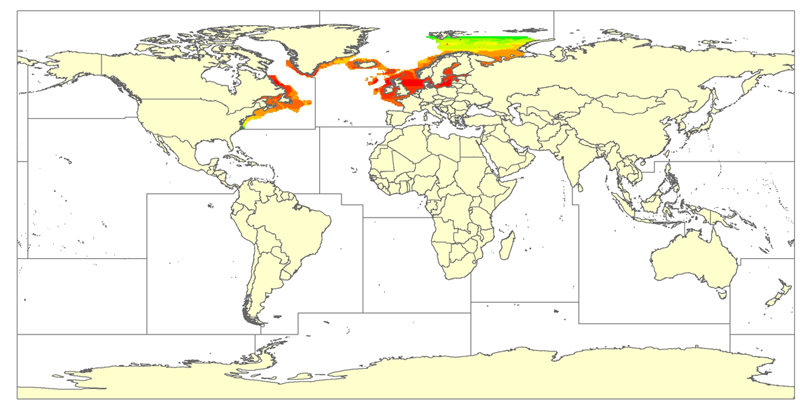

<!-- saved from url=(0049)/reference.html#15 -->
<html xmlns:v="urn:schemas-microsoft-com:vml" xmlns:o="urn:schemas-microsoft-com:office:office" xmlns:w="urn:schemas-microsoft-com:office:word" xmlns:st1="urn:schemas-microsoft-com:office:smarttags" xmlns="http://www.w3.org/TR/REC-html40" xmlns:ns0="urn:schemas-microsoft-com:office:smarttags"><head><meta http-equiv="Content-Type" content="text/html; charset=windows-1252">

<meta name="ProgId" content="Word.Document">
<meta name="Generator" content="Microsoft Word 11">
<meta name="Originator" content="Microsoft Word 11">
<link rel="File-List" href="http://www.seaaroundus.org/doc//reference_images//filelist.xml">
<link rel="Edit-Time-Data" href="http://www.seaaroundus.org/doc//reference_images//editdata.mso">
<link rel="OLE-Object-Data" href="http://www.seaaroundus.org/doc//reference_images//oledata.mso">
<!--[if !mso]>
<style>
v\:* {behavior:url(#default#VML);}
o\:* {behavior:url(#default#VML);}
w\:* {behavior:url(#default#VML);}
.shape {behavior:url(#default#VML);}
</style>
<![endif]-->
<title>Reference manual | Sea Around Us Project</title>
</head><body bgcolor="white" lang="EN-US" link="blue" vlink="blue" style="tab-interval:36.0pt" alink="blue"><o:smarttagtype namespaceuri="urn:schemas-microsoft-com:office:smarttags" name="State">
<o:smarttagtype namespaceuri="urn:schemas-microsoft-com:office:smarttags" name="country-region">
<o:smarttagtype namespaceuri="urn:schemas-microsoft-com:office:smarttags" name="PersonName">
<o:smarttagtype namespaceuri="urn:schemas-microsoft-com:office:smarttags" name="place">
<o:smarttagtype namespaceuri="urn:schemas-microsoft-com:office:smarttags" name="PlaceType">
<o:smarttagtype namespaceuri="urn:schemas-microsoft-com:office:smarttags" name="PlaceName">
<o:smarttagtype namespaceuri="urn:schemas-microsoft-com:office:smarttags" name="City">
<!--[if gte mso 9]><xml>
 <o:DocumentProperties>
  <o:Author>Arash Tavakolie</o:Author>
  <o:Template>Normal</o:Template>
  <o:LastAuthor>Arash Tavakolie</o:LastAuthor>
  <o:Revision>5</o:Revision>
  <o:TotalTime>15</o:TotalTime>
  <o:Created>2008-12-03T17:28:00Z</o:Created>
  <o:LastSaved>2009-04-22T21:22:00Z</o:LastSaved>
  <o:Pages>1</o:Pages>
  <o:Words>20913</o:Words>
  <o:Characters>119210</o:Characters>
  <o:Company>Sea Around Us</o:Company>
  <o:Lines>993</o:Lines>
  <o:Paragraphs>279</o:Paragraphs>
  <o:CharactersWithSpaces>139844</o:CharactersWithSpaces>
  <o:Version>11.9999</o:Version>
 </o:DocumentProperties>
</xml><![endif]--><!--[if gte mso 9]><xml>
 <w:WordDocument>
  <w:Zoom>150</w:Zoom>
  <w:ValidateAgainstSchemas/>
  <w:SaveIfXMLInvalid>false</w:SaveIfXMLInvalid>
  <w:IgnoreMixedContent>false</w:IgnoreMixedContent>
  <w:AlwaysShowPlaceholderText>false</w:AlwaysShowPlaceholderText>
  <w:BrowserLevel>MicrosoftInternetExplorer4</w:BrowserLevel>
 </w:WordDocument>
</xml><![endif]--><!--[if gte mso 9]><xml>
 <w:LatentStyles DefLockedState="false" LatentStyleCount="156">
 </w:LatentStyles>
</xml><![endif]--><!--[if !mso]><object
 classid="clsid:38481807-CA0E-42D2-BF39-B33AF135CC4D" id=ieooui></object>
<style>
st1\:*{behavior:url(#ieooui) }
</style>
<![endif]-->
<style>
<!--
 /* Font Definitions */
 @font-face
	{font-family:"Arial Unicode MS";
	panose-1:2 11 6 4 2 2 2 2 2 4;
	mso-font-charset:128;
	mso-generic-font-family:swiss;
	mso-font-pitch:variable;
	mso-font-signature:-1 -369098753 63 0 4129279 0;}
@font-face
	{font-family:"Microsoft Sans Serif";
	panose-1:2 11 6 4 2 2 2 2 2 4;
	mso-font-charset:0;
	mso-generic-font-family:swiss;
	mso-font-pitch:variable;
	mso-font-signature:1627421663 -2147483648 8 0 66047 0;}
@font-face
	{font-family:"\@Arial Unicode MS";
	panose-1:2 11 6 4 2 2 2 2 2 4;
	mso-font-charset:128;
	mso-generic-font-family:swiss;
	mso-font-pitch:variable;
	mso-font-signature:-1 -369098753 63 0 4129279 0;}
 /* Style Definitions */
 p.MsoNormal, li.MsoNormal, div.MsoNormal
	{mso-style-parent:"";
	margin:0cm;
	margin-bottom:.0001pt;
	mso-pagination:widow-orphan;
	font-size:12.0pt;
	font-family:"Times New Roman";
	mso-fareast-font-family:"Times New Roman";}
h1
	{margin-top:24.0pt;
	margin-right:0cm;
	margin-bottom:6.0pt;
	margin-left:0cm;
	mso-pagination:widow-orphan;
	page-break-after:avoid;
	mso-outline-level:1;
	font-size:14.0pt;
	font-family:Arial;
	font-weight:bold;}
h2
	{margin-top:18.0pt;
	margin-right:0cm;
	margin-bottom:3.0pt;
	margin-left:21.25pt;
	text-indent:-21.25pt;
	mso-pagination:widow-orphan;
	page-break-after:avoid;
	mso-outline-level:2;
	font-size:13.0pt;
	font-family:Arial;
	font-weight:bold;}
h3
	{margin-top:12.0pt;
	margin-right:0cm;
	margin-bottom:3.0pt;
	margin-left:42.55pt;
	text-indent:-42.55pt;
	mso-pagination:widow-orphan;
	page-break-after:avoid;
	mso-outline-level:3;
	font-size:12.0pt;
	font-family:Arial;
	font-weight:bold;}
h4
	{margin-top:6.0pt;
	margin-right:0cm;
	margin-bottom:3.0pt;
	margin-left:144.0pt;
	text-indent:-18.0pt;
	mso-pagination:widow-orphan;
	page-break-after:avoid;
	mso-outline-level:4;
	font-size:12.0pt;
	font-family:Arial;
	font-weight:normal;}
h5
	{margin-top:12.0pt;
	margin-right:0cm;
	margin-bottom:3.0pt;
	margin-left:180.0pt;
	text-align:justify;
	text-indent:-18.0pt;
	mso-pagination:widow-orphan;
	mso-outline-level:5;
	font-size:13.0pt;
	font-family:"Times New Roman";
	font-weight:bold;
	font-style:italic;}
h6
	{margin-top:12.0pt;
	margin-right:0cm;
	margin-bottom:3.0pt;
	margin-left:216.0pt;
	text-align:justify;
	text-indent:-9.0pt;
	mso-pagination:widow-orphan;
	mso-outline-level:6;
	font-size:11.0pt;
	font-family:"Times New Roman";
	font-weight:bold;}
p.MsoFootnoteText, li.MsoFootnoteText, div.MsoFootnoteText
	{mso-style-noshow:yes;
	margin:0cm;
	margin-bottom:.0001pt;
	mso-pagination:widow-orphan;
	font-size:10.0pt;
	font-family:"Times New Roman";
	mso-fareast-font-family:"Times New Roman";}
span.MsoFootnoteReference
	{mso-style-noshow:yes;
	vertical-align:super;}
p.MsoListNumber, li.MsoListNumber, div.MsoListNumber
	{mso-margin-top-alt:auto;
	margin-right:0cm;
	mso-margin-bottom-alt:auto;
	margin-left:0cm;
	text-align:justify;
	text-indent:18.0pt;
	mso-pagination:widow-orphan;
	font-size:10.0pt;
	font-family:Arial;
	mso-fareast-font-family:"Times New Roman";}
p.MsoBodyTextIndent, li.MsoBodyTextIndent, div.MsoBodyTextIndent
	{mso-margin-top-alt:auto;
	margin-right:0cm;
	mso-margin-bottom-alt:auto;
	margin-left:0cm;
	mso-pagination:widow-orphan;
	font-size:12.0pt;
	font-family:"Times New Roman";
	mso-fareast-font-family:"Times New Roman";}
a:link, span.MsoHyperlink
	{font-family:Arial;
	mso-ascii-font-family:Arial;
	mso-hansi-font-family:Arial;
	mso-bidi-font-family:Arial;
	color:blue;
	text-decoration:underline;
	text-underline:single;}
a:visited, span.MsoHyperlinkFollowed
	{color:blue;
	text-decoration:underline;
	text-underline:single;}
p
	{mso-margin-top-alt:auto;
	margin-right:0cm;
	mso-margin-bottom-alt:auto;
	margin-left:0cm;
	mso-pagination:widow-orphan;
	font-size:12.0pt;
	font-family:"Times New Roman";
	mso-fareast-font-family:"Times New Roman";}
p.normal, li.normal, div.normal
	{mso-style-name:normal;
	mso-margin-top-alt:auto;
	margin-right:0cm;
	mso-margin-bottom-alt:auto;
	margin-left:0cm;
	text-align:justify;
	text-indent:1.0cm;
	mso-pagination:widow-orphan;
	font-size:10.0pt;
	font-family:Arial;
	mso-fareast-font-family:"Times New Roman";}
p.msohyperlink0, li.msohyperlink0, div.msohyperlink0
	{mso-style-name:msohyperlink;
	mso-margin-top-alt:auto;
	margin-right:0cm;
	mso-margin-bottom-alt:auto;
	margin-left:0cm;
	mso-pagination:widow-orphan;
	font-size:12.0pt;
	font-family:Arial;
	mso-fareast-font-family:"Times New Roman";
	color:blue;
	text-decoration:underline;
	text-underline:single;}
p.normalfirstline, li.normalfirstline, div.normalfirstline
	{mso-style-name:normalfirstline;
	mso-margin-top-alt:auto;
	margin-right:0cm;
	mso-margin-bottom-alt:auto;
	margin-left:0cm;
	text-align:justify;
	mso-pagination:widow-orphan;
	font-size:10.0pt;
	font-family:Arial;
	mso-fareast-font-family:"Times New Roman";}
p.figures, li.figures, div.figures
	{mso-style-name:figures;
	mso-margin-top-alt:auto;
	margin-right:0cm;
	mso-margin-bottom-alt:auto;
	margin-left:0cm;
	text-align:center;
	mso-pagination:widow-orphan;
	font-size:9.0pt;
	font-family:Arial;
	mso-fareast-font-family:"Times New Roman";}
p.figureslegend, li.figureslegend, div.figureslegend
	{mso-style-name:figureslegend;
	mso-margin-top-alt:auto;
	margin-right:0cm;
	mso-margin-bottom-alt:auto;
	margin-left:0cm;
	text-align:center;
	mso-pagination:widow-orphan;
	font-size:9.0pt;
	font-family:Arial;
	mso-fareast-font-family:"Times New Roman";}
p.formula, li.formula, div.formula
	{mso-style-name:formula;
	mso-margin-top-alt:auto;
	margin-right:0cm;
	mso-margin-bottom-alt:auto;
	margin-left:0cm;
	text-align:center;
	mso-pagination:widow-orphan;
	font-size:11.0pt;
	font-family:"Courier New";
	mso-fareast-font-family:"Times New Roman";}
p.listdash, li.listdash, div.listdash
	{mso-style-name:listdash;
	mso-margin-top-alt:auto;
	margin-right:0cm;
	mso-margin-bottom-alt:auto;
	margin-left:0cm;
	text-align:justify;
	text-indent:19.85pt;
	mso-pagination:widow-orphan;
	font-size:10.0pt;
	font-family:Arial;
	mso-fareast-font-family:"Times New Roman";}
p.reference, li.reference, div.reference
	{mso-style-name:reference;
	mso-margin-top-alt:auto;
	margin-right:0cm;
	mso-margin-bottom-alt:auto;
	margin-left:0cm;
	text-align:justify;
	text-indent:1.0cm;
	mso-pagination:widow-orphan;
	font-size:9.0pt;
	font-family:Arial;
	mso-fareast-font-family:"Times New Roman";}
p.tableslegend, li.tableslegend, div.tableslegend
	{mso-style-name:tableslegend;
	mso-margin-top-alt:auto;
	margin-right:0cm;
	mso-margin-bottom-alt:auto;
	margin-left:0cm;
	text-align:right;
	mso-pagination:widow-orphan;
	font-size:9.0pt;
	font-family:Arial;
	mso-fareast-font-family:"Times New Roman";}
p.style1, li.style1, div.style1
	{mso-style-name:style1;
	mso-margin-top-alt:auto;
	margin-right:0cm;
	mso-margin-bottom-alt:auto;
	margin-left:0cm;
	mso-pagination:widow-orphan;
	font-size:10.0pt;
	font-family:"Times New Roman";
	mso-fareast-font-family:"Times New Roman";}
p.style2, li.style2, div.style2
	{mso-style-name:style2;
	mso-margin-top-alt:auto;
	margin-right:0cm;
	mso-margin-bottom-alt:auto;
	margin-left:0cm;
	mso-pagination:widow-orphan;
	font-size:12.0pt;
	font-family:"Times New Roman";
	mso-fareast-font-family:"Times New Roman";
	font-weight:bold;}
p.style3, li.style3, div.style3
	{mso-style-name:style3;
	mso-margin-top-alt:auto;
	margin-right:0cm;
	mso-margin-bottom-alt:auto;
	margin-left:0cm;
	mso-pagination:widow-orphan;
	font-size:6.5pt;
	font-family:"Times New Roman";
	mso-fareast-font-family:"Times New Roman";}
p.style4, li.style4, div.style4
	{mso-style-name:style4;
	mso-margin-top-alt:auto;
	margin-right:0cm;
	mso-margin-bottom-alt:auto;
	margin-left:0cm;
	mso-pagination:widow-orphan;
	font-size:6.0pt;
	font-family:"Times New Roman";
	mso-fareast-font-family:"Times New Roman";}
p.style5, li.style5, div.style5
	{mso-style-name:style5;
	mso-margin-top-alt:auto;
	margin-right:0cm;
	mso-margin-bottom-alt:auto;
	margin-left:0cm;
	mso-pagination:widow-orphan;
	font-size:6.5pt;
	font-family:"Times New Roman";
	mso-fareast-font-family:"Times New Roman";}
p.style6, li.style6, div.style6
	{mso-style-name:style6;
	mso-margin-top-alt:auto;
	margin-right:0cm;
	mso-margin-bottom-alt:auto;
	margin-left:0cm;
	mso-pagination:widow-orphan;
	font-size:8.0pt;
	font-family:"Times New Roman";
	mso-fareast-font-family:"Times New Roman";}
p.style7, li.style7, div.style7
	{mso-style-name:style7;
	mso-margin-top-alt:auto;
	margin-right:0cm;
	mso-margin-bottom-alt:auto;
	margin-left:0cm;
	mso-pagination:widow-orphan;
	font-size:9.0pt;
	font-family:"Times New Roman";
	mso-fareast-font-family:"Times New Roman";}
p.style8, li.style8, div.style8
	{mso-style-name:style8;
	mso-margin-top-alt:auto;
	margin-right:0cm;
	mso-margin-bottom-alt:auto;
	margin-left:0cm;
	mso-pagination:widow-orphan;
	font-size:12.0pt;
	font-family:"Times New Roman";
	mso-fareast-font-family:"Times New Roman";}
span.normalfirstline1
	{mso-style-name:normalfirstline1;
	mso-ansi-font-size:10.0pt;
	mso-bidi-font-size:10.0pt;
	font-family:Arial;
	mso-ascii-font-family:Arial;
	mso-hansi-font-family:Arial;
	mso-bidi-font-family:Arial;}
span.figures1
	{mso-style-name:figures1;
	mso-ansi-font-size:9.0pt;
	mso-bidi-font-size:9.0pt;
	font-family:Arial;
	mso-ascii-font-family:Arial;
	mso-hansi-font-family:Arial;
	mso-bidi-font-family:Arial;}
span.style81
	{mso-style-name:style81;
	mso-ansi-font-size:12.0pt;
	mso-bidi-font-size:12.0pt;}
span.figureslegend1
	{mso-style-name:figureslegend1;
	mso-ansi-font-size:9.0pt;
	mso-bidi-font-size:9.0pt;
	font-family:Arial;
	mso-ascii-font-family:Arial;
	mso-hansi-font-family:Arial;
	mso-bidi-font-family:Arial;}
span.style11
	{mso-style-name:style11;
	mso-ansi-font-size:10.0pt;
	mso-bidi-font-size:10.0pt;}
span.style31
	{mso-style-name:style31;
	mso-ansi-font-size:6.5pt;
	mso-bidi-font-size:6.5pt;}
span.style41
	{mso-style-name:style41;
	mso-ansi-font-size:6.0pt;
	mso-bidi-font-size:6.0pt;}
span.style51
	{mso-style-name:style51;
	mso-ansi-font-size:6.5pt;
	mso-bidi-font-size:6.5pt;}
span.style61
	{mso-style-name:style61;
	mso-ansi-font-size:8.0pt;
	mso-bidi-font-size:8.0pt;}
span.style71
	{mso-style-name:style71;
	mso-ansi-font-size:9.0pt;
	mso-bidi-font-size:9.0pt;}
 /* Page Definitions */
 @page
	{mso-footnote-separator:url("/reference_images//header.htm") fs;
	mso-footnote-continuation-separator:url("/reference_images//header.htm") fcs;
	mso-endnote-separator:url("/reference_images//header.htm") es;
	mso-endnote-continuation-separator:url("/reference_images//header.htm") ecs;}
@page Section1
	{size:612.0pt 792.0pt;
	margin:72.0pt 90.0pt 72.0pt 90.0pt;
	mso-header-margin:35.4pt;
	mso-footer-margin:35.4pt;
	mso-paper-source:0;}
div.Section1
	{page:Section1;}
 /* List Definitions */
 @list l0
	{mso-list-id:4747889;
	mso-list-template-ids:758797400;}
@list l0:level1
	{mso-level-number-format:bullet;
	mso-level-text:\F0B7;
	mso-level-tab-stop:36.0pt;
	mso-level-number-position:left;
	text-indent:-18.0pt;
	mso-ansi-font-size:10.0pt;
	font-family:Symbol;}
@list l0:level2
	{mso-level-tab-stop:72.0pt;
	mso-level-number-position:left;
	text-indent:-18.0pt;}
@list l0:level3
	{mso-level-tab-stop:108.0pt;
	mso-level-number-position:left;
	text-indent:-18.0pt;}
@list l0:level4
	{mso-level-tab-stop:144.0pt;
	mso-level-number-position:left;
	text-indent:-18.0pt;}
@list l0:level5
	{mso-level-tab-stop:180.0pt;
	mso-level-number-position:left;
	text-indent:-18.0pt;}
@list l0:level6
	{mso-level-tab-stop:216.0pt;
	mso-level-number-position:left;
	text-indent:-18.0pt;}
@list l0:level7
	{mso-level-tab-stop:252.0pt;
	mso-level-number-position:left;
	text-indent:-18.0pt;}
@list l0:level8
	{mso-level-tab-stop:288.0pt;
	mso-level-number-position:left;
	text-indent:-18.0pt;}
@list l0:level9
	{mso-level-tab-stop:324.0pt;
	mso-level-number-position:left;
	text-indent:-18.0pt;}
@list l1
	{mso-list-id:39592437;
	mso-list-template-ids:-1168843664;}
@list l1:level1
	{mso-level-number-format:bullet;
	mso-level-text:\F0B7;
	mso-level-tab-stop:36.0pt;
	mso-level-number-position:left;
	text-indent:-18.0pt;
	mso-ansi-font-size:10.0pt;
	font-family:Symbol;}
@list l1:level2
	{mso-level-tab-stop:72.0pt;
	mso-level-number-position:left;
	text-indent:-18.0pt;}
@list l1:level3
	{mso-level-tab-stop:108.0pt;
	mso-level-number-position:left;
	text-indent:-18.0pt;}
@list l1:level4
	{mso-level-tab-stop:144.0pt;
	mso-level-number-position:left;
	text-indent:-18.0pt;}
@list l1:level5
	{mso-level-tab-stop:180.0pt;
	mso-level-number-position:left;
	text-indent:-18.0pt;}
@list l1:level6
	{mso-level-tab-stop:216.0pt;
	mso-level-number-position:left;
	text-indent:-18.0pt;}
@list l1:level7
	{mso-level-tab-stop:252.0pt;
	mso-level-number-position:left;
	text-indent:-18.0pt;}
@list l1:level8
	{mso-level-tab-stop:288.0pt;
	mso-level-number-position:left;
	text-indent:-18.0pt;}
@list l1:level9
	{mso-level-tab-stop:324.0pt;
	mso-level-number-position:left;
	text-indent:-18.0pt;}
@list l2
	{mso-list-id:69472401;
	mso-list-template-ids:1605250826;}
@list l2:level1
	{mso-level-number-format:bullet;
	mso-level-text:\F0B7;
	mso-level-tab-stop:36.0pt;
	mso-level-number-position:left;
	text-indent:-18.0pt;
	mso-ansi-font-size:10.0pt;
	font-family:Symbol;}
@list l2:level2
	{mso-level-tab-stop:72.0pt;
	mso-level-number-position:left;
	text-indent:-18.0pt;}
@list l2:level3
	{mso-level-tab-stop:108.0pt;
	mso-level-number-position:left;
	text-indent:-18.0pt;}
@list l2:level4
	{mso-level-tab-stop:144.0pt;
	mso-level-number-position:left;
	text-indent:-18.0pt;}
@list l2:level5
	{mso-level-tab-stop:180.0pt;
	mso-level-number-position:left;
	text-indent:-18.0pt;}
@list l2:level6
	{mso-level-tab-stop:216.0pt;
	mso-level-number-position:left;
	text-indent:-18.0pt;}
@list l2:level7
	{mso-level-tab-stop:252.0pt;
	mso-level-number-position:left;
	text-indent:-18.0pt;}
@list l2:level8
	{mso-level-tab-stop:288.0pt;
	mso-level-number-position:left;
	text-indent:-18.0pt;}
@list l2:level9
	{mso-level-tab-stop:324.0pt;
	mso-level-number-position:left;
	text-indent:-18.0pt;}
@list l3
	{mso-list-id:154956186;
	mso-list-template-ids:-707621506;}
@list l3:level1
	{mso-level-number-format:bullet;
	mso-level-text:\F0B7;
	mso-level-tab-stop:36.0pt;
	mso-level-number-position:left;
	text-indent:-18.0pt;
	mso-ansi-font-size:10.0pt;
	font-family:Symbol;}
@list l3:level2
	{mso-level-tab-stop:72.0pt;
	mso-level-number-position:left;
	text-indent:-18.0pt;}
@list l3:level3
	{mso-level-tab-stop:108.0pt;
	mso-level-number-position:left;
	text-indent:-18.0pt;}
@list l3:level4
	{mso-level-tab-stop:144.0pt;
	mso-level-number-position:left;
	text-indent:-18.0pt;}
@list l3:level5
	{mso-level-tab-stop:180.0pt;
	mso-level-number-position:left;
	text-indent:-18.0pt;}
@list l3:level6
	{mso-level-tab-stop:216.0pt;
	mso-level-number-position:left;
	text-indent:-18.0pt;}
@list l3:level7
	{mso-level-tab-stop:252.0pt;
	mso-level-number-position:left;
	text-indent:-18.0pt;}
@list l3:level8
	{mso-level-tab-stop:288.0pt;
	mso-level-number-position:left;
	text-indent:-18.0pt;}
@list l3:level9
	{mso-level-tab-stop:324.0pt;
	mso-level-number-position:left;
	text-indent:-18.0pt;}
@list l4
	{mso-list-id:192813412;
	mso-list-template-ids:1991521352;}
@list l4:level1
	{mso-level-number-format:bullet;
	mso-level-text:\F0B7;
	mso-level-tab-stop:36.0pt;
	mso-level-number-position:left;
	text-indent:-18.0pt;
	mso-ansi-font-size:10.0pt;
	font-family:Symbol;}
@list l4:level2
	{mso-level-tab-stop:72.0pt;
	mso-level-number-position:left;
	text-indent:-18.0pt;}
@list l4:level3
	{mso-level-tab-stop:108.0pt;
	mso-level-number-position:left;
	text-indent:-18.0pt;}
@list l4:level4
	{mso-level-tab-stop:144.0pt;
	mso-level-number-position:left;
	text-indent:-18.0pt;}
@list l4:level5
	{mso-level-tab-stop:180.0pt;
	mso-level-number-position:left;
	text-indent:-18.0pt;}
@list l4:level6
	{mso-level-tab-stop:216.0pt;
	mso-level-number-position:left;
	text-indent:-18.0pt;}
@list l4:level7
	{mso-level-tab-stop:252.0pt;
	mso-level-number-position:left;
	text-indent:-18.0pt;}
@list l4:level8
	{mso-level-tab-stop:288.0pt;
	mso-level-number-position:left;
	text-indent:-18.0pt;}
@list l4:level9
	{mso-level-tab-stop:324.0pt;
	mso-level-number-position:left;
	text-indent:-18.0pt;}
@list l5
	{mso-list-id:250116653;
	mso-list-template-ids:-924410490;}
@list l5:level1
	{mso-level-number-format:bullet;
	mso-level-text:\F0B7;
	mso-level-tab-stop:36.0pt;
	mso-level-number-position:left;
	text-indent:-18.0pt;
	mso-ansi-font-size:10.0pt;
	font-family:Symbol;}
@list l5:level2
	{mso-level-tab-stop:72.0pt;
	mso-level-number-position:left;
	text-indent:-18.0pt;}
@list l5:level3
	{mso-level-tab-stop:108.0pt;
	mso-level-number-position:left;
	text-indent:-18.0pt;}
@list l5:level4
	{mso-level-tab-stop:144.0pt;
	mso-level-number-position:left;
	text-indent:-18.0pt;}
@list l5:level5
	{mso-level-tab-stop:180.0pt;
	mso-level-number-position:left;
	text-indent:-18.0pt;}
@list l5:level6
	{mso-level-tab-stop:216.0pt;
	mso-level-number-position:left;
	text-indent:-18.0pt;}
@list l5:level7
	{mso-level-tab-stop:252.0pt;
	mso-level-number-position:left;
	text-indent:-18.0pt;}
@list l5:level8
	{mso-level-tab-stop:288.0pt;
	mso-level-number-position:left;
	text-indent:-18.0pt;}
@list l5:level9
	{mso-level-tab-stop:324.0pt;
	mso-level-number-position:left;
	text-indent:-18.0pt;}
@list l6
	{mso-list-id:317076787;
	mso-list-template-ids:799199052;}
@list l6:level1
	{mso-level-number-format:bullet;
	mso-level-text:\F0B7;
	mso-level-tab-stop:36.0pt;
	mso-level-number-position:left;
	text-indent:-18.0pt;
	mso-ansi-font-size:10.0pt;
	font-family:Symbol;}
@list l6:level2
	{mso-level-tab-stop:72.0pt;
	mso-level-number-position:left;
	text-indent:-18.0pt;}
@list l6:level3
	{mso-level-tab-stop:108.0pt;
	mso-level-number-position:left;
	text-indent:-18.0pt;}
@list l6:level4
	{mso-level-tab-stop:144.0pt;
	mso-level-number-position:left;
	text-indent:-18.0pt;}
@list l6:level5
	{mso-level-tab-stop:180.0pt;
	mso-level-number-position:left;
	text-indent:-18.0pt;}
@list l6:level6
	{mso-level-tab-stop:216.0pt;
	mso-level-number-position:left;
	text-indent:-18.0pt;}
@list l6:level7
	{mso-level-tab-stop:252.0pt;
	mso-level-number-position:left;
	text-indent:-18.0pt;}
@list l6:level8
	{mso-level-tab-stop:288.0pt;
	mso-level-number-position:left;
	text-indent:-18.0pt;}
@list l6:level9
	{mso-level-tab-stop:324.0pt;
	mso-level-number-position:left;
	text-indent:-18.0pt;}
@list l7
	{mso-list-id:321281765;
	mso-list-template-ids:-2032002786;}
@list l7:level1
	{mso-level-number-format:bullet;
	mso-level-text:\F0B7;
	mso-level-tab-stop:36.0pt;
	mso-level-number-position:left;
	text-indent:-18.0pt;
	mso-ansi-font-size:10.0pt;
	font-family:Symbol;}
@list l7:level2
	{mso-level-tab-stop:72.0pt;
	mso-level-number-position:left;
	text-indent:-18.0pt;}
@list l7:level3
	{mso-level-tab-stop:108.0pt;
	mso-level-number-position:left;
	text-indent:-18.0pt;}
@list l7:level4
	{mso-level-tab-stop:144.0pt;
	mso-level-number-position:left;
	text-indent:-18.0pt;}
@list l7:level5
	{mso-level-tab-stop:180.0pt;
	mso-level-number-position:left;
	text-indent:-18.0pt;}
@list l7:level6
	{mso-level-tab-stop:216.0pt;
	mso-level-number-position:left;
	text-indent:-18.0pt;}
@list l7:level7
	{mso-level-tab-stop:252.0pt;
	mso-level-number-position:left;
	text-indent:-18.0pt;}
@list l7:level8
	{mso-level-tab-stop:288.0pt;
	mso-level-number-position:left;
	text-indent:-18.0pt;}
@list l7:level9
	{mso-level-tab-stop:324.0pt;
	mso-level-number-position:left;
	text-indent:-18.0pt;}
@list l8
	{mso-list-id:489757186;
	mso-list-template-ids:196663028;}
@list l8:level1
	{mso-level-number-format:bullet;
	mso-level-text:\F0B7;
	mso-level-tab-stop:36.0pt;
	mso-level-number-position:left;
	text-indent:-18.0pt;
	mso-ansi-font-size:10.0pt;
	font-family:Symbol;}
@list l8:level2
	{mso-level-tab-stop:72.0pt;
	mso-level-number-position:left;
	text-indent:-18.0pt;}
@list l8:level3
	{mso-level-tab-stop:108.0pt;
	mso-level-number-position:left;
	text-indent:-18.0pt;}
@list l8:level4
	{mso-level-tab-stop:144.0pt;
	mso-level-number-position:left;
	text-indent:-18.0pt;}
@list l8:level5
	{mso-level-tab-stop:180.0pt;
	mso-level-number-position:left;
	text-indent:-18.0pt;}
@list l8:level6
	{mso-level-tab-stop:216.0pt;
	mso-level-number-position:left;
	text-indent:-18.0pt;}
@list l8:level7
	{mso-level-tab-stop:252.0pt;
	mso-level-number-position:left;
	text-indent:-18.0pt;}
@list l8:level8
	{mso-level-tab-stop:288.0pt;
	mso-level-number-position:left;
	text-indent:-18.0pt;}
@list l8:level9
	{mso-level-tab-stop:324.0pt;
	mso-level-number-position:left;
	text-indent:-18.0pt;}
@list l9
	{mso-list-id:494876369;
	mso-list-template-ids:939814302;}
@list l9:level1
	{mso-level-number-format:bullet;
	mso-level-text:\F0B7;
	mso-level-tab-stop:36.0pt;
	mso-level-number-position:left;
	text-indent:-18.0pt;
	mso-ansi-font-size:10.0pt;
	font-family:Symbol;}
@list l9:level2
	{mso-level-tab-stop:72.0pt;
	mso-level-number-position:left;
	text-indent:-18.0pt;}
@list l9:level3
	{mso-level-tab-stop:108.0pt;
	mso-level-number-position:left;
	text-indent:-18.0pt;}
@list l9:level4
	{mso-level-tab-stop:144.0pt;
	mso-level-number-position:left;
	text-indent:-18.0pt;}
@list l9:level5
	{mso-level-tab-stop:180.0pt;
	mso-level-number-position:left;
	text-indent:-18.0pt;}
@list l9:level6
	{mso-level-tab-stop:216.0pt;
	mso-level-number-position:left;
	text-indent:-18.0pt;}
@list l9:level7
	{mso-level-tab-stop:252.0pt;
	mso-level-number-position:left;
	text-indent:-18.0pt;}
@list l9:level8
	{mso-level-tab-stop:288.0pt;
	mso-level-number-position:left;
	text-indent:-18.0pt;}
@list l9:level9
	{mso-level-tab-stop:324.0pt;
	mso-level-number-position:left;
	text-indent:-18.0pt;}
@list l10
	{mso-list-id:717242649;
	mso-list-template-ids:1422395408;}
@list l10:level1
	{mso-level-number-format:bullet;
	mso-level-text:\F0B7;
	mso-level-tab-stop:36.0pt;
	mso-level-number-position:left;
	text-indent:-18.0pt;
	mso-ansi-font-size:10.0pt;
	font-family:Symbol;}
@list l10:level2
	{mso-level-tab-stop:72.0pt;
	mso-level-number-position:left;
	text-indent:-18.0pt;}
@list l10:level3
	{mso-level-tab-stop:108.0pt;
	mso-level-number-position:left;
	text-indent:-18.0pt;}
@list l10:level4
	{mso-level-tab-stop:144.0pt;
	mso-level-number-position:left;
	text-indent:-18.0pt;}
@list l10:level5
	{mso-level-tab-stop:180.0pt;
	mso-level-number-position:left;
	text-indent:-18.0pt;}
@list l10:level6
	{mso-level-tab-stop:216.0pt;
	mso-level-number-position:left;
	text-indent:-18.0pt;}
@list l10:level7
	{mso-level-tab-stop:252.0pt;
	mso-level-number-position:left;
	text-indent:-18.0pt;}
@list l10:level8
	{mso-level-tab-stop:288.0pt;
	mso-level-number-position:left;
	text-indent:-18.0pt;}
@list l10:level9
	{mso-level-tab-stop:324.0pt;
	mso-level-number-position:left;
	text-indent:-18.0pt;}
@list l11
	{mso-list-id:756631877;
	mso-list-template-ids:569397104;}
@list l11:level1
	{mso-level-number-format:bullet;
	mso-level-text:\F0B7;
	mso-level-tab-stop:36.0pt;
	mso-level-number-position:left;
	text-indent:-18.0pt;
	mso-ansi-font-size:10.0pt;
	font-family:Symbol;}
@list l11:level2
	{mso-level-tab-stop:72.0pt;
	mso-level-number-position:left;
	text-indent:-18.0pt;}
@list l11:level3
	{mso-level-tab-stop:108.0pt;
	mso-level-number-position:left;
	text-indent:-18.0pt;}
@list l11:level4
	{mso-level-tab-stop:144.0pt;
	mso-level-number-position:left;
	text-indent:-18.0pt;}
@list l11:level5
	{mso-level-tab-stop:180.0pt;
	mso-level-number-position:left;
	text-indent:-18.0pt;}
@list l11:level6
	{mso-level-tab-stop:216.0pt;
	mso-level-number-position:left;
	text-indent:-18.0pt;}
@list l11:level7
	{mso-level-tab-stop:252.0pt;
	mso-level-number-position:left;
	text-indent:-18.0pt;}
@list l11:level8
	{mso-level-tab-stop:288.0pt;
	mso-level-number-position:left;
	text-indent:-18.0pt;}
@list l11:level9
	{mso-level-tab-stop:324.0pt;
	mso-level-number-position:left;
	text-indent:-18.0pt;}
@list l12
	{mso-list-id:794445463;
	mso-list-template-ids:-1799584030;}
@list l12:level1
	{mso-level-number-format:bullet;
	mso-level-text:\F0B7;
	mso-level-tab-stop:36.0pt;
	mso-level-number-position:left;
	text-indent:-18.0pt;
	mso-ansi-font-size:10.0pt;
	font-family:Symbol;}
@list l12:level2
	{mso-level-tab-stop:72.0pt;
	mso-level-number-position:left;
	text-indent:-18.0pt;}
@list l12:level3
	{mso-level-tab-stop:108.0pt;
	mso-level-number-position:left;
	text-indent:-18.0pt;}
@list l12:level4
	{mso-level-tab-stop:144.0pt;
	mso-level-number-position:left;
	text-indent:-18.0pt;}
@list l12:level5
	{mso-level-tab-stop:180.0pt;
	mso-level-number-position:left;
	text-indent:-18.0pt;}
@list l12:level6
	{mso-level-tab-stop:216.0pt;
	mso-level-number-position:left;
	text-indent:-18.0pt;}
@list l12:level7
	{mso-level-tab-stop:252.0pt;
	mso-level-number-position:left;
	text-indent:-18.0pt;}
@list l12:level8
	{mso-level-tab-stop:288.0pt;
	mso-level-number-position:left;
	text-indent:-18.0pt;}
@list l12:level9
	{mso-level-tab-stop:324.0pt;
	mso-level-number-position:left;
	text-indent:-18.0pt;}
@list l13
	{mso-list-id:895969296;
	mso-list-template-ids:-641556352;}
@list l13:level1
	{mso-level-number-format:bullet;
	mso-level-text:\F0B7;
	mso-level-tab-stop:36.0pt;
	mso-level-number-position:left;
	text-indent:-18.0pt;
	mso-ansi-font-size:10.0pt;
	font-family:Symbol;}
@list l13:level2
	{mso-level-tab-stop:72.0pt;
	mso-level-number-position:left;
	text-indent:-18.0pt;}
@list l13:level3
	{mso-level-tab-stop:108.0pt;
	mso-level-number-position:left;
	text-indent:-18.0pt;}
@list l13:level4
	{mso-level-tab-stop:144.0pt;
	mso-level-number-position:left;
	text-indent:-18.0pt;}
@list l13:level5
	{mso-level-tab-stop:180.0pt;
	mso-level-number-position:left;
	text-indent:-18.0pt;}
@list l13:level6
	{mso-level-tab-stop:216.0pt;
	mso-level-number-position:left;
	text-indent:-18.0pt;}
@list l13:level7
	{mso-level-tab-stop:252.0pt;
	mso-level-number-position:left;
	text-indent:-18.0pt;}
@list l13:level8
	{mso-level-tab-stop:288.0pt;
	mso-level-number-position:left;
	text-indent:-18.0pt;}
@list l13:level9
	{mso-level-tab-stop:324.0pt;
	mso-level-number-position:left;
	text-indent:-18.0pt;}
@list l14
	{mso-list-id:1400903988;
	mso-list-template-ids:932880688;}
@list l14:level1
	{mso-level-number-format:bullet;
	mso-level-text:\F0B7;
	mso-level-tab-stop:36.0pt;
	mso-level-number-position:left;
	text-indent:-18.0pt;
	mso-ansi-font-size:10.0pt;
	font-family:Symbol;}
@list l14:level2
	{mso-level-tab-stop:72.0pt;
	mso-level-number-position:left;
	text-indent:-18.0pt;}
@list l14:level3
	{mso-level-tab-stop:108.0pt;
	mso-level-number-position:left;
	text-indent:-18.0pt;}
@list l14:level4
	{mso-level-tab-stop:144.0pt;
	mso-level-number-position:left;
	text-indent:-18.0pt;}
@list l14:level5
	{mso-level-tab-stop:180.0pt;
	mso-level-number-position:left;
	text-indent:-18.0pt;}
@list l14:level6
	{mso-level-tab-stop:216.0pt;
	mso-level-number-position:left;
	text-indent:-18.0pt;}
@list l14:level7
	{mso-level-tab-stop:252.0pt;
	mso-level-number-position:left;
	text-indent:-18.0pt;}
@list l14:level8
	{mso-level-tab-stop:288.0pt;
	mso-level-number-position:left;
	text-indent:-18.0pt;}
@list l14:level9
	{mso-level-tab-stop:324.0pt;
	mso-level-number-position:left;
	text-indent:-18.0pt;}
@list l15
	{mso-list-id:1462648933;
	mso-list-template-ids:1654579590;}
@list l15:level1
	{mso-level-number-format:bullet;
	mso-level-text:\F0B7;
	mso-level-tab-stop:36.0pt;
	mso-level-number-position:left;
	text-indent:-18.0pt;
	mso-ansi-font-size:10.0pt;
	font-family:Symbol;}
@list l15:level2
	{mso-level-tab-stop:72.0pt;
	mso-level-number-position:left;
	text-indent:-18.0pt;}
@list l15:level3
	{mso-level-tab-stop:108.0pt;
	mso-level-number-position:left;
	text-indent:-18.0pt;}
@list l15:level4
	{mso-level-tab-stop:144.0pt;
	mso-level-number-position:left;
	text-indent:-18.0pt;}
@list l15:level5
	{mso-level-tab-stop:180.0pt;
	mso-level-number-position:left;
	text-indent:-18.0pt;}
@list l15:level6
	{mso-level-tab-stop:216.0pt;
	mso-level-number-position:left;
	text-indent:-18.0pt;}
@list l15:level7
	{mso-level-tab-stop:252.0pt;
	mso-level-number-position:left;
	text-indent:-18.0pt;}
@list l15:level8
	{mso-level-tab-stop:288.0pt;
	mso-level-number-position:left;
	text-indent:-18.0pt;}
@list l15:level9
	{mso-level-tab-stop:324.0pt;
	mso-level-number-position:left;
	text-indent:-18.0pt;}
@list l16
	{mso-list-id:1707173763;
	mso-list-template-ids:-1727353436;}
@list l16:level1
	{mso-level-number-format:bullet;
	mso-level-text:\F0B7;
	mso-level-tab-stop:36.0pt;
	mso-level-number-position:left;
	text-indent:-18.0pt;
	mso-ansi-font-size:10.0pt;
	font-family:Symbol;}
@list l16:level2
	{mso-level-tab-stop:72.0pt;
	mso-level-number-position:left;
	text-indent:-18.0pt;}
@list l16:level3
	{mso-level-tab-stop:108.0pt;
	mso-level-number-position:left;
	text-indent:-18.0pt;}
@list l16:level4
	{mso-level-tab-stop:144.0pt;
	mso-level-number-position:left;
	text-indent:-18.0pt;}
@list l16:level5
	{mso-level-tab-stop:180.0pt;
	mso-level-number-position:left;
	text-indent:-18.0pt;}
@list l16:level6
	{mso-level-tab-stop:216.0pt;
	mso-level-number-position:left;
	text-indent:-18.0pt;}
@list l16:level7
	{mso-level-tab-stop:252.0pt;
	mso-level-number-position:left;
	text-indent:-18.0pt;}
@list l16:level8
	{mso-level-tab-stop:288.0pt;
	mso-level-number-position:left;
	text-indent:-18.0pt;}
@list l16:level9
	{mso-level-tab-stop:324.0pt;
	mso-level-number-position:left;
	text-indent:-18.0pt;}
@list l17
	{mso-list-id:1710762706;
	mso-list-template-ids:-524381328;}
@list l17:level1
	{mso-level-number-format:bullet;
	mso-level-text:\F0B7;
	mso-level-tab-stop:36.0pt;
	mso-level-number-position:left;
	text-indent:-18.0pt;
	mso-ansi-font-size:10.0pt;
	font-family:Symbol;}
@list l17:level2
	{mso-level-tab-stop:72.0pt;
	mso-level-number-position:left;
	text-indent:-18.0pt;}
@list l17:level3
	{mso-level-tab-stop:108.0pt;
	mso-level-number-position:left;
	text-indent:-18.0pt;}
@list l17:level4
	{mso-level-tab-stop:144.0pt;
	mso-level-number-position:left;
	text-indent:-18.0pt;}
@list l17:level5
	{mso-level-tab-stop:180.0pt;
	mso-level-number-position:left;
	text-indent:-18.0pt;}
@list l17:level6
	{mso-level-tab-stop:216.0pt;
	mso-level-number-position:left;
	text-indent:-18.0pt;}
@list l17:level7
	{mso-level-tab-stop:252.0pt;
	mso-level-number-position:left;
	text-indent:-18.0pt;}
@list l17:level8
	{mso-level-tab-stop:288.0pt;
	mso-level-number-position:left;
	text-indent:-18.0pt;}
@list l17:level9
	{mso-level-tab-stop:324.0pt;
	mso-level-number-position:left;
	text-indent:-18.0pt;}
@list l18
	{mso-list-id:1768884751;
	mso-list-template-ids:1063154634;}
@list l18:level1
	{mso-level-number-format:bullet;
	mso-level-text:\F0B7;
	mso-level-tab-stop:36.0pt;
	mso-level-number-position:left;
	text-indent:-18.0pt;
	mso-ansi-font-size:10.0pt;
	font-family:Symbol;}
@list l18:level2
	{mso-level-tab-stop:72.0pt;
	mso-level-number-position:left;
	text-indent:-18.0pt;}
@list l18:level3
	{mso-level-tab-stop:108.0pt;
	mso-level-number-position:left;
	text-indent:-18.0pt;}
@list l18:level4
	{mso-level-tab-stop:144.0pt;
	mso-level-number-position:left;
	text-indent:-18.0pt;}
@list l18:level5
	{mso-level-tab-stop:180.0pt;
	mso-level-number-position:left;
	text-indent:-18.0pt;}
@list l18:level6
	{mso-level-tab-stop:216.0pt;
	mso-level-number-position:left;
	text-indent:-18.0pt;}
@list l18:level7
	{mso-level-tab-stop:252.0pt;
	mso-level-number-position:left;
	text-indent:-18.0pt;}
@list l18:level8
	{mso-level-tab-stop:288.0pt;
	mso-level-number-position:left;
	text-indent:-18.0pt;}
@list l18:level9
	{mso-level-tab-stop:324.0pt;
	mso-level-number-position:left;
	text-indent:-18.0pt;}
@list l19
	{mso-list-id:1870491604;
	mso-list-template-ids:-279942246;}
@list l19:level1
	{mso-level-number-format:bullet;
	mso-level-text:\F0B7;
	mso-level-tab-stop:36.0pt;
	mso-level-number-position:left;
	text-indent:-18.0pt;
	mso-ansi-font-size:10.0pt;
	font-family:Symbol;}
@list l19:level2
	{mso-level-tab-stop:72.0pt;
	mso-level-number-position:left;
	text-indent:-18.0pt;}
@list l19:level3
	{mso-level-tab-stop:108.0pt;
	mso-level-number-position:left;
	text-indent:-18.0pt;}
@list l19:level4
	{mso-level-tab-stop:144.0pt;
	mso-level-number-position:left;
	text-indent:-18.0pt;}
@list l19:level5
	{mso-level-tab-stop:180.0pt;
	mso-level-number-position:left;
	text-indent:-18.0pt;}
@list l19:level6
	{mso-level-tab-stop:216.0pt;
	mso-level-number-position:left;
	text-indent:-18.0pt;}
@list l19:level7
	{mso-level-tab-stop:252.0pt;
	mso-level-number-position:left;
	text-indent:-18.0pt;}
@list l19:level8
	{mso-level-tab-stop:288.0pt;
	mso-level-number-position:left;
	text-indent:-18.0pt;}
@list l19:level9
	{mso-level-tab-stop:324.0pt;
	mso-level-number-position:left;
	text-indent:-18.0pt;}
@list l20
	{mso-list-id:1910655808;
	mso-list-template-ids:412363674;}
@list l20:level1
	{mso-level-number-format:bullet;
	mso-level-text:\F0B7;
	mso-level-tab-stop:36.0pt;
	mso-level-number-position:left;
	text-indent:-18.0pt;
	mso-ansi-font-size:10.0pt;
	font-family:Symbol;}
@list l20:level2
	{mso-level-tab-stop:72.0pt;
	mso-level-number-position:left;
	text-indent:-18.0pt;}
@list l20:level3
	{mso-level-tab-stop:108.0pt;
	mso-level-number-position:left;
	text-indent:-18.0pt;}
@list l20:level4
	{mso-level-tab-stop:144.0pt;
	mso-level-number-position:left;
	text-indent:-18.0pt;}
@list l20:level5
	{mso-level-tab-stop:180.0pt;
	mso-level-number-position:left;
	text-indent:-18.0pt;}
@list l20:level6
	{mso-level-tab-stop:216.0pt;
	mso-level-number-position:left;
	text-indent:-18.0pt;}
@list l20:level7
	{mso-level-tab-stop:252.0pt;
	mso-level-number-position:left;
	text-indent:-18.0pt;}
@list l20:level8
	{mso-level-tab-stop:288.0pt;
	mso-level-number-position:left;
	text-indent:-18.0pt;}
@list l20:level9
	{mso-level-tab-stop:324.0pt;
	mso-level-number-position:left;
	text-indent:-18.0pt;}
@list l21
	{mso-list-id:1945577650;
	mso-list-template-ids:-344313342;}
@list l21:level1
	{mso-level-number-format:bullet;
	mso-level-text:\F0B7;
	mso-level-tab-stop:36.0pt;
	mso-level-number-position:left;
	text-indent:-18.0pt;
	mso-ansi-font-size:10.0pt;
	font-family:Symbol;}
@list l21:level2
	{mso-level-tab-stop:72.0pt;
	mso-level-number-position:left;
	text-indent:-18.0pt;}
@list l21:level3
	{mso-level-tab-stop:108.0pt;
	mso-level-number-position:left;
	text-indent:-18.0pt;}
@list l21:level4
	{mso-level-tab-stop:144.0pt;
	mso-level-number-position:left;
	text-indent:-18.0pt;}
@list l21:level5
	{mso-level-tab-stop:180.0pt;
	mso-level-number-position:left;
	text-indent:-18.0pt;}
@list l21:level6
	{mso-level-tab-stop:216.0pt;
	mso-level-number-position:left;
	text-indent:-18.0pt;}
@list l21:level7
	{mso-level-tab-stop:252.0pt;
	mso-level-number-position:left;
	text-indent:-18.0pt;}
@list l21:level8
	{mso-level-tab-stop:288.0pt;
	mso-level-number-position:left;
	text-indent:-18.0pt;}
@list l21:level9
	{mso-level-tab-stop:324.0pt;
	mso-level-number-position:left;
	text-indent:-18.0pt;}
@list l22
	{mso-list-id:1989901536;
	mso-list-template-ids:-694665446;}
@list l22:level1
	{mso-level-number-format:bullet;
	mso-level-text:\F0B7;
	mso-level-tab-stop:36.0pt;
	mso-level-number-position:left;
	text-indent:-18.0pt;
	mso-ansi-font-size:10.0pt;
	font-family:Symbol;}
@list l22:level2
	{mso-level-tab-stop:72.0pt;
	mso-level-number-position:left;
	text-indent:-18.0pt;}
@list l22:level3
	{mso-level-tab-stop:108.0pt;
	mso-level-number-position:left;
	text-indent:-18.0pt;}
@list l22:level4
	{mso-level-tab-stop:144.0pt;
	mso-level-number-position:left;
	text-indent:-18.0pt;}
@list l22:level5
	{mso-level-tab-stop:180.0pt;
	mso-level-number-position:left;
	text-indent:-18.0pt;}
@list l22:level6
	{mso-level-tab-stop:216.0pt;
	mso-level-number-position:left;
	text-indent:-18.0pt;}
@list l22:level7
	{mso-level-tab-stop:252.0pt;
	mso-level-number-position:left;
	text-indent:-18.0pt;}
@list l22:level8
	{mso-level-tab-stop:288.0pt;
	mso-level-number-position:left;
	text-indent:-18.0pt;}
@list l22:level9
	{mso-level-tab-stop:324.0pt;
	mso-level-number-position:left;
	text-indent:-18.0pt;}
@list l23
	{mso-list-id:2010671505;
	mso-list-template-ids:1957303772;}
@list l23:level1
	{mso-level-number-format:bullet;
	mso-level-text:\F0B7;
	mso-level-tab-stop:36.0pt;
	mso-level-number-position:left;
	text-indent:-18.0pt;
	mso-ansi-font-size:10.0pt;
	font-family:Symbol;}
@list l23:level2
	{mso-level-tab-stop:72.0pt;
	mso-level-number-position:left;
	text-indent:-18.0pt;}
@list l23:level3
	{mso-level-tab-stop:108.0pt;
	mso-level-number-position:left;
	text-indent:-18.0pt;}
@list l23:level4
	{mso-level-tab-stop:144.0pt;
	mso-level-number-position:left;
	text-indent:-18.0pt;}
@list l23:level5
	{mso-level-tab-stop:180.0pt;
	mso-level-number-position:left;
	text-indent:-18.0pt;}
@list l23:level6
	{mso-level-tab-stop:216.0pt;
	mso-level-number-position:left;
	text-indent:-18.0pt;}
@list l23:level7
	{mso-level-tab-stop:252.0pt;
	mso-level-number-position:left;
	text-indent:-18.0pt;}
@list l23:level8
	{mso-level-tab-stop:288.0pt;
	mso-level-number-position:left;
	text-indent:-18.0pt;}
@list l23:level9
	{mso-level-tab-stop:324.0pt;
	mso-level-number-position:left;
	text-indent:-18.0pt;}
@list l24
	{mso-list-id:2038768494;
	mso-list-template-ids:-1275165834;}
@list l24:level1
	{mso-level-number-format:bullet;
	mso-level-text:\F0B7;
	mso-level-tab-stop:36.0pt;
	mso-level-number-position:left;
	text-indent:-18.0pt;
	mso-ansi-font-size:10.0pt;
	font-family:Symbol;}
@list l24:level2
	{mso-level-tab-stop:72.0pt;
	mso-level-number-position:left;
	text-indent:-18.0pt;}
@list l24:level3
	{mso-level-tab-stop:108.0pt;
	mso-level-number-position:left;
	text-indent:-18.0pt;}
@list l24:level4
	{mso-level-tab-stop:144.0pt;
	mso-level-number-position:left;
	text-indent:-18.0pt;}
@list l24:level5
	{mso-level-tab-stop:180.0pt;
	mso-level-number-position:left;
	text-indent:-18.0pt;}
@list l24:level6
	{mso-level-tab-stop:216.0pt;
	mso-level-number-position:left;
	text-indent:-18.0pt;}
@list l24:level7
	{mso-level-tab-stop:252.0pt;
	mso-level-number-position:left;
	text-indent:-18.0pt;}
@list l24:level8
	{mso-level-tab-stop:288.0pt;
	mso-level-number-position:left;
	text-indent:-18.0pt;}
@list l24:level9
	{mso-level-tab-stop:324.0pt;
	mso-level-number-position:left;
	text-indent:-18.0pt;}
@list l25
	{mso-list-id:2144618066;
	mso-list-template-ids:50603030;}
@list l25:level1
	{mso-level-number-format:bullet;
	mso-level-text:\F0B7;
	mso-level-tab-stop:36.0pt;
	mso-level-number-position:left;
	text-indent:-18.0pt;
	mso-ansi-font-size:10.0pt;
	font-family:Symbol;}
@list l25:level2
	{mso-level-tab-stop:72.0pt;
	mso-level-number-position:left;
	text-indent:-18.0pt;}
@list l25:level3
	{mso-level-tab-stop:108.0pt;
	mso-level-number-position:left;
	text-indent:-18.0pt;}
@list l25:level4
	{mso-level-tab-stop:144.0pt;
	mso-level-number-position:left;
	text-indent:-18.0pt;}
@list l25:level5
	{mso-level-tab-stop:180.0pt;
	mso-level-number-position:left;
	text-indent:-18.0pt;}
@list l25:level6
	{mso-level-tab-stop:216.0pt;
	mso-level-number-position:left;
	text-indent:-18.0pt;}
@list l25:level7
	{mso-level-tab-stop:252.0pt;
	mso-level-number-position:left;
	text-indent:-18.0pt;}
@list l25:level8
	{mso-level-tab-stop:288.0pt;
	mso-level-number-position:left;
	text-indent:-18.0pt;}
@list l25:level9
	{mso-level-tab-stop:324.0pt;
	mso-level-number-position:left;
	text-indent:-18.0pt;}
ol
	{margin-bottom:0cm;}
ul
	{margin-bottom:0cm;}
-->
</style>
<!--[if gte mso 10]>
<style>
 /* Style Definitions */
 table.MsoNormalTable
	{mso-style-name:"Table Normal";
	mso-tstyle-rowband-size:0;
	mso-tstyle-colband-size:0;
	mso-style-noshow:yes;
	mso-style-parent:"";
	mso-padding-alt:0cm 5.4pt 0cm 5.4pt;
	mso-para-margin:0cm;
	mso-para-margin-bottom:.0001pt;
	mso-pagination:widow-orphan;
	font-size:10.0pt;
	font-family:"Times New Roman";
	mso-ansi-language:#0400;
	mso-fareast-language:#0400;
	mso-bidi-language:#0400;}
</style>
<![endif]--><!--[if gte mso 9]><xml>
 <o:shapedefaults v:ext="edit" spidmax="4098"/>
</xml><![endif]--><!--[if gte mso 9]><xml>
 <o:shapelayout v:ext="edit">
  <o:idmap v:ext="edit" data="1"/>
 </o:shapelayout></xml><![endif]-->


<div class="Section1">

<h1 style="text-align:justify">1.<span style="font-size:7.0pt;font-family:&quot;Times New Roman&quot;">&nbsp;&nbsp;&nbsp;&nbsp;&nbsp;&nbsp;&nbsp;&nbsp;
</span>Seamounts in the <i>Sea Around Us</i> Project's <a name="1"><span lang="EN-GB" style="mso-ansi-language:EN-GB">database</span></a></h1>

<p class="normalfirstline" style="text-indent:1.0cm">Seamounts are (extinct)
underwater volcanoes that did not grow tall enough to break to the sea surface,
and thus turn into islands.&nbsp; Once formed, seamounts tend to gradually sink
under their own weight, and the depths of the oceans are thus littered with the
remains of seamounts, which may be called ‘seamounds’.</p>

<p style="text-align:justify;text-indent:1.0cm"><span style="font-size:10.0pt;
font-family:Arial">Seamounts occur throughout the world ocean, but their number
(which may surpass 100,000) is difficult to estimate, even roughly, because it
depends on the resolution of the bathymetric map used, as well as the detection
threshold employed, i.e. the limit used to distinguish between seamounts and
seamounds.<o:p></o:p></span></p>

<p style="text-align:justify;text-indent:1.0cm"><span style="font-size:10.0pt;
font-family:Arial">For the purposes of the <i>Sea Around Us</i> Project, the
locations of a subset of the seamounts of the world were identified from a
bathymetric map distributed by <a href="http://www.ngdc.noaa.gov/mgg/fliers/01mgg04.html">NOAA</a></span><span lang="EN-GB" style="font-size:10.0pt;font-family:Arial;mso-ansi-language:EN-GB">,</span><span style="font-size:10.0pt;font-family:Arial"> using two algorithms (to be
presented elsewhere), which rely on the depth differences between adjacent
cells of that electronic map.&nbsp; About 30,000 likely seamounts were located,
but a different number would have been found, had we used different
thresholds.&nbsp; Thus, the area-specific estimates of seamount abundance we
present here are expressed in relative terms, as a percent of the unknown
‘total’ number of seamounts in the world ocean, under the assumption of
proportionality.&nbsp; Known seamount locations supplied by <a href="http://www.ngdc.noaa.gov/mgg/global/global.html">NOAA</a> and from <a href="http://seamounts.sdsc.edu/">Seamounts Online</a> were matched against the
corresponding seamounts we located, which led to an integrated set of
seamounts, and some degree of ‘ground-truthing’.<o:p></o:p></span></p>

<p style="text-align:justify;text-indent:1.0cm"><span style="font-size:10.0pt;
font-family:Arial">Another preliminary study we conducted suggested that only a
small subset of the thousands of seamounts that exist have tops close enough
(less than 100 m) to the sea surface for their enhancing effect on primary
production to be detectable from satellite images.&nbsp; This confirms that the
high fish and invertebrate biomasses observed on seamounts (including deep
ones) are maintained by the capture of drifting plankton and detritus, rather
than by <i>in-situ</i> production.<o:p></o:p></span></p>

<p style="text-align:justify;text-indent:1.0cm"><span style="font-size:10.0pt;
font-family:Arial">Information on seamount biodiversity, which is very high,
and characterized by a high degree of endemism, may be found in <a href="http://seamounts.sdsc.edu/">Seamount Online</a>, maintained by Ms Karin
Stocks, Scripps Institution for Oceanography, <st1:place w:st="on"><st1:city w:st="on">San Diego</st1:city></st1:place>.<o:p></o:p></span></p>

<h1 style="text-align:justify">2.<span style="font-size:7.0pt;font-family:&quot;Times New Roman&quot;">&nbsp;&nbsp;&nbsp;&nbsp;&nbsp;&nbsp;&nbsp;&nbsp;
</span><a name="2"><span lang="EN-GB" style="mso-ansi-language:EN-GB">Coral</span></a>
reefs</h1>

<p class="normalfirstline" style="text-indent:1.0cm">Trophical coral reefs, along
with tropical rainforest, are the most diverse ecosystems on earth.&nbsp; They
contain a multitude of species connected through a myriad of complex feeding
and behavioral interactions that are still being unraveled.&nbsp; The bulk of
these interactions involve coral reef fishes, here made accessible on a
per-country basis using <span style="color:blue"><a href="http://www.fishbase.org/">FishBase</a></span>.</p>

<p style="text-align:justify;text-indent:1.0cm"><span style="font-size:10.0pt;
font-family:Arial">Coral reefs do not occur in deep waters; most live between
the water surface and about 30 m as established by Charles Darwin about 170
years ago.&nbsp; Yet, the surface area covered by coral reefs in various parts
of the world has long been a matter of controversy.&nbsp; One of the first
estimates was by Newell (1971) but it was so uncertain (150,000-1,500,000 km<sup>2</sup>)
as to be nearly useless.&nbsp; Smith (1978) presented the first credible
estimates, which were divided into nine zones ranging from the South Atlantic,
with 8,000 km<sup>2</sup>,<sup> </sup>to <st1:place w:st="on">Southeast Asia</st1:place>
with 182,000 km<sup>2</sup>.<o:p></o:p></span></p>

<p style="text-align:justify;text-indent:1.0cm"><span style="font-size:10.0pt;
font-family:Arial">Other estimates followed, again ranging from very low
(112,000 km<sup>2</sup>; De Vooys 1979) to very high (1,994,000 km<sup>2</sup>;
Cooper 1994).&nbsp; Spalding and Grenfell (1997) identified the source of
discrepancy between these estimates as issues of definition (‘what is a reef?’)
and issues of scale (‘what maps are used to identify reefs?’).&nbsp; They also
provided their own estimate of 255,000 km<sup>2</sup>, which was near the lower
range of previous estimates.<o:p></o:p></span></p>

<p style="text-align:justify;text-indent:1.0cm"><span style="font-size:10.0pt;
font-family:Arial">We abstain from presenting country specific coral reef area
estimates in absolute terms.&nbsp; Rather, we have interfaced the coral reef
maps of the <span style="color:blue"><a href="http://www.unep-wcmc.org/">World
Conservation Monitoring Centre</a></span> with the <a href="http://www.veridian.com/offerings/suboffering.asp?offeringID=526">EEZ</a>
definitions used for other products on this website to calculate the fraction
of the world’s global coral reef area that occurs in the EEZ, or part thereof,
of a given country.&nbsp; To obtain absolute surface areas, users can thus
multiply this percentage by their preferred estimates of the global surface
area covered by coral reefs.<o:p></o:p></span></p>

<p style="text-align:justify;text-indent:1.0cm"><span style="font-size:10.0pt;
font-family:Arial">We are aware that this procedure will lead only to approximate
values as certain countries may boast more of certain types of corals than
others, which via one’s definition of coral, might influence what one perceives
as coral reef coverage.&nbsp; The problem here, however, is not the absolute
amount of coral reef cover, but the fact that in most countries, terrigenous
pollution, overfishing, coral extraction, and global warming, have much reduced
live coral cover in most countries. and will increasingly do so in the next
decades (see entries in <span style="color:blue"><a href="http://www.reefbase.org/">ReefBase</a></span>, also accessible through
this website on a per-country and regional basis).&nbsp; Thus our percentage
indicates for each country the fraction of the problem that each country ought
to resolve.<o:p></o:p></span></p>

<h2 style="text-align:justify"><span lang="FR-CA" style="mso-ansi-language:FR-CA">2.1</span><span lang="FR-CA" style="font-size:7.0pt;font-family:&quot;Times New Roman&quot;;mso-ansi-language:
FR-CA"> </span><span lang="FR-CA" style="mso-ansi-language:FR-CA">References<a name="2.1"></a><o:p></o:p></span></h2>

<p class="reference"><span lang="FR-CA" style="mso-ansi-language:FR-CA">De Vooys,
C.G.N. 1979. </span>Primary production in aquatic environments. <i>In</i>: B.
Bolin, E.T. Degens, S. Kempe and P. Ketner (eds.) SCOPE, 13: The global carbon
cycle. John Wiley and Sons. <st1:place w:st="on"><st1:city w:st="on">Chichester</st1:city>,
 <st1:country-region w:st="on">UK</st1:country-region></st1:place>.</p>

<p class="reference"><st1:place w:st="on"><st1:city w:st="on">Newell</st1:city>, <st1:state w:st="on">N.D.</st1:state></st1:place> 1971. An outline history of tropical
organic reefs. Am. Mus. Novit. 2465: 1-37.</p>

<p class="reference">Smith, S.V. 1978. Coral reef area and the contributions of
reef to processes and resources of the world’s oceans. Nature 273: 225-226.</p>

<p class="reference">Spalding, M.D. and A.M. Grenfell. 1997. New estimates of
global and regional coral reef areas. Coral Reefs 16: 225-230.</p>

<h1 style="text-align:justify"><span lang="EN-GB" style="mso-ansi-language:EN-GB">3.</span><span lang="EN-GB" style="font-size:7.0pt;font-family:&quot;Times New Roman&quot;;mso-ansi-language:
EN-GB">&nbsp;&nbsp;&nbsp;&nbsp;&nbsp;&nbsp;&nbsp;&nbsp; </span><a name="3"><span lang="EN-GB" style="mso-ansi-language:EN-GB">Primary Production</span></a></h1>

<p class="normalfirstline" align="center" style="text-align:center;text-indent:
1.0cm"><b><span lang="EN-GB" style="mso-ansi-language:EN-GB">By <st1:city w:st="on"><st1:place w:st="on">Sherman</st1:place></st1:city> <span style="text-transform:uppercase">Lai</span>,
<br>
<i>Sea Around Us Project</i>, Fisheries Centre, UBC <br>
[Version of Jan. 2004]</span></b></p>

<p class="normalfirstline" style="text-indent:1.0cm"><span lang="EN-GB" style="mso-ansi-language:EN-GB">Primary production (PP) is the fixation of
inorganic carbon by living organisms, leading to the formation of organic
compounds.&nbsp; Most of the world’s PP relies on energy provided by sunlight,
i.e., on the process know as photosynthesis, though, in the deep sea, some PP
occurs which is based on different chemical processes.&nbsp; While seagrasses,
macroalgae and coral reefs contribute significantly to PP in coastal zones,
especially in the tropics, the bulk of marine PP is carried out by
microscopically small, planktonic algae (‘phytoplankton’), which can be seen
from space, thanks to their photosynthetic pigments (mainly chlorophyll).&nbsp;
The PP estimates presented here are based on a model described by <u>Platt and
Sathyendranath (1988)</u>, whose parameterization varies between biomes and
biogeochemical provinces (Longhurst <i>et al.</i> 1995, Hoepffner <i>et al.</i>
1999).&nbsp; The model estimates depth integrated PP based on chlorophyll
pigment concentration as derived from SeaWiFS (<a href="http://seawifs.gsfc.nasa.gov/SEAWIFS.html">http://seawifs.gsfc.nasa.gov/SEAWIFS.html</a>)
data, and photosynthetically active radiation calculated as in <u>Bouvet <i>et
al.</i> (2002)</u>.</span></p>

<p style="text-align:justify;text-indent:1.0cm"><span lang="EN-GB" style="font-size:10.0pt;font-family:Arial;mso-ansi-language:EN-GB">The PP
estimates were processed at the Inland and Marine Waters Unit (IMW), Institute
for Environment &amp; Sustainability, EU Joint Research Center (JRC), <st1:place w:st="on"><st1:city w:st="on">Ispra</st1:city>, <st1:country-region w:st="on">Italy</st1:country-region></st1:place>,
under the responsibility of Nicolas Hoepffner (<a href="mailto:nicolas.hoepffner@jrc.it">nicolas.hoepffner@jrc.it</a>) and
Frédéric Mélin (<a href="mailto:fredreric.melin@jrc.it">fredreric.melin@jrc.it</a>),
and made available on a monthly basis from October 1997 with a spatial
resolution of 9 km.</span><span style="font-size:10.0pt;font-family:Arial"><o:p></o:p></span></p>

<p style="text-align:justify;text-indent:1.0cm"><span lang="EN-GB" style="font-size:10.0pt;font-family:Arial;mso-ansi-language:EN-GB">These data
were used here to derive estimates of PP for the EEZ of the maritime countries
of the world, and other areas of the world ocean, following application of an
interpolation procedure, described below, to fill in missing data points in the
data set.</span><span style="font-size:10.0pt;font-family:Arial"><o:p></o:p></span></p>

<h2 style="text-align:justify"><span lang="EN-GB" style="mso-ansi-language:EN-GB">3.1</span><span lang="EN-GB" style="font-size:7.0pt;font-family:&quot;Times New Roman&quot;;mso-ansi-language:
EN-GB">&nbsp;&nbsp;&nbsp;&nbsp;&nbsp;&nbsp;&nbsp; </span><a name="3.1"><span lang="EN-GB" style="mso-ansi-language:EN-GB">Interpolation</span></a></h2>

<p class="normalfirstline" style="text-indent:1.0cm"><span lang="EN-GB" style="mso-ansi-language:EN-GB">The data processed by the IMW unit of the JRC
were made available in a format (*.pp) readable by any Hierarchical Data Format
viewer.&nbsp; This was translated into an ASCII formatted table consisting of
2048 rows and 4096 columns, and spanning the globe.</span></p>

<p style="text-align:justify;text-indent:1.0cm"><span lang="EN-GB" style="font-size:10.0pt;font-family:Arial;mso-ansi-language:EN-GB">The model
for estimating primary productivity relies on monthly estimates of chlorophyll
and sunlight for any spatial cell of the oceans.&nbsp; One of these parameters
was missing in a number of cases, e.g., due to clouds during satellite
passages.&nbsp; The interpolation method newly developed to fill the original
data aims to avoid some of the deficiencies of standard interpolation methods
(i.e., kriging and spline-based methods cannot be used because they would tend
underestimate missing costal data, while standard inverse distance method tends
to ‘fade away’ over large areas with missing data).</span><span style="font-size:10.0pt;font-family:Arial"><o:p></o:p></span></p>

<p style="text-align:justify;text-indent:1.0cm"><span lang="EN-GB" style="font-size:10.0pt;font-family:Arial;mso-ansi-language:EN-GB">Our new
interpolation method first draws a circle around a cell to be interpolated, and
8 radii, at 45 degrees intervals, and a length of 12 cells; I to VIII in Fig.
1.&nbsp; Up to 8 non-empty cells between two radii that are closest to the
central cell are identified (e.g., A1 and A2 between the radii I/II and V/VI
respectively).&nbsp; An estimate of the central value is obtained by taking the
mean between each of the available pairs.&nbsp; The mean of the resulting four
(or less) estimates is taken as an estimate of the missing central value.</span><span style="font-size:10.0pt;font-family:Arial"><o:p></o:p></span></p>

<p class="figures" style="text-indent:1.0cm"><span lang="EN-GB" style="mso-ansi-language:
EN-GB"></span></p>

<p class="figureslegend" style="text-indent:1.0cm"><span lang="EN-GB" style="mso-ansi-language:EN-GB">Figure 1 - Schematic representation of interpolation
method used to fill in 9 km x 9 km cell-specific estimates of primary
production.&nbsp; Roman numeral identify the radii, between which the filled
cells closest to the central value (e.g. A1 between radii I and II and A2
between V and VI).&nbsp; This illustrates a case where one pair of filled cells
is missing.</span></p>

<p style="text-align:justify;text-indent:1.0cm"><span lang="EN-GB" style="font-size:10.0pt;font-family:Arial;mso-ansi-language:EN-GB">Figure 2
gives an example of our procedure filled in.&nbsp; As expected, PP estimates
were missing mainly in the polar regions, and areas with high cloud cover
and/or aerosol loads (e.g., the Arabian Sea and off northwest <st1:place w:st="on">Africa</st1:place>).&nbsp;
Note that the interpolation method cannot generate estimates higher than the
highest observed value.&nbsp; Thus, the high PP values near the poles are not
an artifact of the interpolation method.</span><span style="font-size:10.0pt;
font-family:Arial"><o:p></o:p></span></p>

<p class="figures" style="text-indent:1.0cm"><span lang="EN-GB" style="mso-ansi-language:
EN-GB"></span></p>

<p class="figureslegend" style="text-indent:1.0cm"><span lang="EN-GB" style="mso-ansi-language:EN-GB">Figure 2 - SeaWiFS map of global primary
production for June 1998, distinguishing areas with original from areas with
interpolated data.&nbsp; Note large areas without data along polar regions.</span></p>

<p style="text-align:justify;text-indent:1.0cm"><span lang="EN-GB" style="font-size:10.0pt;font-family:Arial;mso-ansi-language:EN-GB">Some areas
with empty cells were larger than the threshold distances (12 cells; see
above), which prevented the interpolation procedure from completely filling in
the missing values.&nbsp; In these cases, we then interpolated between months,
(here only between May and July, to fill in for missing June values), then
re-applied the interpolation procedure.</span><span style="font-size:10.0pt;
font-family:Arial"><o:p></o:p></span></p>

<h2 style="text-align:justify"><span lang="EN-GB" style="mso-ansi-language:EN-GB">3.2</span><span lang="EN-GB" style="font-size:7.0pt;font-family:&quot;Times New Roman&quot;;mso-ansi-language:
EN-GB">&nbsp;&nbsp;&nbsp;&nbsp;&nbsp;&nbsp;&nbsp; </span><a name="3.2"><span lang="EN-GB" style="mso-ansi-language:EN-GB">Monthly means PP for the EEZ of
maritime countries, LME or </span></a><st1:place w:st="on"><st1:placename w:st="on"><span lang="EN-GB" style="mso-ansi-language:EN-GB">High</span></st1:placename><span lang="EN-GB" style="mso-ansi-language:EN-GB"> <st1:placetype w:st="on">Sea</st1:placetype></span></st1:place><span lang="EN-GB" style="mso-ansi-language:EN-GB"> areas</span></h2>

<p class="normalfirstline" style="text-indent:1.0cm"><span lang="EN-GB" style="mso-ansi-language:EN-GB">Estimation of mean monthly PP for specific
areas was done by summing cell-specific values in a given area, and dividing by
the number of cells, based on GIS objects representing the Exclusive Economic
Zone (EEZ) of maritime countries (by FAO areas), Large Marine Ecosystems, or
High Sea areas (that part of FAO statistical areas outside of countries’ EEZ).</span></p>

<p style="text-align:justify;text-indent:1.0cm"><span lang="EN-GB" style="font-size:10.0pt;font-family:Arial;mso-ansi-language:EN-GB">This mapping
process caused, in some cases, the loss of some fine scale data.&nbsp; This
however, affected only countries/territories with extremely small EEZ, i.e., <st1:country-region w:st="on">Bosnia and Herzegovina</st1:country-region>, Macau (<st1:country-region w:st="on">China</st1:country-region>) and <st1:country-region w:st="on"><st1:place w:st="on">Jordan</st1:place></st1:country-region>.&nbsp; In these cases, and
for two other countries with small EEZ and unrealistic estimates of PP (<st1:place w:st="on"><st1:placetype w:st="on">Republic</st1:placetype> of <st1:placename w:st="on">Congo</st1:placename></st1:place>; Democratic Republic of Congo),
possibly due to the turbidity of their coastal waters, the original monthly PP
estimates were replaced by values averaged from adjacent cells.&nbsp; Finally,
the monthly means were averaged to provide annual estimates.</span><span style="font-size:10.0pt;font-family:Arial"><o:p></o:p></span></p>

<h2 style="text-align:justify"><span lang="EN-GB" style="mso-ansi-language:EN-GB">3.3</span><span lang="EN-GB" style="font-size:7.0pt;font-family:&quot;Times New Roman&quot;;mso-ansi-language:
EN-GB">&nbsp;&nbsp;&nbsp;&nbsp;&nbsp;&nbsp;&nbsp; </span><a name="3.3"><span lang="EN-GB" style="mso-ansi-language:EN-GB">References</span></a></h2>

<p class="reference"><span lang="EN-GB" style="mso-ansi-language:EN-GB">Platt T.
,and S. Sathyendranath, 1988. Oceanic primary Production: estimation by remote
sensing at local and regional scales. Science, 241: 1613-1620.</span></p>

<p class="reference"><span lang="EN-GB" style="mso-ansi-language:EN-GB">Longhurst
A., S. Sathyendranath, T, Platt, and C. Caverhill, 1995. An estimate of global
primary production in the ocean from satellite radiometer data. Journal of
Plankton Research, 17(6): 1245-1271.</span></p>

<p class="reference"><span lang="EN-GB" style="mso-ansi-language:EN-GB">Bouvet M.,
N. Hoepffner, and M.D. Dowell, 2002. Parameterization of a spectral solar
irradiance model for the global ocean using multiple satellite sensors. Journal
of Geophysical Research, 107(C12), 3215, doi:10.1029/2001JC001126.</span></p>

<p class="reference"><span lang="EN-GB" style="mso-ansi-language:EN-GB">Hoepffner
N., Z. Finenko, B. Sturm, and D. Larkin. 1999. Depth-integrated primary
production in the eastern tropical and sub-tropical <st1:place w:st="on">North
 Atlantic</st1:place> basin from ocean colour imagery. International Journal of
Remote Sensing, 20: 1435-1456.</span></p>

<h1 style="text-align:justify"><span lang="EN-GB" style="mso-ansi-language:EN-GB">4.</span><span lang="EN-GB" style="font-size:7.0pt;font-family:&quot;Times New Roman&quot;;mso-ansi-language:
EN-GB">&nbsp;&nbsp;&nbsp;&nbsp;&nbsp;&nbsp;&nbsp;&nbsp; </span><a name="4"><span lang="EN-GB" style="mso-ansi-language:EN-GB">Scientific and Common Names</span></a></h1>

<p class="normalfirstline" style="text-indent:1.0cm"><span lang="EN-GB" style="mso-ansi-language:EN-GB">The names provided here for the taxa included
in this <i>Sea Around Us</i> catch database originate largely from FAO, but
were verified using <a href="http://www.fishbase.org/">FishBase</a> for fishes <a href="http://www.cephbase.org/">CephBase</a> for cephalopods, and a variety of
other sources for invertebrates other than cephalopods.</span></p>

<p style="text-align:justify;text-indent:1.0cm"><span lang="EN-GB" style="font-size:10.0pt;font-family:Arial;mso-ansi-language:EN-GB">Common names
- which is what most people know about most organisms - are provided only in
English; FishBase and CephBase provide common names in other languages for fish
and cephalopods, the former being covered, indeed, by nearly 200,000 different
names in over 200 languages.&nbsp; FishBase also provides a rationale for the
use of common names, and the way the names it contains were assembled (<a href="http://www.fishbase.org/manual/fishbasethe_common_names_table.htm">FishBase
manua</a>l).</span><span style="font-size:10.0pt;font-family:Arial"><o:p></o:p></span></p>

<p style="text-align:justify;text-indent:1.0cm"><span lang="EN-GB" style="font-size:10.0pt;font-family:Arial;mso-ansi-language:EN-GB">Scientific
names differ in various features, depending on whether they pertain to species,
genera, families, orders, or broader taxonomic groups.</span><span style="font-size:10.0pt;font-family:Arial"><o:p></o:p></span></p>

<p style="text-align:justify;text-indent:1.0cm"><span lang="EN-GB" style="font-size:10.0pt;font-family:Arial;mso-ansi-language:EN-GB"><a href="http://www.fishbase.org/manual/FishbaseSpecies_of_Fishes.htm">Species</a>
names always consist of two parts, a unique genus name (whose first letter is
always capitalized), and a species epithet (whose first letter is never
capitalized).&nbsp; Both components of the names should be written in italics
whenever possible, i.e., <i>Gadus morhua</i>.</span><span style="font-size:
10.0pt;font-family:Arial"><o:p></o:p></span></p>

<p style="text-align:justify;text-indent:1.0cm"><span lang="EN-GB" style="font-size:10.0pt;font-family:Arial;mso-ansi-language:EN-GB">The name of
a genus (plural = genera) must be unique (i.e., there is no other such name in
the entire animal kingdom) and its first letter is always capitalized.&nbsp; A
genus can include one or several species, i.e. <i>Chanos</i> sp., or <i>Stolephorus</i>
spp.) (<a href="http://www.fishbase.org/manual/fishbasespecies_of_fishes.htm">Click
here for more rules regarding the naming of species and genera) </a></span><span style="font-size:10.0pt;font-family:Arial"><o:p></o:p></span></p>

<p style="text-align:justify;text-indent:1.0cm"><span lang="EN-GB" style="font-size:10.0pt;font-family:Arial;mso-ansi-language:EN-GB"><a href="http://www.fishbase.org/manual/fishbasethe_families_table.htm">Families</a>
consist of one, or more commonly, several genera.&nbsp; Family names among
animals always end in <i>-idae</i>, e.g.<i> </i>Gadidae (cods).&nbsp;
Sometimes, "common" names are derived from the scientific names of
families, e.g. "loliginids" for squids of the Family Loliginidae, but
this usually leads to names that are little used, even when the family was
based on a generic name itself based on a (Latin) common name <i>'Loligo</i>'.&nbsp;
We have kept such names, however, if they occurred in the FAO catch database,
in order to maintain as much compatibility as possible.</span><span style="font-size:10.0pt;font-family:Arial"><o:p></o:p></span></p>

<p style="text-align:justify;text-indent:1.0cm"><span lang="EN-GB" style="font-size:10.0pt;font-family:Arial;mso-ansi-language:EN-GB"><a href="http://www.fishbase.org/manual/orders.htm">Orders</a> consist of one or
more families, and their names, in animals, end in <i>-formes</i>.&nbsp; Thus,
for example the Gadiformes include the families Gadidae (cods), Merluccidae (hakes),
and others, all more closely related to each other than, e.g. the herrings,
sardines, etc. (the Clupeiformes).</span><span style="font-size:10.0pt;
font-family:Arial"><o:p></o:p></span></p>

<p style="text-align:justify;text-indent:1.0cm"><span lang="EN-GB" style="font-size:10.0pt;font-family:Arial;mso-ansi-language:EN-GB">The <i>Sea
Around Us</i> database also include broader, but taxonomically ill-defined
groups, usually the result of suboptimal systems having been set up by various
countries for collecting and reporting fisheries catch data.&nbsp; The <i>Sea
Around Us</i> Project strives to disaggregate such data, i.e., to allocate them
to the appropriate families, or lower level, and we anticipate that the number
of broad categories in the database, and especially the amount of catch they
represent, will gradually decline.</span><span style="font-size:10.0pt;
font-family:Arial"><o:p></o:p></span></p>

<h1 style="text-align:justify"><span lang="EN-GB" style="mso-ansi-language:EN-GB">5.</span><span lang="EN-GB" style="font-size:7.0pt;font-family:&quot;Times New Roman&quot;;mso-ansi-language:
EN-GB">&nbsp;&nbsp;&nbsp;&nbsp;&nbsp;&nbsp;&nbsp;&nbsp; </span><a name="5"><span lang="EN-GB" style="mso-ansi-language:EN-GB">Consideration of habitat association
in the distribution of commercial species</span></a></h1>

<p class="normalfirstline" align="center" style="margin-bottom:12.0pt;text-align:
center;text-indent:1.0cm"><b><span lang="EN-GB" style="mso-ansi-language:EN-GB">William
W.-L. <span style="text-transform:uppercase">Cheung</span>, Adrian <span style="text-transform:uppercase">Kitchingman</span> and Reg <span style="text-transform:uppercase">Watson</span>, <br>
<i>Sea Around Us Project</i>, Fisheries Centre, UBC </span></b></p>

<p class="normalfirstline" style="text-indent:1.0cm"><span lang="EN-GB" style="mso-ansi-language:EN-GB">In the Sea Around Us database, the distribution of taxa
plays an important role, notably in the spatial catch allocations.&nbsp;
Habitat preference is an important factor affecting the taxon’s
distribution.&nbsp; Thus our aim is to enhance predictions on the taxon
distribution based on their association to different habitats.&nbsp; We assume
that relative abundance of a taxon in a spatial grid is partly determined by
the area of habitat(s) with which it associates as well as how far the association
effect will extend from the habitat.&nbsp; The latter is assumed to be a
function of the taxon’s body size (maximum length) and its habitat
‘versatility’.&nbsp; Thus a large-sized taxon that inhabits a wide range of
habitats is more likely to extend their range further from their associated
habitats (Kramer &amp; Chapman 1999).</span></p>

<p style="text-align:justify;text-indent:1.0cm"><span lang="EN-GB" style="font-size:10.0pt;font-family:Arial;mso-ansi-language:EN-GB">We classify
the maximum length and versatility of the taxa into three categories.&nbsp; A
taxon can associate to one or more category with different degree of membership
(0 to 1); higher membership value means higher possibility of the taxon to be
associated with the particularly category.&nbsp; The membership values are
defined by pre-specified membership function for each of the length and
versatility categories (Fig. 1).&nbsp; For example, greasy grouper (<i>Epinephelus
tauvina</i>) has maximum length of 107 cm.&nbsp; Thus based on our defined
membership functions (Fig. 1a),<i> </i>greasy grouper<i> </i>has medium to
large body size with memberships of 0.8 and 0.2 respectively (maximum
membership=1).</span><span style="font-size:10.0pt;font-family:Arial"><o:p></o:p></span></p>

<p style="text-align:justify;text-indent:1.0cm"><span lang="EN-GB" style="font-size:10.0pt;font-family:Arial;mso-ansi-language:EN-GB">Here, versatility
refers to the taxon’s ability to inhabit different habitat types and is defined
as the ratio between the number of associated habitats to total number of
defined habitats (Table 1).&nbsp; For instance, based on descriptions from
FishBase (http://www.fishbase.org), the greasy grouper (<i>Epinephelus tauvina</i>)
is associated to coral reef, estuaries and “other habitats”.&nbsp; Given the
total number of defined physical habitat is five (coral reef, estuary,
seagrass, seamount, other habitats, while excluding shelf/slope/abyssal and
inshore/offshore), versatility of greasy grouper is estimated to be 0.6.&nbsp;
Based on the defined membership functions (Fig. 1b), versatility of this taxon
is classified as medium to high with membership of about 0.5.</span><span style="font-size:10.0pt;font-family:Arial"><o:p></o:p></span></p>

<h2 style="text-align:justify"><span lang="EN-GB" style="mso-ansi-language:EN-GB">5.1</span><span lang="EN-GB" style="font-size:7.0pt;font-family:&quot;Times New Roman&quot;;mso-ansi-language:
EN-GB">&nbsp;&nbsp;&nbsp;&nbsp;&nbsp;&nbsp;&nbsp; </span><a name="5.1"><span lang="EN-GB" style="mso-ansi-language:EN-GB">Maximum distance of habitat effect</span></a></h2>

<p class="normalfirstline" style="text-indent:1.0cm"><span lang="EN-GB" style="mso-ansi-language:EN-GB">Maximum distance of habitat effect (maximum
effective distance) refers to the maximum distance from the nearest perimeter
of the habitat within which the “attraction” effect to their associated taxa
exists.&nbsp; We define this maximum effective distance by the maximum length
and habitat versatility of the taxa using a set of heuristic rules (Table
2).&nbsp; For example:</span></p>

<p class="listdash"><span lang="EN-GB" style="mso-ansi-language:EN-GB">-</span><span lang="EN-GB" style="font-size:7.0pt;font-family:&quot;Times New Roman&quot;;mso-ansi-language:
EN-GB">&nbsp;&nbsp;&nbsp;&nbsp;&nbsp;&nbsp;&nbsp;&nbsp;&nbsp; </span><span lang="EN-GB" style="mso-ansi-language:EN-GB">&nbsp;&nbsp;&nbsp;&nbsp;&nbsp;&nbsp;&nbsp;
IF maximum length is large (0.2) AND versatility is high (0.5) THEN maximum
occurrence distance from the associated habitat is high (0.2)</span></p>

<p class="normalfirstline" style="text-indent:1.0cm"><span lang="EN-GB" style="mso-ansi-language:EN-GB">where the number in parentheses represent the
degree of membership to the categories.&nbsp; In this example, the degree of
membership to the conclusion is the minimum memberships of the two
predicates.&nbsp; When the same conclusion is reached from different rules, the
final degree of membership to the conclusion is their average.</span></p>

<p style="text-align:justify;text-indent:1.0cm"><span lang="EN-GB" style="font-size:10.0pt;font-family:Arial;mso-ansi-language:EN-GB">The maximum
effective distance from the associated habitat can be estimated from the
‘centroid value’ of each conclusion categories weighted by their degree of
membership.&nbsp; We define the centroid values for small, medium and large
maximum effective distance as 1 km, 50 km and 100 km respectively.&nbsp; As
such, if a taxon has memberships of 0.2 and 0.5 to small and medium maximum
effective distance respectively, the estimated maximum effective distance is:</span><span style="font-size:10.0pt;font-family:Arial"><o:p></o:p></span></p>

<div style="border:solid windowtext 1.0pt;padding:1.0pt 4.0pt 1.0pt 4.0pt">

<p class="formula" style="text-indent:1.0cm"><span lang="EN-GB" style="mso-ansi-language:
EN-GB">(0.2*1 + 0.5*50 + 0*100)/(0.2 + 0.5 + 0) = 36.1 km (Fig. 2)</span></p>

</div>

<h2 style="text-align:justify"><span lang="EN-GB" style="mso-ansi-language:EN-GB">5.2</span><span lang="EN-GB" style="font-size:7.0pt;font-family:&quot;Times New Roman&quot;;mso-ansi-language:
EN-GB">&nbsp;&nbsp;&nbsp;&nbsp;&nbsp;&nbsp;&nbsp; </span><a name="5.2"><span lang="EN-GB" style="mso-ansi-language:EN-GB">Determining importance of habitat</span></a></h2>

<p class="normalfirstline" style="text-indent:1.0cm"><span lang="EN-GB" style="mso-ansi-language:EN-GB">Based on the qualitative descriptions from published
literature, database or personal communications from experts, we determined
each taxon’s degree of association to different habitats.&nbsp; We look for
keywords which related to the taxon’s dependence on habitats (Table 1,
3).&nbsp; Thus greasy grouper which prefers coral reef, and sometimes occur in
estuaries and other habitats will scored 0.75 for coral-association and 0.25
for the latter two.</span></p>

<h2 style="text-align:justify"><span lang="EN-GB" style="mso-ansi-language:EN-GB">5.3</span><span lang="EN-GB" style="font-size:7.0pt;font-family:&quot;Times New Roman&quot;;mso-ansi-language:
EN-GB">&nbsp;&nbsp;&nbsp;&nbsp;&nbsp;&nbsp;&nbsp; </span><a name="5.3"><span lang="EN-GB" style="mso-ansi-language:EN-GB">Estimating relative abundance in a
spatial cell</span></a></h2>

<p class="normalfirstline" style="text-indent:1.0cm"><span lang="EN-GB" style="mso-ansi-language:EN-GB">We make several assumptions to simplify the
computations.&nbsp; Firstly, we assume that the habitat always occur in the
centre of a cell, and is circular in shape.&nbsp; Secondly, we assume that
density of a taxon (per unit of area) is the same across any habitat
types.&nbsp; We also assume a linear decline in density from the habitat
perimeter to the taxon’s maximum effective distance.&nbsp; As such, the total
relative abundance of a taxon in a cell is the sum of abundance on and around
its associated habitat: </span></p>

<p class="figures" style="text-indent:1.0cm"><sub><span lang="EN-GB" style="mso-ansi-language:EN-GB"></span></sub></p>

<p class="normalfirstline" style="text-indent:1.0cm"><span lang="EN-GB" style="mso-ansi-language:EN-GB">where <i>B’</i><sub>T</sub> is the final
abundance, <i>&#945;<sub>j</sub></i> is the density away from the habitat from
cell <i>j</i>, <i>A</i> is the habitat area of the cell.&nbsp; The relative
abundance resulted from the different habitat types is the sum of relative
abundance, weighted by their importance to the taxon.</span></p>

<h2 style="text-align:justify"><span lang="EN-GB" style="mso-ansi-language:EN-GB">5.4</span><span lang="EN-GB" style="font-size:7.0pt;font-family:&quot;Times New Roman&quot;;mso-ansi-language:
EN-GB">&nbsp;&nbsp;&nbsp;&nbsp;&nbsp;&nbsp;&nbsp; </span><a name="5.4"><span lang="EN-GB" style="mso-ansi-language:EN-GB">Overall conclusion</span></a></h2>

<p class="normalfirstline" style="text-indent:1.0cm"><span lang="EN-GB" style="mso-ansi-language:EN-GB">This component enables consideration of taxon’s
habitat preferences in predicting its distribution.&nbsp; Although our
assumptions on the relationship between maximum length, habitat versatility and
maximum distance from habitat may render predicted distributions at fine
spatial scale uncertain, this routine provides an explicit and consistent way
to incorporate habitat factors which enhances the distribution predictions at
large spatial scale.&nbsp; Moreover, we attempt to incorporate qualitative
information in estimating habitat influences, which allows improved
distribution predictions particularly when other quantitative information (e.g.
depth range, occurrence distance from shoreline etc.) is lacking.</span></p>

<p style="text-align:justify;text-indent:1.0cm"><span lang="EN-GB" style="font-size:10.0pt;font-family:Arial;mso-ansi-language:EN-GB">Table
1.&nbsp; Keywords and their interpreted habitats</span><span style="font-size:
10.0pt;font-family:Arial"><o:p></o:p></span></p>

<table class="MsoNormalTable" border="1" cellspacing="0" cellpadding="0" width="571" style="width:373.75pt;mso-cellspacing:0cm;mso-padding-alt:0cm 0cm 0cm 0cm">
 <tbody><tr style="mso-yfti-irow:0;mso-yfti-firstrow:yes">
  <td width="197" valign="top" style="width:128.95pt;padding:0cm 0cm 0cm 0cm">
  <p style="text-align:justify;text-indent:1.0cm"><b><span lang="EN-GB" style="font-size:10.0pt;font-family:Arial;mso-ansi-language:EN-GB">Categories</span></b><span style="font-size:10.0pt;font-family:Arial"><o:p></o:p></span></p>
  </td>
  <td width="374" valign="top" style="width:244.8pt;padding:0cm 0cm 0cm 0cm">
  <p style="text-align:justify;text-indent:1.0cm"><b><span lang="EN-GB" style="font-size:10.0pt;font-family:Arial;mso-ansi-language:EN-GB">Keywords
  for defining associated habitats</span></b><span style="font-size:10.0pt;
  font-family:Arial"><o:p></o:p></span></p>
  </td>
 </tr>
 <tr style="mso-yfti-irow:1">
  <td width="197" valign="top" style="width:128.95pt;padding:0cm 0cm 0cm 0cm">
  <p style="text-align:justify;text-indent:1.0cm"><span lang="EN-GB" style="font-size:10.0pt;font-family:Arial;mso-ansi-language:EN-GB">Estuary</span><span style="font-size:10.0pt;font-family:Arial"><o:p></o:p></span></p>
  </td>
  <td width="374" valign="top" style="width:244.8pt;padding:0cm 0cm 0cm 0cm">
  <p style="text-align:justify;text-indent:1.0cm"><span lang="EN-GB" style="font-size:10.0pt;font-family:Arial;mso-ansi-language:EN-GB">Estuaries,
  mangroves, river mouth</span><span style="font-size:10.0pt;font-family:Arial"><o:p></o:p></span></p>
  </td>
 </tr>
 <tr style="mso-yfti-irow:2">
  <td width="197" valign="top" style="width:128.95pt;padding:0cm 0cm 0cm 0cm">
  <p style="text-align:justify;text-indent:1.0cm"><span lang="EN-GB" style="font-size:10.0pt;font-family:Arial;mso-ansi-language:EN-GB">Coral</span><span style="font-size:10.0pt;font-family:Arial"><o:p></o:p></span></p>
  </td>
  <td width="374" valign="top" style="width:244.8pt;padding:0cm 0cm 0cm 0cm">
  <p style="text-align:justify;text-indent:1.0cm"><span lang="EN-GB" style="font-size:10.0pt;font-family:Arial;mso-ansi-language:EN-GB">Coral
  reef, coral, atoll, reef slope</span><span style="font-size:10.0pt;
  font-family:Arial"><o:p></o:p></span></p>
  </td>
 </tr>
 <tr style="mso-yfti-irow:3">
  <td width="197" valign="top" style="width:128.95pt;padding:0cm 0cm 0cm 0cm">
  <p style="text-align:justify;text-indent:1.0cm"><span lang="EN-GB" style="font-size:10.0pt;font-family:Arial;mso-ansi-language:EN-GB">Seagrass</span><span style="font-size:10.0pt;font-family:Arial"><o:p></o:p></span></p>
  </td>
  <td width="374" valign="top" style="width:244.8pt;padding:0cm 0cm 0cm 0cm">
  <p style="text-align:justify;text-indent:1.0cm"><span lang="EN-GB" style="font-size:10.0pt;font-family:Arial;mso-ansi-language:EN-GB">Seagrass bed</span><span style="font-size:10.0pt;font-family:Arial"><o:p></o:p></span></p>
  </td>
 </tr>
 <tr style="mso-yfti-irow:4">
  <td width="197" valign="top" style="width:128.95pt;padding:0cm 0cm 0cm 0cm">
  <p style="text-align:justify;text-indent:1.0cm"><span lang="EN-GB" style="font-size:10.0pt;font-family:Arial;mso-ansi-language:EN-GB">Seamounts</span><span style="font-size:10.0pt;font-family:Arial"><o:p></o:p></span></p>
  </td>
  <td width="374" valign="top" style="width:244.8pt;padding:0cm 0cm 0cm 0cm">
  <p style="text-align:justify;text-indent:1.0cm"><span lang="EN-GB" style="font-size:10.0pt;font-family:Arial;mso-ansi-language:EN-GB">Seamount</span><span style="font-size:10.0pt;font-family:Arial"><o:p></o:p></span></p>
  </td>
 </tr>
 <tr style="mso-yfti-irow:5">
  <td width="197" valign="top" style="width:128.95pt;padding:0cm 0cm 0cm 0cm">
  <p style="text-align:justify;text-indent:1.0cm"><span lang="EN-GB" style="font-size:10.0pt;font-family:Arial;mso-ansi-language:EN-GB">Other
  habitats</span><span style="font-size:10.0pt;font-family:Arial"><o:p></o:p></span></p>
  </td>
  <td width="374" valign="top" style="width:244.8pt;padding:0cm 0cm 0cm 0cm">
  <p style="text-align:justify;text-indent:1.0cm"><span lang="EN-GB" style="font-size:10.0pt;font-family:Arial;mso-ansi-language:EN-GB">muddy/sandy/rocky
  bottom</span><span style="font-size:10.0pt;font-family:Arial"><o:p></o:p></span></p>
  </td>
 </tr>
 <tr style="mso-yfti-irow:6">
  <td width="197" valign="top" style="width:128.95pt;padding:0cm 0cm 0cm 0cm">
  <p style="text-align:justify;text-indent:1.0cm"><span lang="EN-GB" style="font-size:10.0pt;font-family:Arial;mso-ansi-language:EN-GB">Continental
  shelf</span><span style="font-size:10.0pt;font-family:Arial"><o:p></o:p></span></p>
  </td>
  <td width="374" valign="top" style="width:244.8pt;padding:0cm 0cm 0cm 0cm">
  <p style="text-align:justify;text-indent:1.0cm"><span lang="EN-GB" style="font-size:10.0pt;font-family:Arial;mso-ansi-language:EN-GB">Continental
  shelf, shelf</span><span style="font-size:10.0pt;font-family:Arial"><o:p></o:p></span></p>
  </td>
 </tr>
 <tr style="mso-yfti-irow:7">
  <td width="197" valign="top" style="width:128.95pt;padding:0cm 0cm 0cm 0cm">
  <p style="text-align:justify;text-indent:1.0cm"><span lang="EN-GB" style="font-size:10.0pt;font-family:Arial;mso-ansi-language:EN-GB">Continental
  slope</span><span style="font-size:10.0pt;font-family:Arial"><o:p></o:p></span></p>
  </td>
  <td width="374" valign="top" style="width:244.8pt;padding:0cm 0cm 0cm 0cm">
  <p style="text-align:justify;text-indent:1.0cm"><span lang="EN-GB" style="font-size:10.0pt;font-family:Arial;mso-ansi-language:EN-GB">Continental
  slope, upper/lower slope</span><span style="font-size:10.0pt;font-family:
  Arial"><o:p></o:p></span></p>
  </td>
 </tr>
 <tr style="mso-yfti-irow:8">
  <td width="197" valign="top" style="width:128.95pt;padding:0cm 0cm 0cm 0cm">
  <p style="text-align:justify;text-indent:1.0cm"><span lang="EN-GB" style="font-size:10.0pt;font-family:Arial;mso-ansi-language:EN-GB">Abyssal</span><span style="font-size:10.0pt;font-family:Arial"><o:p></o:p></span></p>
  </td>
  <td width="374" valign="top" style="width:244.8pt;padding:0cm 0cm 0cm 0cm">
  <p style="text-align:justify;text-indent:1.0cm"><span lang="EN-GB" style="font-size:10.0pt;font-family:Arial;mso-ansi-language:EN-GB">Away from
  shelf and slope</span><span style="font-size:10.0pt;font-family:Arial"><o:p></o:p></span></p>
  </td>
 </tr>
 <tr style="mso-yfti-irow:9">
  <td width="197" valign="top" style="width:128.95pt;padding:0cm 0cm 0cm 0cm">
  <p style="text-align:justify;text-indent:1.0cm"><span lang="EN-GB" style="font-size:10.0pt;font-family:Arial;mso-ansi-language:EN-GB">Inshore</span><span style="font-size:10.0pt;font-family:Arial"><o:p></o:p></span></p>
  </td>
  <td width="374" valign="top" style="width:244.8pt;padding:0cm 0cm 0cm 0cm">
  <p style="text-align:justify;text-indent:1.0cm"><span lang="EN-GB" style="font-size:10.0pt;font-family:Arial;mso-ansi-language:EN-GB">Shore, inshore,
  coastal, along shoreline</span><span style="font-size:10.0pt;font-family:
  Arial"><o:p></o:p></span></p>
  </td>
 </tr>
 <tr style="mso-yfti-irow:10;mso-yfti-lastrow:yes">
  <td width="197" valign="top" style="width:128.95pt;padding:0cm 0cm 0cm 0cm">
  <p style="text-align:justify;text-indent:1.0cm"><span lang="EN-GB" style="font-size:10.0pt;font-family:Arial;mso-ansi-language:EN-GB">Offshore</span><span style="font-size:10.0pt;font-family:Arial"><o:p></o:p></span></p>
  </td>
  <td width="374" valign="top" style="width:244.8pt;padding:0cm 0cm 0cm 0cm">
  <p style="text-align:justify;text-indent:1.0cm"><span lang="EN-GB" style="font-size:10.0pt;font-family:Arial;mso-ansi-language:EN-GB">Offshore,
  oceanic</span><span style="font-size:10.0pt;font-family:Arial"><o:p></o:p></span></p>
  </td>
 </tr>
</tbody></table>

<p style="text-align:justify;text-indent:1.0cm"><span lang="EN-GB" style="font-size:10.0pt;font-family:Arial;mso-ansi-language:EN-GB">Table
2.&nbsp; Heuristic rules that define the maximum effective distance from the
associated habitat.&nbsp; The bolded columns and rules represent the predicates
(categories of maximum body size and taxon’s versatility), while the italics
represent the resulted categories of maximum effective distance.</span><span style="font-size:10.0pt;font-family:Arial"><o:p></o:p></span></p>

<table class="MsoNormalTable" border="1" cellspacing="0" cellpadding="0" style="mso-cellspacing:0cm;mso-padding-alt:0cm 0cm 0cm 0cm">
 <tbody><tr style="mso-yfti-irow:0;mso-yfti-firstrow:yes">
  <td width="129" valign="top" style="width:84.45pt;padding:0cm 0cm 0cm 0cm">
  <p class="MsoNormal" style="text-align:justify;text-indent:1.0cm"><span style="font-size:10.0pt;font-family:Arial">&nbsp; <o:p></o:p></span></p>
  </td>
  <td width="437" colspan="3" valign="top" style="width:286.05pt;padding:0cm 0cm 0cm 0cm">
  <p style="text-align:justify;text-indent:1.0cm"><span lang="EN-GB" style="font-size:10.0pt;font-family:Arial;mso-ansi-language:EN-GB">Maximum
  body size</span><span style="font-size:10.0pt;font-family:Arial"><o:p></o:p></span></p>
  </td>
 </tr>
 <tr style="mso-yfti-irow:1">
  <td width="129" valign="top" style="width:84.45pt;padding:0cm 0cm 0cm 0cm">
  <p align="right" style="text-align:right;text-indent:1.0cm"><b><span lang="EN-GB" style="font-size:10.0pt;font-family:Arial;mso-ansi-language:EN-GB">Versatility</span></b><span style="font-size:10.0pt;font-family:Arial"><o:p></o:p></span></p>
  </td>
  <td width="141" valign="top" style="width:92.3pt;padding:0cm 0cm 0cm 0cm">
  <p align="right" style="text-align:right;text-indent:1.0cm"><b><span lang="EN-GB" style="font-size:10.0pt;font-family:Arial;mso-ansi-language:EN-GB">Small</span></b><span style="font-size:10.0pt;font-family:Arial"><o:p></o:p></span></p>
  </td>
  <td width="145" valign="top" style="width:94.9pt;padding:0cm 0cm 0cm 0cm">
  <p align="center" style="text-align:center;text-indent:1.0cm"><b><span lang="EN-GB" style="font-size:10.0pt;font-family:Arial;mso-ansi-language:EN-GB">Medium</span></b><span style="font-size:10.0pt;font-family:Arial"><o:p></o:p></span></p>
  </td>
  <td width="151" valign="top" style="width:98.85pt;padding:0cm 0cm 0cm 0cm">
  <p align="center" style="text-align:center;text-indent:1.0cm"><b><span lang="EN-GB" style="font-size:10.0pt;font-family:Arial;mso-ansi-language:EN-GB">Large</span></b><span style="font-size:10.0pt;font-family:Arial"><o:p></o:p></span></p>
  </td>
 </tr>
 <tr style="mso-yfti-irow:2">
  <td width="129" valign="top" style="width:84.45pt;padding:0cm 0cm 0cm 0cm">
  <p align="right" style="text-align:right;text-indent:1.0cm"><b><span lang="EN-GB" style="font-size:10.0pt;font-family:Arial;mso-ansi-language:EN-GB">Low</span></b><span style="font-size:10.0pt;font-family:Arial"><o:p></o:p></span></p>
  </td>
  <td width="141" valign="top" style="width:92.3pt;padding:0cm 0cm 0cm 0cm">
  <p align="right" style="text-align:right;text-indent:1.0cm"><i><span lang="EN-GB" style="font-size:10.0pt;font-family:Arial;mso-ansi-language:EN-GB">Small</span></i><span style="font-size:10.0pt;font-family:Arial"><o:p></o:p></span></p>
  </td>
  <td width="145" valign="top" style="width:94.9pt;padding:0cm 0cm 0cm 0cm">
  <p align="right" style="text-align:right;text-indent:1.0cm"><i><span lang="EN-GB" style="font-size:10.0pt;font-family:Arial;mso-ansi-language:EN-GB">Small</span></i><span style="font-size:10.0pt;font-family:Arial"><o:p></o:p></span></p>
  </td>
  <td width="151" valign="top" style="width:98.85pt;padding:0cm 0cm 0cm 0cm">
  <p align="right" style="text-align:right;text-indent:1.0cm"><i><span lang="EN-GB" style="font-size:10.0pt;font-family:Arial;mso-ansi-language:EN-GB">Small</span></i><span style="font-size:10.0pt;font-family:Arial"><o:p></o:p></span></p>
  </td>
 </tr>
 <tr style="mso-yfti-irow:3">
  <td width="129" valign="top" style="width:84.45pt;padding:0cm 0cm 0cm 0cm">
  <p align="right" style="text-align:right;text-indent:1.0cm"><b><span lang="EN-GB" style="font-size:10.0pt;font-family:Arial;mso-ansi-language:EN-GB">Moderate</span></b><span style="font-size:10.0pt;font-family:Arial"><o:p></o:p></span></p>
  </td>
  <td width="141" valign="top" style="width:92.3pt;padding:0cm 0cm 0cm 0cm">
  <p align="right" style="text-align:right;text-indent:1.0cm"><i><span lang="EN-GB" style="font-size:10.0pt;font-family:Arial;mso-ansi-language:EN-GB">Moderate</span></i><span style="font-size:10.0pt;font-family:Arial"><o:p></o:p></span></p>
  </td>
  <td width="145" valign="top" style="width:94.9pt;padding:0cm 0cm 0cm 0cm">
  <p align="right" style="text-align:right;text-indent:1.0cm"><i><span lang="EN-GB" style="font-size:10.0pt;font-family:Arial;mso-ansi-language:EN-GB">Moderate</span></i><span style="font-size:10.0pt;font-family:Arial"><o:p></o:p></span></p>
  </td>
  <td width="151" valign="top" style="width:98.85pt;padding:0cm 0cm 0cm 0cm">
  <p align="right" style="text-align:right;text-indent:1.0cm"><i><span lang="EN-GB" style="font-size:10.0pt;font-family:Arial;mso-ansi-language:EN-GB">Large</span></i><span style="font-size:10.0pt;font-family:Arial"><o:p></o:p></span></p>
  </td>
 </tr>
 <tr style="mso-yfti-irow:4;mso-yfti-lastrow:yes">
  <td width="129" valign="top" style="width:84.45pt;padding:0cm 0cm 0cm 0cm">
  <p align="right" style="text-align:right;text-indent:1.0cm"><b><span lang="EN-GB" style="font-size:10.0pt;font-family:Arial;mso-ansi-language:EN-GB">High</span></b><span style="font-size:10.0pt;font-family:Arial"><o:p></o:p></span></p>
  </td>
  <td width="141" valign="top" style="width:92.3pt;padding:0cm 0cm 0cm 0cm">
  <p align="right" style="text-align:right;text-indent:1.0cm"><i><span lang="EN-GB" style="font-size:10.0pt;font-family:Arial;mso-ansi-language:EN-GB">Moderate</span></i><span style="font-size:10.0pt;font-family:Arial"><o:p></o:p></span></p>
  </td>
  <td width="145" valign="top" style="width:94.9pt;padding:0cm 0cm 0cm 0cm">
  <p align="right" style="text-align:right;text-indent:1.0cm"><i><span lang="EN-GB" style="font-size:10.0pt;font-family:Arial;mso-ansi-language:EN-GB">High</span></i><span style="font-size:10.0pt;font-family:Arial"><o:p></o:p></span></p>
  </td>
  <td width="151" valign="top" style="width:98.85pt;padding:0cm 0cm 0cm 0cm">
  <p align="right" style="text-align:right;text-indent:1.0cm"><i><span lang="EN-GB" style="font-size:10.0pt;font-family:Arial;mso-ansi-language:EN-GB">High</span></i><span style="font-size:10.0pt;font-family:Arial"><o:p></o:p></span></p>
  </td>
 </tr>
</tbody></table>

<p style="text-align:justify;text-indent:1.0cm"><span lang="EN-GB" style="font-size:10.0pt;font-family:Arial;mso-ansi-language:EN-GB">Table
3.&nbsp; Heuristic descriptions on taxa’s relative association to habitat and
their assigned weighting factor.&nbsp; Weighting factor for “other habitats” is
assumed to be 0.1 when no information on habitat association is available.</span><span style="font-size:10.0pt;font-family:Arial"><o:p></o:p></span></p>

<tabletable border="0" cellspacing="0" cellpadding="0">
 </tabletable><table class="MsoNormalTable" border="1" cellspacing="0" cellpadding="0" width="571" style="width:373.75pt;mso-cellspacing:0cm;mso-padding-alt:0cm 0cm 0cm 0cm">
 <tbody><tr style="mso-yfti-irow:0;mso-yfti-firstrow:yes">
  <td width="271" valign="top" style="width:177.4pt;padding:0cm 0cm 0cm 0cm">
  <p style="text-align:justify;text-indent:1.0cm"><b><span lang="EN-GB" style="font-size:10.0pt;font-family:Arial;mso-ansi-language:EN-GB">Heuristic
  descriptions</span></b><span style="font-size:10.0pt;font-family:Arial"><o:p></o:p></span></p>
  </td>
  <td width="300" valign="top" style="width:196.35pt;padding:0cm 0cm 0cm 0cm">
  <p align="center" style="text-align:center;text-indent:1.0cm"><b><span lang="EN-GB" style="font-size:10.0pt;font-family:Arial;mso-ansi-language:EN-GB">Weighting
  factor</span></b><span style="font-size:10.0pt;font-family:Arial"><o:p></o:p></span></p>
  </td>
 </tr>
 <tr style="mso-yfti-irow:1">
  <td width="271" valign="top" style="width:177.4pt;padding:0cm 0cm 0cm 0cm">
  <p style="text-align:justify;text-indent:1.0cm"><span lang="EN-GB" style="font-size:10.0pt;font-family:Arial;mso-ansi-language:EN-GB">Presence</span><span style="font-size:10.0pt;font-family:Arial"><o:p></o:p></span></p>
  </td>
  <td width="300" valign="top" style="width:196.35pt;padding:0cm 0cm 0cm 0cm">
  <p align="center" style="text-align:center;text-indent:1.0cm"><span lang="EN-GB" style="font-size:10.0pt;font-family:Arial;mso-ansi-language:EN-GB">0.5</span><span style="font-size:10.0pt;font-family:Arial"><o:p></o:p></span></p>
  </td>
 </tr>
 <tr style="mso-yfti-irow:2">
  <td width="271" valign="top" style="width:177.4pt;padding:0cm 0cm 0cm 0cm">
  <p style="text-align:justify;text-indent:1.0cm"><span lang="EN-GB" style="font-size:10.0pt;font-family:Arial;mso-ansi-language:EN-GB">Absence/rare</span><span style="font-size:10.0pt;font-family:Arial"><o:p></o:p></span></p>
  </td>
  <td width="300" valign="top" style="width:196.35pt;padding:0cm 0cm 0cm 0cm">
  <p align="center" style="text-align:center;text-indent:1.0cm"><span lang="EN-GB" style="font-size:10.0pt;font-family:Arial;mso-ansi-language:EN-GB">0</span><span style="font-size:10.0pt;font-family:Arial"><o:p></o:p></span></p>
  </td>
 </tr>
 <tr style="mso-yfti-irow:3">
  <td width="271" valign="top" style="width:177.4pt;padding:0cm 0cm 0cm 0cm">
  <p style="text-align:justify;text-indent:1.0cm"><span lang="EN-GB" style="font-size:10.0pt;font-family:Arial;mso-ansi-language:EN-GB">Occasionally,
  sometimes</span><span style="font-size:10.0pt;font-family:Arial"><o:p></o:p></span></p>
  </td>
  <td width="300" valign="top" style="width:196.35pt;padding:0cm 0cm 0cm 0cm">
  <p align="center" style="text-align:center;text-indent:1.0cm"><span lang="EN-GB" style="font-size:10.0pt;font-family:Arial;mso-ansi-language:EN-GB">0.25</span><span style="font-size:10.0pt;font-family:Arial"><o:p></o:p></span></p>
  </td>
 </tr>
 <tr style="mso-yfti-irow:4">
  <td width="271" valign="top" style="width:177.4pt;padding:0cm 0cm 0cm 0cm">
  <p style="text-align:justify;text-indent:1.0cm"><span lang="EN-GB" style="font-size:10.0pt;font-family:Arial;mso-ansi-language:EN-GB">Often,
  regularly, seasonally</span><span style="font-size:10.0pt;font-family:Arial"><o:p></o:p></span></p>
  </td>
  <td width="300" valign="top" style="width:196.35pt;padding:0cm 0cm 0cm 0cm">
  <p align="center" style="text-align:center;text-indent:1.0cm"><span lang="EN-GB" style="font-size:10.0pt;font-family:Arial;mso-ansi-language:EN-GB">0.5</span><span style="font-size:10.0pt;font-family:Arial"><o:p></o:p></span></p>
  </td>
 </tr>
 <tr style="mso-yfti-irow:5">
  <td width="271" valign="top" style="width:177.4pt;padding:0cm 0cm 0cm 0cm">
  <p style="text-align:justify;text-indent:1.0cm"><span lang="EN-GB" style="font-size:10.0pt;font-family:Arial;mso-ansi-language:EN-GB">Usually,
  abundant in, prefer</span><span style="font-size:10.0pt;font-family:Arial"><o:p></o:p></span></p>
  </td>
  <td width="300" valign="top" style="width:196.35pt;padding:0cm 0cm 0cm 0cm">
  <p align="center" style="text-align:center;text-indent:1.0cm"><span lang="EN-GB" style="font-size:10.0pt;font-family:Arial;mso-ansi-language:EN-GB">0.75</span><span style="font-size:10.0pt;font-family:Arial"><o:p></o:p></span></p>
  </td>
 </tr>
 <tr style="mso-yfti-irow:6">
  <td width="271" valign="top" style="width:177.4pt;padding:0cm 0cm 0cm 0cm">
  <p style="text-align:justify;text-indent:1.0cm"><span lang="EN-GB" style="font-size:10.0pt;font-family:Arial;mso-ansi-language:EN-GB">Always,
  mostly, only occurs</span><span style="font-size:10.0pt;font-family:Arial"><o:p></o:p></span></p>
  </td>
  <td width="300" valign="top" style="width:196.35pt;padding:0cm 0cm 0cm 0cm">
  <p align="center" style="text-align:center;text-indent:1.0cm"><span lang="EN-GB" style="font-size:10.0pt;font-family:Arial;mso-ansi-language:EN-GB">1</span><span style="font-size:10.0pt;font-family:Arial"><o:p></o:p></span></p>
  </td>
 </tr>
 <tr style="mso-yfti-irow:7">
  <td width="48" valign="top" style="width:31.4pt;padding:0cm 0cm 0cm 0cm">
  <p class="normalfirstline" style="text-indent:1.0cm"><span lang="EN-GB" style="mso-ansi-language:EN-GB">a)</span></p>
  </td>
  <td width="632" valign="top" style="width:413.65pt;padding:0cm 0cm 0cm 0cm">
  <p align="center" style="text-align:center;text-indent:1.0cm"><span lang="EN-GB" style="font-size:10.0pt;font-family:Arial;mso-ansi-language:EN-GB"></span><span style="font-size:10.0pt;
  font-family:Arial"><o:p></o:p></span></p>
  </td>
 </tr>
 <tr style="mso-yfti-irow:8">
  <td width="48" valign="top" style="width:31.4pt;padding:0cm 0cm 0cm 0cm">
  <p class="normalfirstline" style="text-indent:1.0cm"><span lang="EN-GB" style="mso-ansi-language:EN-GB">b)</span></p>
  </td>
  <td width="632" valign="top" style="width:413.65pt;padding:0cm 0cm 0cm 0cm">
  <p align="center" style="text-align:center;text-indent:1.0cm"><span lang="EN-GB" style="font-size:10.0pt;font-family:Arial;mso-ansi-language:EN-GB"></span><span style="font-size:10.0pt;
  font-family:Arial"><o:p></o:p></span></p>
  </td>
 </tr>
 <tr style="mso-yfti-irow:9">
  <td width="679" colspan="2" valign="top" style="width:444.45pt;padding:0cm 0cm 0cm 0cm">
  <p class="figureslegend" style="text-indent:1.0cm"><span lang="EN-GB" style="mso-ansi-language:EN-GB">Figure 1.&nbsp; Fuzzy membership functions
  for the three categories of (a) maximum length and (b) taxon’s
  versatility.&nbsp; Habitat versatility is defined as ratio of number of
  habitat types that a taxon occurs to the total number of defined habitat
  types.</span></p>
  </td>
 </tr>
 <tr style="mso-yfti-irow:10">
  <td width="590" colspan="2" valign="top" style="width:386.2pt;padding:0cm 0cm 0cm 0cm">
  <p style="text-align:justify;text-indent:1.0cm"><span lang="EN-GB" style="font-size:10.0pt;font-family:Arial;mso-ansi-language:EN-GB"></span><span style="font-size:10.0pt;
  font-family:Arial"><o:p></o:p></span></p>
  </td>
 </tr>
 <tr style="mso-yfti-irow:11;mso-yfti-lastrow:yes">
  <td width="590" colspan="2" valign="top" style="width:386.2pt;padding:0cm 0cm 0cm 0cm">
  <p class="figureslegend" style="text-indent:1.0cm"><span lang="EN-GB" style="mso-ansi-language:EN-GB">Figure 2.&nbsp; Maximum effective distance
  estimated from habitat versality and maximum length of the taxa.</span></p>
  </td>
 </tr>
</tbody></table>

<h2 style="text-align:justify"><span lang="EN-GB" style="mso-ansi-language:EN-GB">5.5</span><span lang="EN-GB" style="font-size:7.0pt;font-family:&quot;Times New Roman&quot;;mso-ansi-language:
EN-GB">&nbsp;&nbsp;&nbsp;&nbsp;&nbsp;&nbsp;&nbsp; </span><a name="5.5"><span lang="EN-GB" style="mso-ansi-language:EN-GB">Reference</span></a></h2>

<p class="reference"><span lang="EN-GB" style="mso-ansi-language:EN-GB">Kramer DL,
Chapman MR (1999) Implications of fish home range size and relocation for
marine reserve function. Environmental Biology of Fishes 55:65-79</span></p>

<h1 style="text-align:justify"><span lang="EN-GB" style="mso-ansi-language:EN-GB">6.</span><span lang="EN-GB" style="font-size:7.0pt;font-family:&quot;Times New Roman&quot;;mso-ansi-language:
EN-GB">&nbsp;&nbsp;&nbsp;&nbsp;&nbsp;&nbsp;&nbsp;&nbsp; </span><a name="6"><span lang="EN-GB" style="mso-ansi-language:EN-GB">Predicted marine mammal species
distributions.</span></a></h1>

<p class="normalfirstline" align="center" style="text-align:center;text-indent:
1.0cm"><b><span lang="EN-GB" style="mso-ansi-language:EN-GB">By Kristin <span style="text-transform:uppercase">Kaschner</span>, <br>
<i>Sea Around Us Project</i>, Fisheries Centre, UBC <br>
[Version of April 2004]</span></b></p>

<p class="normalfirstline" style="text-indent:1.0cm"><span lang="EN-GB" style="mso-ansi-language:EN-GB">The maps describing the distribution of marine mammals
made available here by the <i>Sea Around Us</i> Project require brief
explanation as to their nature and construction.</span></p>

<p style="text-align:justify;text-indent:1.0cm"><span lang="EN-GB" style="font-size:10.0pt;font-family:Arial;mso-ansi-language:EN-GB">The first
important point is that, for brevity’s sake, we refer to these maps as species’
<i>distributions</i> although shown maps effectively represent hypotheses about
the <i>relative environmental suitability</i> (RES) of a specific area for a
specific species rather than actual densities or probabilities of
occurrences.&nbsp; We generated these predictions using a new, semi-quantitative
habitat suitability modeling approach that is outlined below.&nbsp; When
viewing the maps, the second point to keep in mind is that these maps, meant to
document the <i>global</i> distribution of species, cannot be assumed to
correctly represent their <i>local</i> distribution (at scales of less than
2-300 kilometers).&nbsp; This problem is amplified by our maps being based on a
global grid with cell dimensions of half a degree latitude by half a degree
longitude (i.e., 30 miles at the Equator), which gives them a ‘grainy’
appearance at high resolutions.</span><span style="font-size:10.0pt;font-family:
Arial"><o:p></o:p></span></p>

<p style="text-align:justify;text-indent:1.0cm"><span lang="EN-GB" style="font-size:10.0pt;font-family:Arial;mso-ansi-language:EN-GB">We
constructed distribution maps of 115 species of marine mammals using a
rule-based generic modeling approach to relate what is know about a species’
general habitat preferences to the locally averaged environmental conditions in
a global grid system.&nbsp; During model development, the universal
applicability of the model was given highest priority, i.e. we selected
predictors and types of data that would likely be available for most if not all
species of marine mammals.&nbsp; Since very little is known about many marine
mammal species and reliable surveys covering the entire range of species are
rarely available, we chose to use mainly qualitative descriptions of species’
habitat preferences.&nbsp; Consequently, the RES model visualizes the
geographic regions that experts describe essentially when they talk about a
“coastal, tropical species” (such as e.g. Atlantic humpbacked dolphins) or a
species that “prefers offshore, polar waters” (such as e.g. hooded seals).</span><span style="font-size:10.0pt;font-family:Arial"><o:p></o:p></span></p>

<h2 style="text-align:justify"><span lang="EN-GB" style="mso-ansi-language:EN-GB">6.1</span><span lang="EN-GB" style="font-size:7.0pt;font-family:&quot;Times New Roman&quot;;mso-ansi-language:
EN-GB">&nbsp;&nbsp;&nbsp;&nbsp;&nbsp;&nbsp;&nbsp; </span><a name="6.1"><span lang="EN-GB" style="mso-ansi-language:EN-GB">Model input parameters</span></a></h2>

<p class="normalfirstline" style="text-indent:1.0cm"><span lang="EN-GB" style="mso-ansi-language:EN-GB">To generate predictions, we started by
compiling information about known <i>General areas</i> of a species’ occurrence
(i.e., <st1:place w:st="on">North Atlantic</st1:place> or southern
hemisphere).&nbsp; This information is included on the ‘<i>Parameter Used</i>’
pop-up window as it served as first rough geographical constraining factors in
the prediction model.&nbsp; Often ‘<i>General areas</i>’ were further modified
by excluding smaller clearly defined regions of known absences (e.g.
Mediterranean or Baltic Seas) and/or major latitudinal and longitudinal range
restrictions.&nbsp; Again, such restrictions were listed in the ‘<i>Parameter
Used</i>’ pop-up window.</span></p>

<p class="figures" style="text-indent:1.0cm"><br clear="all" style="mso-special-character:line-break">
</p>

<p style="text-align:justify;text-indent:1.0cm"><span lang="EN-GB" style="font-size:10.0pt;font-family:Arial;mso-ansi-language:EN-GB">Next we
assigned each species to broad-scale categories of habitat preferences with
respect to bottom depth, sea surface temperature (SST) and ice-edge
association.&nbsp; In a few cases, maximum distance to land was included as an
additional factor.&nbsp; We defined habitat preference categories to represent
broad predictor ranges, which roughly describe real marine physical/ecological
niches inhabited by different marine mammal species.&nbsp; Species allocation
to categories was based on synopses of published qualitative and quantitative
habitat preference information obtained by screening more than a thousand
sources of primary and secondary literature.</span><span style="font-size:10.0pt;
font-family:Arial"><o:p></o:p></span></p>

<p style="text-align:justify;text-indent:1.0cm"><span lang="EN-GB" style="font-size:10.0pt;font-family:Arial;mso-ansi-language:EN-GB">Selected
habitat preference categories for each species can be viewed in the ‘<i>Parameter
Used</i>’ pop-up window.&nbsp; Mathematically, categories were described by
trapezoid probability distributions (see Figure 1), i.e. the relative
environmental suitability was assumed to be uniformly highest throughout what
we call the ‘<i>Preferred predictor range</i>’ (Min<sub>P</sub> to Max<sub>P</sub>,
see Figure 1).&nbsp; Beyond this, suitability decreases linearly towards what
was considered to be the minimum or maximum thresholds for a species (Min<sub>A</sub>
or Max<sub>A</sub> in Figure 1), representing the limits of the ‘<i>Predictor
range</i>’.&nbsp; Probabilities were set to zero outside the absolute minimum
or maximum values.</span><span style="font-size:10.0pt;font-family:Arial"><o:p></o:p></span></p>

<p class="figures" style="text-indent:1.0cm"><span lang="EN-GB" style="mso-ansi-language:
EN-GB"></span></p>

<p class="figureslegend" style="text-indent:1.0cm"><span lang="EN-GB" style="mso-ansi-language:EN-GB">Figure 1 - Assumed trapezoid probability
distribution describing habitat preference categories</span></p>

<p class="figures" style="text-indent:1.0cm"><span lang="EN-GB" style="mso-ansi-language:
EN-GB"></span></p>

<p style="text-align:justify;text-indent:1.0cm"><span lang="EN-GB" style="font-size:10.0pt;font-family:Arial;mso-ansi-language:EN-GB">A summary of
all qualitative and quantitative definitions of habitat preference categories
used in the model can be viewed by clicking on the <i>quantitative &amp; qualitative
habitat preference</i> link in the <i>Remarks</i> section in the ‘<i>Parameter
Used</i>’ pop-up window.</span><span style="font-size:10.0pt;font-family:Arial"><o:p></o:p></span></p>

<p class="figures" style="text-indent:1.0cm"><span lang="EN-GB" style="mso-ansi-language:
EN-GB"></span></p>

<h2 style="text-align:justify"><span lang="EN-GB" style="mso-ansi-language:EN-GB">6.2</span><span lang="EN-GB" style="font-size:7.0pt;font-family:&quot;Times New Roman&quot;;mso-ansi-language:
EN-GB">&nbsp;&nbsp;&nbsp;&nbsp;&nbsp;&nbsp;&nbsp; </span><a name="6.2"><span lang="EN-GB" style="mso-ansi-language:EN-GB">Generating RES predictions</span></a></h2>

<p class="normalfirstline" style="text-indent:1.0cm"><span lang="EN-GB" style="mso-ansi-language:EN-GB">Using the input parameter settings and
geographic restrictions summarized in the ‘<i>Parameter Used</i>’ pop-up
window, we then generated an index of the relative environmental suitability
(RES) of each cell within the <i>Sea Around Us</i> global grid for a given
species by relating quantified habitat preferences to locally averaged
oceanographic conditions.&nbsp; For each cell <i>c</i> the relative
environmental suitability – ranging between 0.00 and 1.00 – was calculated
using:</span></p>

<p class="figures" style="text-indent:1.0cm"><sub><span lang="EN-GB" style="mso-ansi-language:EN-GB"></span></sub></p>

<p class="normalfirstline" style="text-indent:1.0cm"><span lang="EN-GB" style="mso-ansi-language:EN-GB">where RES<sub>c</sub> represents the product of
the generated RES in that cell <i>c</i> for D (depth), T (SST), distance from
the ice edge (I) and, in some cases, from land (Dis), respectively.</span></p>

<p style="text-align:justify;text-indent:1.0cm"><span lang="EN-GB" style="font-size:10.0pt;font-family:Arial;mso-ansi-language:EN-GB">If available
habitat preference information suggested that there were multiple category
options for any or all of the three predictor variables, the model was run with
a number of possible predictor combinations.&nbsp; We then selected the
hypothesis considered to represent the best model fit through an iterative
process and by qualitative comparison of outputs with all available information
about the species’ distribution and occurrence patterns within its range.</span><span style="font-size:10.0pt;font-family:Arial"><o:p></o:p></span></p>

<h2 style="text-align:justify"><span lang="EN-GB" style="mso-ansi-language:EN-GB">6.3</span><span lang="EN-GB" style="font-size:7.0pt;font-family:&quot;Times New Roman&quot;;mso-ansi-language:
EN-GB">&nbsp;&nbsp;&nbsp;&nbsp;&nbsp;&nbsp;&nbsp; </span><a name="6.3"><span lang="EN-GB" style="mso-ansi-language:EN-GB">Results, model testing &amp;
evaluation</span></a></h2>

<p class="normalfirstline" style="text-indent:1.0cm"><span lang="EN-GB" style="mso-ansi-language:EN-GB">To allow comparison of the model results with
existing information on species distributions, we have included published
maximum range extents when available.&nbsp; As can be seen, generated RES
predictions matched known boundaries of species occurrences in most cases.&nbsp;
Our results suggest that the model-based approach for identifying marine mammal
habitat may represent a useful, more objective alternative to sketched
distributional outlines.&nbsp; In addition, unlike the homogenous within-range
occurrence of a species that is effectively implied by existing outlines,
grid-based RES predictions provide more detailed information about
heterogeneous patterns of potentially suitable habitat for species throughout
their range.</span></p>

<p class="figures" style="text-indent:1.0cm"><span lang="EN-GB" style="mso-ansi-language:
EN-GB"></span></p>

<p style="text-align:justify;text-indent:1.0cm"><span lang="EN-GB" style="font-size:10.0pt;font-family:Arial;mso-ansi-language:EN-GB">We have
tested model outputs extensively for a number of species using sightings,
strandings and catch data (Kaschner <i>et al</i>., manuscript in prep for
submission, <a href="http://www.seaaroundus.org/distribution/Fishreference.aspx?ref=22118">a</a>,
<a href="http://www.seaaroundus.org/distribution/Fishreference.aspx?ref=22117">b</a>
) and results indicate that we really can explain known large-scale patterns of
species occurrence relatively well using the RES approach.</span><span style="font-size:10.0pt;font-family:Arial"><o:p></o:p></span></p>

<p class="figures" style="text-indent:1.0cm"><span lang="EN-GB" style="mso-ansi-language:
EN-GB"></span></p>

<p style="text-align:justify;text-indent:1.0cm"><span lang="EN-GB" style="font-size:10.0pt;font-family:Arial;mso-ansi-language:EN-GB">Nevertheless,
the actual occurrence of a species in an area will depend on a multitude of
additional factors and our predictions are impacted by a host of biases.&nbsp;
As a consequence, there are many cases in which there are obvious discrepancies
between RES model predictions and known local species’ occurrences.&nbsp;
Discrepancies may manifest themselves in the form of predicted false presences,
i.e. the model predicts species to occur in areas where it has not been
documented.&nbsp; Alternatively, there may be species’ absences may be
predicted in areas that are definitely known to be part of a species
distributional range.&nbsp; We have tried to identify and summarize ‘<i>Problem
areas</i>’ of <i>‘Predicted false absences’</i> or <i>‘Predicted false
presences’</i> on the ‘<i>Parameter Used</i>’ popup window and included ‘<i>Potential
causes</i>’ for the observed discrepancies.&nbsp; In addition, we have included
a qualitative ‘<i>Level of confidence in predictions’</i> of the model’s
ability to adequately describe the species’ distribution, representing a
qualitative evaluation of the model fit based on the uncertainties associated
with the data used to select input parameter settings, the degree to which
predicted distributions match available qualitative descriptions of species’
occurrence and the outcome of performed quantitative tests of generated
predictions.</span><span style="font-size:10.0pt;font-family:Arial"><o:p></o:p></span></p>

<h2 style="text-align:justify"><span lang="EN-GB" style="mso-ansi-language:EN-GB">6.4</span><span lang="EN-GB" style="font-size:7.0pt;font-family:&quot;Times New Roman&quot;;mso-ansi-language:
EN-GB">&nbsp;&nbsp;&nbsp;&nbsp;&nbsp;&nbsp;&nbsp; </span><a name="6.4"><span lang="EN-GB" style="mso-ansi-language:EN-GB">Conclusions &amp; request for
feedback</span></a></h2>

<p class="normalfirstline" style="text-indent:1.0cm"><span lang="EN-GB" style="mso-ansi-language:EN-GB">Despite the present shortcomings of our RES
model, we regard this approach as a useful tool to evaluate current assumptions
and knowledge about species’ occurrences, especially for data poor
species.&nbsp; Moreover, we believe that RES modeling may help to focus
research efforts on smaller geographic scales and usefully supplement other,
statistical, habitat suitability models.&nbsp; Most importantly, however, the
extent to which the RES model fails to capture patterns of species’ occurrence
will allow us to ask specific questions about the role other factors may play
in influencing marine mammal distributions.</span></p>

<p style="text-align:justify;text-indent:1.0cm"><span lang="EN-GB" style="font-size:10.0pt;font-family:Arial;mso-ansi-language:EN-GB">We conclude
by inviting comments on the RES modeling approach and the maps presented
here.&nbsp; Only a few of these maps have been reviewed by experts, and most of
them would benefit from such review.&nbsp; We are specifically seeking feedback
on selected input parameter settings that may allow us to improve model
predictions and would be pleased to share the existing alternative hypotheses
for species’ distributions that we have generated with all interested parties.</span><span style="font-size:10.0pt;font-family:Arial"><o:p></o:p></span></p>

<p style="text-align:justify;text-indent:1.0cm"><b><span lang="EN-GB" style="font-size:10.0pt;font-family:Arial;mso-ansi-language:EN-GB">Please use
the ‘Feedback’ button to contact us </span></b><span class="MsoHyperlink"><span lang="EN-GB" style="font-size:10.0pt;mso-ansi-language:EN-GB"><a href="mailto:kaschner@fisheries.ubc.ca">kaschner@fisheries.ubc.ca</a></span></span><span style="font-size:10.0pt;font-family:Arial"><o:p></o:p></span></p>

<h1 style="text-align:justify"><span lang="EN-GB" style="mso-ansi-language:EN-GB">7.</span><span lang="EN-GB" style="font-size:7.0pt;font-family:&quot;Times New Roman&quot;;mso-ansi-language:
EN-GB">&nbsp;&nbsp;&nbsp;&nbsp;&nbsp;&nbsp;&nbsp;&nbsp; </span><a name="7"><span lang="EN-GB" style="mso-ansi-language:EN-GB">Catches</span></a></h1>

<p class="normalfirstline" style="text-indent:1.0cm"><span lang="EN-GB" style="mso-ansi-language:EN-GB">Strictly speaking, the 'catch' data presented
on this website refer to 'reported landings', which are only a component
(though usually the most important) of total catches, defined by</span></p>

<div style="border:solid windowtext 1.0pt;padding:1.0pt 4.0pt 1.0pt 4.0pt">

<p class="formula" style="text-indent:1.0cm"><span lang="EN-GB" style="mso-ansi-language:
EN-GB">Total catches = reported landings + unreported landings + discards +
ghost kills</span></p>

</div>

<p class="normalfirstline" style="text-indent:1.0cm"><span lang="EN-GB" style="mso-ansi-language:EN-GB">where unreported landings refer to either
illegally caught fish, or fish caught and landed by fisheries that are not
monitored officially (often recreational, subsistence or small-scale
fisheries); discards refer to fish that are caught, but subsequently thrown
overboard, and ghost kills refer to fish killed by lost gear (e.g., traps or
gill nets).&nbsp; Note that the 'by-catch', consisting of fish that were
caught, although they were not targeted, may be discarded or landed (and then
either reported or not).&nbsp; Thus, although representing a near intractable
problem for fisheries management, by-catch issues are, at least conceptually,
not a problem in fisheries statistics.</span></p>

<p style="text-align:justify;text-indent:1.0cm"><span lang="EN-GB" style="font-size:10.0pt;font-family:Arial;mso-ansi-language:EN-GB">The <i>Sea
Around Us</i> Project will strive to gradually replace, for as many maritime
countries as possible, the official landings (mainly from <a href="http://www.fao.org/fi/statist/statist.asp">FAO</a>) which form the base
of the data presently available, by a full accounting of what is now known as
IUU (Illegal, Undocumented and Unreported) catches.</span><span style="font-size:10.0pt;font-family:Arial"><o:p></o:p></span></p>

<p style="text-align:justify;text-indent:1.0cm"><span lang="EN-GB" style="font-size:10.0pt;font-family:Arial;mso-ansi-language:EN-GB">The catch
data presented in our various tables are always in tonnes (t, or metric tons)
rounded to the nearest t.&nbsp; This implies, among other things, that taxa
whose catch in any given country or territory never reach 500 kg in a given
year, are not included in the<i> Sea Around Us </i>database.</span><span style="font-size:10.0pt;font-family:Arial"><o:p></o:p></span></p>

<p style="text-align:justify;text-indent:1.0cm"><span lang="EN-GB" style="font-size:10.0pt;font-family:Arial;mso-ansi-language:EN-GB">Also note
that <i>Sea Around Us</i> statistics quantify catches from specific <b>areas</b>
(e.g. the EEZ of a given country or the part of that EEZ overlapping with a
given FAO Area, or one of 64 Large Marine Ecosystems).&nbsp; Thus, the <i>Sea
Around Us</i> statistics do not necessarily correspond to the amounts landed
by/in a given country, and reported as such in national or FAO
statistics.&nbsp; See <a href="http://www.seaaroundus.org/faq.htm">FAQ</a> for
details on this important point.</span><span style="font-size:10.0pt;
font-family:Arial"><o:p></o:p></span></p>

<p style="text-align:justify;text-indent:1.0cm"><span lang="EN-GB" style="font-size:10.0pt;font-family:Arial;mso-ansi-language:EN-GB">Note,
finally, that the single catch amount presented for each taxon in the Summary
Table is the cumulative catch of that taxon since 1950.&nbsp; This is used here
to allow ranking of taxa in order of their contribution to the overall catch
from a given area, irrespective of short-term fluctuations.</span><span style="font-size:10.0pt;font-family:Arial"><o:p></o:p></span></p>

<h1 style="text-align:justify"><span lang="EN-GB" style="mso-ansi-language:EN-GB">8.</span><span lang="EN-GB" style="font-size:7.0pt;font-family:&quot;Times New Roman&quot;;mso-ansi-language:
EN-GB">&nbsp;&nbsp;&nbsp;&nbsp;&nbsp;&nbsp;&nbsp;&nbsp; </span><a name="8"><span lang="EN-GB" style="mso-ansi-language:EN-GB">Frequently Asked Questions – <i>Sea
Around Us Project</i> Catch Mapping</span></a></h1>

<h2 style="text-align:justify"><span lang="EN-GB" style="mso-ansi-language:EN-GB">8.1</span><span lang="EN-GB" style="font-size:7.0pt;font-family:&quot;Times New Roman&quot;;mso-ansi-language:
EN-GB">&nbsp;&nbsp;&nbsp;&nbsp;&nbsp;&nbsp;&nbsp; </span><a name="8.1"><span lang="EN-GB" style="mso-ansi-language:EN-GB">What how do we define ‘catch’ and
‘landings’?</span></a></h2>

<p class="normalfirstline" style="text-indent:1.0cm"><span class="normalfirstline1"><span lang="EN-GB" style="mso-ansi-language:EN-GB">Fishing
fleets catch fish, but do not retain all they catch.&nbsp; Some are discarded
before the vessels return to port.&nbsp; Strictly speaking, most of the
statistics we are working with are ‘landings’, since they do not include the
fish and invertebrates discarded at sea</span></span><span lang="EN-GB" style="mso-ansi-language:EN-GB">,.<span class="normalfirstline1">&nbsp; Moreover,
some of the landed catch may remain unrecorded (especially when it is caught
illegally).&nbsp; Thus the precise term should be ‘reported landings’.&nbsp;
The term ‘landings’, however, is not in general use and also implies that we
are associating the statistics with individual port statistics (which usually
record ‘landings’).&nbsp; Therefore, when we use the term ‘catch’ in this
document, we will usually refer only to that part of the catch that is both
landed and reported.</span></span></p>

<h2 style="text-align:justify"><span lang="EN-GB" style="mso-ansi-language:EN-GB">8.2</span><span lang="EN-GB" style="font-size:7.0pt;font-family:&quot;Times New Roman&quot;;mso-ansi-language:
EN-GB">&nbsp;&nbsp;&nbsp;&nbsp;&nbsp;&nbsp;&nbsp; </span><a name="8.2"><span lang="EN-GB" style="mso-ansi-language:EN-GB">Where did the catch data come from?</span></a></h2>

<p class="normalfirstline" style="text-indent:1.0cm"><span class="normalfirstline1"><span lang="EN-GB" style="mso-ansi-language:EN-GB">Our
data comes from a variety of sources that we harmonize to create a single dataset
representing global catches since 1950.&nbsp; We use data on capture landings
from the </span><a href="http://www.fao.org/"><span lang="EN-GB" style="mso-ansi-language:EN-GB">Food and Agriculture Organization (FAO)</span></a></span><span class="normalfirstline1"><span lang="EN-GB" style="mso-ansi-language:EN-GB"> of the
United Nations as the foundation for our global data as it has global coverage
since 1950.&nbsp; Then, step by step, we substitute data from regional
organizations such as the International Council for the Exploration of the Sea
(ICES) (</span><a href="http://www.ices.int/fish/statlant.htm"><span lang="EN-GB" style="mso-ansi-language:EN-GB">www.ices.int/fish/statlant.htm</span></a></span><span class="normalfirstline1"><span lang="EN-GB" style="mso-ansi-language:EN-GB">), the
Northwest Atlantic Fisheries Organization (NAFO) (</span><a href="http://www.nafo.ca/"><span lang="EN-GB" style="mso-ansi-language:EN-GB">www.nafo.ca/</span></a></span><span class="normalfirstline1"><span lang="EN-GB" style="mso-ansi-language:EN-GB">) and
others.&nbsp; This provides a finer spatial catch breakdown for most of the
Atlantic and the <ns0:place><st1:place w:st="on">Mediterranean</st1:place></ns0:place>.&nbsp;
We also add national datasets, such as that from <ns0:place><ns0:country-region><st1:place w:st="on"><st1:country-region w:st="on">Canada</st1:country-region></st1:place></ns0:country-region></ns0:place>’s
Department of Fisheries and Oceans (DFO) for Atlantic Canada. </span></span><span lang="EN-GB" style="mso-ansi-language:EN-GB">(</span><span class="normalfirstline1"><span lang="EN-GB" style="mso-ansi-language:EN-GB">More</span></span><span lang="EN-GB" style="mso-ansi-language:EN-GB">).<span class="normalfirstline1">&nbsp;
We plan to include more national and smaller scale datasets in other areas as
well.</span></span></p>

<h2 style="text-align:justify"><span lang="EN-GB" style="mso-ansi-language:EN-GB">8.3</span><span lang="EN-GB" style="font-size:7.0pt;font-family:&quot;Times New Roman&quot;;mso-ansi-language:
EN-GB">&nbsp;&nbsp;&nbsp;&nbsp;&nbsp;&nbsp;&nbsp; </span><a name="8.3"><span lang="EN-GB" style="mso-ansi-language:EN-GB">Do you adjust the ‘official’ catch
statistics you use?</span></a></h2>

<p class="normalfirstline" style="text-indent:1.0cm"><span lang="EN-GB" style="mso-ansi-language:EN-GB">As our global dataset is prepared from the many
sources we have to make a number of adjustments to harmonize them.&nbsp;
Firstly, we must standardize taxonomic and other codes, and exclude some of the
items from the statistics.&nbsp; For example, we do not include the catch of
marine mammals, reptiles, plants, or harvested corals.&nbsp; As our catches are
meant to originate from the marine environment, we remove any reports from
freshwater areas or from strictly freshwater species.&nbsp; Next, we correct
for species misidentifications.&nbsp; We use </span><a href="http://www.fishbase.org/home.htm"><span lang="EN-GB" style="mso-ansi-language:
EN-GB;text-decoration:none;text-underline:none">&nbsp;</span><span lang="EN-GB" style="mso-ansi-language:EN-GB">FishBase</span></a><span lang="EN-GB" style="mso-ansi-language:EN-GB"> as our standard for fishes and </span><a href="http://www.cephbase.utmb.edu/"><span lang="EN-GB" style="mso-ansi-language:
EN-GB">CephBase</span></a><span lang="EN-GB" style="mso-ansi-language:EN-GB"> for
cephalopods.&nbsp; Following this, we may have to correct the area from which
the catch was reported if it becomes obvious that the species in question does
occur in that area. We also make adjustments for documented over-reporting by <ns0:place><ns0:country-region><st1:place w:st="on"><st1:country-region w:st="on">China</st1:country-region></st1:place></ns0:country-region></ns0:place>
in recent years (</span><a href="http://data.fisheries.ubc.ca/references/pdfs/Nature-RegDaniel-11-01.pdf"><span lang="EN-GB" style="mso-ansi-language:EN-GB">Watson and Pauly, 2001</span></a><span lang="EN-GB" style="mso-ansi-language:EN-GB">). (</span><span lang="EN-GB" style="mso-ansi-language:EN-GB">More</span><span lang="EN-GB" style="mso-ansi-language:EN-GB">).&nbsp;<u2:p></u2:p></span></p>

<p class="normalfirstline" style="text-indent:1.0cm"><span lang="EN-GB" style="mso-ansi-language:EN-GB">Each new version of the data (version numbers
appear on the web forms) will include improvements.<u2:p></u2:p></span></p>

<h2 style="text-align:justify"><span lang="EN-GB" style="mso-ansi-language:EN-GB">8.4</span><span lang="EN-GB" style="font-size:7.0pt;font-family:&quot;Times New Roman&quot;;mso-ansi-language:
EN-GB">&nbsp;&nbsp;&nbsp;&nbsp;&nbsp;&nbsp;&nbsp; </span><a name="8.4"><span lang="EN-GB" style="mso-ansi-language:EN-GB">How do we work out which catch came
from a specific country’s EEZ or from an individual LME?</span></a></h2>

<p class="normalfirstline" style="text-indent:1.0cm"><span class="normalfirstline1"><span lang="EN-GB" style="mso-ansi-language:EN-GB">The
catch data we use are supplied from a variety of sources (see </span></span><i><span lang="EN-GB" style="mso-ansi-language:EN-GB">Where<span class="normalfirstline1">
did the catch data come from?</span></span></i><span class="normalfirstline1"><span lang="EN-GB" style="mso-ansi-language:EN-GB">). Unfortunately, most sources
identify the origin of catch only to very large areas of the world's
oceans.&nbsp; Figure 1 shows the reporting areas used for the catch data we
use.&nbsp; Levels of catch identified only to these areas would generate a
patch work similar to the coloured areas in Figure 1 (where redder colours have
greater catches).</span></span></p>

<p class="figures" style="text-indent:1.0cm"><span lang="EN-GB" style="mso-ansi-language:
EN-GB"></span></p>

<p class="figureslegend" style="text-indent:1.0cm"><b><span lang="EN-GB" style="mso-ansi-language:EN-GB">Figure</span></b><span lang="EN-GB" style="mso-ansi-language:EN-GB"> <b>1.&nbsp; </b>Reporting areas used to
identify the origin of catch data in the sources used by the Sea Around Us
Project.&nbsp; Note that many areas are large, especially the FAO statistical
area representing the East Central Pacific, which covers 48 million km<sup>2 </sup>(18.5
million mi<sup>2</sup>).</span></p>

<p style="text-align:justify;text-indent:1.0cm"><span lang="EN-GB" style="font-size:10.0pt;font-family:Arial;mso-ansi-language:EN-GB">In order to
identify which catch was taken within a country’s exclusive economic zone
(EEZ), or from a specific Large Marine Ecosystem (LME), it is necessary to work
out more precisely where the catch was taken, or at least where it is likely to
have been taken.</span><span style="font-size:10.0pt;font-family:Arial"><u2:p></u2:p><o:p></o:p></span></p>

<p style="text-align:justify;text-indent:1.0cm"><span lang="EN-GB" style="font-size:10.0pt;font-family:Arial;mso-ansi-language:EN-GB">We have
three basic clues to help us, namely the reporting area, a species
distribution, and a countries fishing access.</span><span style="font-size:
10.0pt;font-family:Arial"><u2:p></u2:p><o:p></o:p></span></p>

<h3 style="text-align:justify"><span lang="EN-GB" style="mso-ansi-language:EN-GB">8.4.1</span><span lang="EN-GB" style="font-size:7.0pt;font-family:&quot;Times New Roman&quot;;mso-ansi-language:
EN-GB">&nbsp;&nbsp;&nbsp;&nbsp;&nbsp;&nbsp;&nbsp;&nbsp;&nbsp;&nbsp; </span><a name="8.4.1"><span lang="EN-GB" style="mso-ansi-language:EN-GB">Reporting Area</span></a></h3>

<p class="normalfirstline" style="text-indent:1.0cm"><span class="normalfirstline1"><span lang="EN-GB" style="mso-ansi-language:EN-GB">Firstly,
we can assume that the catch was actually taken from within the large
statistical area it was reported from to the various organizations receiving
the catch statistics (</span><a href="/wp-content/uploads/2015/04/FAO.jpg"><span lang="EN-GB" style="mso-ansi-language:EN-GB">notably FAO</span></a></span><span class="normalfirstline1"><span lang="EN-GB" style="mso-ansi-language:EN-GB">).&nbsp;
That is, that fleet operators’ reports of catch to national authorities, who in
turn maintain catch statistics that are accurate to at least the precision of
the large statistical reporting areas used.&nbsp; As stated, this does not by
itself provide much of a constraint, but it helps.</span></span></p>

<h3 style="text-align:justify"><span lang="EN-GB" style="mso-ansi-language:EN-GB">8.4.2</span><span lang="EN-GB" style="font-size:7.0pt;font-family:&quot;Times New Roman&quot;;mso-ansi-language:
EN-GB">&nbsp;&nbsp;&nbsp;&nbsp;&nbsp;&nbsp;&nbsp;&nbsp;&nbsp;&nbsp; </span><a name="8.4.2"><span lang="EN-GB" style="mso-ansi-language:EN-GB">Species
Distribution</span></a></h3>

<p style="text-align:justify;text-indent:1.0cm"><span lang="EN-GB" style="font-size:10.0pt;font-family:Arial;mso-ansi-language:EN-GB">For each
‘species’ of organisms being reported (whether they are individual species or
very large diverse groups), we usually know something about where in the
world's oceans they can be found (and in what relative abundance).&nbsp; In
some cases, detailed studies have been made and we know with considerable
precision where the areas are located from which the fish or other organism
could have been taken.</span><span style="font-size:10.0pt;font-family:Arial"><a href="http://www.fishbase.org/home.htm"><span style="mso-ansi-language:EN-GB;
text-decoration:none;text-underline:none"> </span><span lang="EN-GB" style="mso-ansi-language:EN-GB">FishBase</span></a></span><span lang="EN-GB" style="font-size:10.0pt;font-family:Arial;mso-ansi-language:EN-GB">, a powerful
database of biological and other aspects of fish species, has information about
the minimum and maximum depths where you can find many of the world's fishes (see
www.fishbase.org).&nbsp; Similarly, there is also information on the latitude
range (north-south limits) for many taxa.&nbsp; The FAO has similar records for
many species including commercial non-fish species.&nbsp; We must assume that
aggregated taxa 'inherit' the greatest ranges of depths and latitudes that
their members (species, etc) have records for, and hence the need for
disaggregation (see 8.4.5 below).<u2:p></u2:p></span><span style="font-size:
10.0pt;font-family:Arial"><o:p></o:p></span></p>

<p style="text-align:justify;text-indent:1.0cm"><span lang="EN-GB" style="font-size:10.0pt;font-family:Arial;mso-ansi-language:EN-GB">The
distribution obtained are then refined by considering the affinities of various
species for certain habitats, and/or habitat features, as explained in Section
5 above (“Consideration of habitat association of commercial species”). An
example of a global distribution is given in Fig. 2.</span><span style="font-size:10.0pt;font-family:Arial"><o:p></o:p></span></p>

<p class="normalfirstline" style="text-indent:1.0cm"><span lang="EN-GB" style="font-size:9.0pt;mso-ansi-language:EN-GB"></span></p>

<p class="figureslegend" style="text-indent:1.0cm"><b><span lang="EN-GB" style="mso-ansi-language:EN-GB">Figure 2.&nbsp;</span></b><span lang="EN-GB" style="mso-ansi-language:EN-GB">The global distribution of the Atlantic cod, <i>Gadus
morhua,</i> used in our catch mapping process.</span></p>

<p style="text-align:justify;text-indent:1.0cm"><span lang="EN-GB" style="font-size:10.0pt;font-family:Arial;mso-ansi-language:EN-GB;mso-bidi-font-weight:
bold">The distribution of higher taxa is also often available in the
literature.&nbsp;For groups where this is not the case, we can still apply
depth limits to restrict their distribution. For highly aggregated groups, we
can combine the distributions of more specific members, for example species or
genera). <br>
<br style="mso-special-character:line-break">
<!--[if !supportLineBreakNewLine]--><br style="mso-special-character:line-break">
<!--[endif]--></span><span style="font-size:10.0pt;font-family:Arial"><u2:p><o:p></o:p></u2:p></span></p>


<h3 style="text-align:justify"><span lang="EN-GB" style="mso-ansi-language:EN-GB">8.4.3</span><span lang="EN-GB" style="font-size:7.0pt;font-family:&quot;Times New Roman&quot;;mso-ansi-language:
EN-GB">&nbsp;&nbsp;&nbsp;&nbsp;&nbsp;&nbsp;&nbsp;&nbsp;&nbsp;&nbsp; </span><a name="8.4.3"><span lang="EN-GB" style="mso-ansi-language:EN-GB">Country Fishing
Access</span></a></h3>

<p class="normalfirstline" style="text-indent:1.0cm"><span class="normalfirstline1"><span lang="EN-GB" style="mso-ansi-language:EN-GB">Fishing
fleets do not fish in all coastal waters of the world.&nbsp; This is not only a
logistical impossibility and an economic improbability, it would also be
illegal.&nbsp; With the declaration of territorial seas, and more recently the
200-nautical mile </span><a href="http://www.maritimeboundaries.com/"><span lang="EN-GB" style="mso-ansi-language:EN-GB">Exclusive Economic Zone claims</span></a></span><span class="normalfirstline1"><span lang="EN-GB" style="mso-ansi-language:EN-GB">, it
became necessary for fishing nations to negotiate access to the coastal waters
of other nations.&nbsp; There is great incentive to do this as coastal waters
produce most of the ocean’s commercial landings.&nbsp; Furthermore, many
countries with rich marine resources have developed some enforcement capability
necessitating other countries to negotiate fishing access.&nbsp; Whether these
agreements are bilateral agreements between countries or between companies and countries,
or even between international associations such as the European Union and
non-European countries, the contents of these agreements may remain private and
the information is often considered to have some strategic commercial
value.&nbsp; Nevertheless, many of these negotiated agreements are reported in
the press or in government notices.&nbsp; The FAO created a database of these
agreements called FARISIS (FAO 1998).&nbsp; We have further developed and
widely expanded the contents of this database (see ‘Fishing access’ under
‘Governance’ for any country with a distant water fleet) so that it could be
used in the spatial allocation process to restrict, where possible, the
locations of catches in coastal waters.&nbsp; This additional information
includes all reports we could locate documenting fishing by one nation in
another nation’s coastal waters.&nbsp; It is also necessary to include two
other types of records in such a database.&nbsp; One that records the
likelihood that unauthorized or illegal fishing has occurred leading to illegal,
unreported and unregulated (IUU) catches, and another that there is likely that
some arrangement existed but that this has not yet been properly
documented.&nbsp; It is not simply enough to record that fishing did occur or
could occur; it is much more useful to know what types of animals were
targeted, for example was it fishing for tuna or for shrimp.&nbsp; Thus, our
database includes records of which countries were fishing (or could have been
fishing) for each of a broad range of target species for each spatial cell on
the year in question.</span></span></p>

<h3 style="text-align:justify"><span class="style81"><span lang="EN-GB" style="mso-ansi-language:EN-GB">8.4.4</span></span><span lang="EN-GB" style="font-size:7.0pt;font-family:&quot;Times New Roman&quot;;mso-ansi-language:EN-GB">&nbsp;&nbsp;&nbsp;&nbsp;&nbsp;&nbsp;&nbsp;&nbsp;&nbsp;&nbsp;&nbsp;&nbsp;&nbsp;
</span><a name="8.4.4"><span lang="EN-GB" style="mso-ansi-language:EN-GB">Mapping
The Overlap</span></a></h3>

<p class="normalfirstline" style="text-indent:1.0cm"><span class="normalfirstline1"><span lang="EN-GB" style="mso-ansi-language:EN-GB">It was
possible, therefore, to determine the catch of any species for any country for
each of the spatial cells (30 minutes of latitude by 30 minutes of longitude) used
in our database.&nbsp; Each catch record provides the reporting area, the
reporting country, and the identity of the </span></span><span lang="EN-GB" style="mso-ansi-language:EN-GB">taxa<span class="normalfirstline1"> being
reported.&nbsp; By examining the overlapping spatial cells using the criteria
described above, those cells included in all three sets share the catch
reported.&nbsp; If there are no spatial cells that satisfy the requirements
then we must re-examine the data we were provided.&nbsp; Perhaps the species
was misidentified? Maybe the global distribution we have for the species is not
extensive enough? Maybe it was not caught in the area that it was reported
from? Perhaps the reporting country did access the EEZ of other countries for
which we have neither any documented agreements nor known fishing access? Was
the vessel taking the catch re-flagged from another country which has greater
coastal access to this species? There are many possibilities and we must track
down the likely cause and either update our databases for species distribution
or fishing access, or correct the catch record (Figure 3).&nbsp; Such
corrections are part of our data preparation process.</span><br>
<br>
</span><span lang="EN-GB" style="font-size:9.0pt;mso-ansi-language:EN-GB"></span></p>

<p class="normalfirstline" style="text-indent:1.0cm"><b><span lang="EN-GB" style="font-size:9.0pt;mso-ansi-language:EN-GB">Figure 3.<span class="figureslegend1">&nbsp; </span></span></b><span class="figureslegend1"><span lang="EN-GB" style="font-size:9.0pt;mso-ansi-language:EN-GB">Flowchart showing
the spatial </span></span><span lang="EN-GB" style="font-size:9.0pt;mso-ansi-language:
EN-GB">disaggregation<span class="figureslegend1"> process used by the Sea </span>Around<span class="figureslegend1"> Us Project.&nbsp; The rule-based process uses reported </span>taxa<span class="figureslegend1"> (what), reporting country (who) and reported FAO area
(where) data fields from FAO landing statistics, in conjunction with databases
of the distribution of commercial </span>taxa<span class="figureslegend1">,
access by fishing countries and spatial reference by area to divide large-scale
fisheries landings into smaller (30-minute of latitude x 30-minute of
longitude) spatial cells (the ‘Yes’ pathway).&nbsp; Catch records that cannot
processed in this way (the ‘No’ pathway) </span>arecorrected<span class="figureslegend1">, or the rules and/or databases used in process are
refined.</span></span></p>

<h3 style="margin-left:36.0pt;text-align:justify;text-indent:-36.0pt;
tab-stops:list 36.0pt"><span lang="EN-GB" style="mso-fareast-font-family:Arial;
mso-ansi-language:EN-GB">8.4.5</span><span lang="EN-GB" style="font-size:7.0pt;
font-family:&quot;Times New Roman&quot;;mso-fareast-font-family:Arial;mso-ansi-language:
EN-GB">&nbsp;&nbsp;&nbsp;&nbsp;&nbsp;&nbsp; </span><a name="8.4.5"><span lang="EN-GB" style="mso-ansi-language:EN-GB">Taxonomic </span></a><span lang="EN-GB" style="mso-ansi-language:EN-GB">disaggregation: ‘reported’ and
‘inferred’ catches<u2:p></u2:p></span></h3>

<p class="normalfirstline" style="text-indent:1.0cm"><span lang="EN-GB" style="mso-ansi-language:EN-GB">When speaking about the composition of catches,
we prefer to use the term 'taxa' rather than 'species', because commercial
fishing catch records vary widely in how precisely they identify the animals
taken.&nbsp; Some are very specific and identify the catch to the level of
species.&nbsp; Others report the catch in highly aggregated groups including
'miscellaneous marine fishes'.&nbsp; We use the term ‘species’ for the lowest
level of aggregation in our database, though this at times may represent
genera, or even families.&nbsp;<u2:p></u2:p></span></p>

<p class="normalfirstline" style="text-indent:1.0cm"><span lang="EN-GB" style="mso-ansi-language:EN-GB">To make over-aggregated catch records more
useful, we use various heuristic rules to draw inference on the taxa which may
have been included in the ‘miscellaneous’ catch. These rules include: (1) a
taxon assumed to occur in the catch must also occur in the area (as inferred
from its distribution); (2) taxa of low values (as inferred from our price
database) are more likely to remain unreported than high-value species, even if
they contribute a large fraction of the catch, and (3) a taxon reported from
the neighbours of a given country is likely to also occur in the catch of that
country. This last rule was emphasized in the example given here as Figure 4.</span></p>

<p class="figures" style="text-indent:1.0cm"><span lang="EN-GB" style="mso-ansi-language:
EN-GB"></span></p>

<p class="figureslegend" style="text-indent:1.0cm"><b><span lang="EN-GB" style="mso-ansi-language:EN-GB">Figure 4.&nbsp; </span></b><span class="figureslegend1"><span lang="EN-GB" style="mso-ansi-language:EN-GB">Highly
aggregated groups in catch reports are disaggregated into species, genus or
family levels prior to mapping.&nbsp; Here ‘miscellaneous fishes’ from
statistics supplied to FAO by China are divided into species such as the Club
mackerel using the catch breakdown provided by Japan, Taiwan and South Korea,
three adjacent countries which supply a more detailed catch composition in
their statistics.</span></span></p>

<p class="MsoNormal" style="text-align:justify;text-indent:1.0cm"><span style="font-size:10.0pt;font-family:Arial"><o:p>&nbsp;</o:p></span></p>

<p class="normalfirstline" style="text-indent:1.0cm"><span lang="EN-GB" style="mso-ansi-language:EN-GB">To prevent these rules from generating false
reports, all our graphs (of catch and values) combine such inferred taxa back
into the catch of ‘other taxa”, while our output tables present catches
separately for ‘reported catch’ (composition) and ‘inferred catch’
(composition). <u2:p></u2:p></span></p>

<p class="normalfirstline" style="text-indent:1.0cm"><span lang="EN-GB" style="mso-ansi-language:EN-GB">It must be understood that taxonomic
disaggregation does not change the tonnage reported from a given EEZ or LME,
and thus can be simply ignored if felt to be too approximate.</span></p>

<h2 style="text-align:justify"><span lang="EN-GB" style="mso-ansi-language:EN-GB">8.5</span><span lang="EN-GB" style="font-size:7.0pt;font-family:&quot;Times New Roman&quot;;mso-ansi-language:
EN-GB">&nbsp;&nbsp;&nbsp;&nbsp;&nbsp;&nbsp;&nbsp; </span><span lang="EN-GB" style="mso-ansi-language:EN-GB">Why do you report catches as tonnes per square
kilometer<a name="8.5">?</a></span><span style="mso-bookmark:&quot;8\.5&quot;"></span></h2>

<p class="normalfirstline" style="text-indent:1.0cm"><span lang="EN-GB" style="mso-ansi-language:EN-GB">The ocean area included in each of our spatial
cells varies.&nbsp; Those nearer the poles are much narrower than those at the
equator, and within some cells there may be islands and coastline.&nbsp; The catch
(tonnes) provided in catch records was attributed and accumulated as catch
rates (tonnes per square km per year) in our maps, so that the results are
comparable from cell to cell.&nbsp; For more details see Watson <i>et al.</i> (2004).</span></p>

<h2 style="text-align:justify"><span lang="EN-GB" style="mso-ansi-language:EN-GB">8.6</span><span lang="EN-GB" style="font-size:7.0pt;font-family:&quot;Times New Roman&quot;;mso-ansi-language:
EN-GB">&nbsp;&nbsp;&nbsp;&nbsp;&nbsp;&nbsp;&nbsp; </span><a name="8.6"><span lang="EN-GB" style="mso-ansi-language:EN-GB">What are the other groups you report
on other than species?</span></a></h2>

<p class="normalfirstline" style="text-indent:1.0cm"><span lang="EN-GB" style="mso-ansi-language:EN-GB">Because there are more than 1,200 species and
other groups included in global fisheries catches we have decided to provide
data on only the top 250 species (based on total catch since 1950), but we also
provide data using two other types of aggregated groups for all catch.</span></p>

<p style="text-align:justify;text-indent:1.0cm"><span lang="EN-GB" style="font-size:10.0pt;font-family:Arial;mso-ansi-language:EN-GB">The first is
a general grouping of the catch by 12 broad groups that we call ‘higher
groups’.&nbsp; These are </span><span style="font-size:10.0pt;font-family:Arial"><span lang="EN-GB" style="mso-ansi-language:EN-GB">anchovies</span></span><span lang="EN-GB" style="font-size:10.0pt;font-family:Arial;mso-ansi-language:EN-GB">,
</span><span style="font-size:10.0pt;font-family:Arial"><span lang="EN-GB" style="mso-ansi-language:EN-GB">herring-like fishes</span></span><span lang="EN-GB" style="font-size:10.0pt;font-family:Arial;mso-ansi-language:EN-GB">,
</span><span style="font-size:10.0pt;font-family:Arial"><span lang="EN-GB" style="mso-ansi-language:EN-GB">perch-like fishes</span></span><span lang="EN-GB" style="font-size:10.0pt;font-family:Arial;mso-ansi-language:EN-GB">,
</span><span style="font-size:10.0pt;font-family:Arial"><span lang="EN-GB" style="mso-ansi-language:EN-GB">tuna and billfishes</span></span><span lang="EN-GB" style="font-size:10.0pt;font-family:Arial;mso-ansi-language:EN-GB">,
</span><span style="font-size:10.0pt;font-family:Arial"><span lang="EN-GB" style="mso-ansi-language:EN-GB">cod-like fishes</span></span><span lang="EN-GB" style="font-size:10.0pt;font-family:Arial;mso-ansi-language:EN-GB">,
</span><span style="font-size:10.0pt;font-family:Arial"><span lang="EN-GB" style="mso-ansi-language:EN-GB">salmons and smelts</span></span><span lang="EN-GB" style="font-size:10.0pt;font-family:Arial;mso-ansi-language:EN-GB">,
</span><span style="font-size:10.0pt;font-family:Arial"><span lang="EN-GB" style="mso-ansi-language:EN-GB">flatfishes</span></span><span lang="EN-GB" style="font-size:10.0pt;font-family:Arial;mso-ansi-language:EN-GB">,
</span><span style="font-size:10.0pt;font-family:Arial"><span lang="EN-GB" style="mso-ansi-language:EN-GB">scorpionfishes</span></span><span lang="EN-GB" style="font-size:10.0pt;font-family:Arial;mso-ansi-language:EN-GB">,
</span><span style="font-size:10.0pt;font-family:Arial"><span lang="EN-GB" style="mso-ansi-language:EN-GB">sharks and rays</span></span><span lang="EN-GB" style="font-size:10.0pt;font-family:Arial;mso-ansi-language:EN-GB">,
</span><span style="font-size:10.0pt;font-family:Arial"><span lang="EN-GB" style="mso-ansi-language:EN-GB">crustaceans</span></span><span lang="EN-GB" style="font-size:10.0pt;font-family:Arial;mso-ansi-language:EN-GB">,
</span><span style="font-size:10.0pt;font-family:Arial"><span lang="EN-GB" style="mso-ansi-language:EN-GB">mollusks</span></span><span lang="EN-GB" style="font-size:10.0pt;font-family:Arial;mso-ansi-language:EN-GB">,
and </span><span style="font-size:10.0pt;font-family:Arial"><span lang="EN-GB" style="mso-ansi-language:EN-GB">'other fishes and invertebrates'</span></span><span lang="EN-GB" style="font-size:10.0pt;font-family:Arial;mso-ansi-language:EN-GB">.</span><span style="font-size:10.0pt;font-family:Arial"><u2:p></u2:p><o:p></o:p></span></p>

<p style="text-align:justify;text-indent:1.0cm"><span lang="EN-GB" style="font-size:10.0pt;font-family:Arial;mso-ansi-language:EN-GB">The other
grouping is based partly on taxonomy but mostly on habitat preferences, feeding
habits, and maximum size, which define what we call ‘functional groups’ as required
for ecosystem modelling.&nbsp; This grouping separates fish by where they live
in the water column. </span><span style="font-size:10.0pt;font-family:Arial"><span lang="EN-GB" style="mso-ansi-language:EN-GB">Demersal</span></span><span lang="EN-GB" style="font-size:10.0pt;font-family:Arial;mso-ansi-language:EN-GB">
animals that live on the bottom are separated from those that live on the
surface (pelagic).&nbsp; Pelagics are in turn separated to those that are </span><span style="font-size:10.0pt;font-family:Arial"><span lang="EN-GB" style="mso-ansi-language:EN-GB">under 30 cm</span></span><span lang="EN-GB" style="font-size:10.0pt;font-family:Arial;mso-ansi-language:EN-GB">
when at maximum length (small herring species), those </span><span style="font-size:10.0pt;font-family:Arial"><span lang="EN-GB" style="mso-ansi-language:EN-GB">30 to 90 cm</span></span><span lang="EN-GB" style="font-size:10.0pt;font-family:Arial;mso-ansi-language:EN-GB">,
and those </span><span style="font-size:10.0pt;font-family:Arial"><span lang="EN-GB" style="mso-ansi-language:EN-GB">over 90 cm</span></span><span lang="EN-GB" style="font-size:10.0pt;font-family:Arial;mso-ansi-language:EN-GB">
(such as tunas).&nbsp; There are 30 functional groups.&nbsp; This grouping
system, besides facilitating ecological studies, is useful for studying the
impacts of fishing gear as different functional groups tend to be impacted and
targeted by fishers differently.</span><span style="font-size:10.0pt;
font-family:Arial"><o:p></o:p></span></p>

<p class="normalfirstline" style="text-indent:1.0cm">&nbsp;</p>

<h2 style="text-align:justify"><span lang="EN-GB" style="mso-ansi-language:EN-GB">8.7</span><span lang="EN-GB" style="font-size:7.0pt;font-family:&quot;Times New Roman&quot;;mso-ansi-language:
EN-GB">&nbsp;&nbsp;&nbsp;&nbsp;&nbsp;&nbsp;&nbsp; </span><a name="8.7"><span lang="EN-GB" style="mso-ansi-language:EN-GB">What does catch from a country’s EEZ
mean?</span></a></h2>

<p class="normalfirstline" style="text-indent:1.0cm">This is the catch of
fisheries products (in tonnes) that was taken from the waters delimited by the
Exclusive Economic Zone (EEZ) that a given country claims (i.e., including
‘overlapping claims’ which here are called ‘disputed zones’). The approach to
distribute catches in space uses rule-based procedures (see Watson et al. 2004)
and auxiliary databases of species distribution and fishing access.</p>

<p class="normalfirstline"><b>Disclaimer</b>: <i>Maritime limits and boundaries
depicted on Sea Around Us Project maps are not to be considered as an authority
on the delimitation of international maritime boundaries. These maps are drawn
on the basis of the best information available to us. Where no maritime
boundary has been agreed, theoretical equidistance lines have been constructed.
Where a boundary is in dispute, we attempt to show the claims of the respective
parties where these are known to us and show areas of overlapping claims. In
areas where a maritime boundary has yet to be agreed, it should be emphasized
that our maps are not to be taken as the endorsement of one claim over another.</i></p>

<p class="normalfirstline" style="text-indent:1.0cm">&nbsp;</p>

<p class="figures" style="text-indent:1.0cm"><span lang="EN-GB" style="mso-ansi-language:
EN-GB"></span></p>

<p class="figureslegend" style="text-indent:1.0cm"><b><span lang="EN-GB" style="mso-ansi-language:EN-GB">Figure 5.&nbsp; </span></b><span class="figureslegend1"><span lang="EN-GB" style="mso-ansi-language:EN-GB">Mapped
landings taken by Belgian fleets during 2000 based on the Sea </span></span><span lang="EN-GB" style="mso-ansi-language:EN-GB">Around<span class="figureslegend1"> Us
Project’s procedures and catch data from FAO and ICES.&nbsp; Rectangular cells
show where landings were taken.&nbsp; More was taken from the deep blue
cells.&nbsp; The red line shows the limits of the Belgian EEZ.</span></span></p>

<p style="text-align:justify;text-indent:1.0cm"><span lang="EN-GB" style="font-size:10.0pt;font-family:Arial;mso-ansi-language:EN-GB">Our reports
also include the landings taken from foreign countries in the EEZ of the
country in question.&nbsp; In this way, the landings we report may, in some
cases, actually exceed the official landings of the country.</span><span style="font-size:10.0pt;font-family:Arial"><u2:p></u2:p><o:p></o:p></span></p>

<h2 style="text-align:justify"><span lang="EN-GB" style="mso-ansi-language:EN-GB">8.8</span><span lang="EN-GB" style="font-size:7.0pt;font-family:&quot;Times New Roman&quot;;mso-ansi-language:
EN-GB">&nbsp;&nbsp;&nbsp;&nbsp;&nbsp;&nbsp;&nbsp; </span><a name="8.12"><span lang="EN-GB" style="mso-ansi-language:EN-GB">How can catch from a country’s EEZ
differ from the ‘official’ catch reported by that country?</span></a></h2>

<p class="normalfirstline" style="text-indent:1.0cm"><span class="normalfirstline1"><span lang="EN-GB" style="mso-ansi-language:EN-GB">It is
quite likely that the official catch reported by a country was actually used in
our mapping procedure and was spatially distributed by that procedure. In all
cases the weight of catch reported by the country in question is the same
before and after this procedure is applied. In some cases, however, only part
of the catch reported by the country in question is deemed to come from its own
EEZ waters. Some may come from the EEZ of adjacent countries, or from areas
under dispute, or even from the waters of distant countries or the high seas.
This implies that, when we report EEZ catch for a country, the totals may be
less than the official figures – some catch simply comes from elsewhere. This
‘missing’ catch is not really missing but is included either in the catch taken
from the EEZ of other countries or in reports for high seas areas (i.e., not in
any country’s EEZ area).</span></span></p>

<p class="normalfirstline" style="text-indent:1.0cm">Figure 5 shows, for example,
where we believe the catch taken by Belgian fleets was taken. Note how much
larger the total area that is fished by Belgium is compared with the area of
Belgium’s EEZ (marked with a red line). Because of this, only a portion of the
official catch reported by Belgium (about 30,000 tonnes annually) are included
in our report of the EEZ
catch for Belgium (&lt;10,000 tonnes annually) - that is only the part of the catch taken within the red line. Other Belgian catch is reported from the EEZ of the other countries shown, but overall, all catch is accounted for.&gt;</p>

<p class="normalfirstline" style="text-indent:1.0cm">Our reports also include the
landings taken from foreign countries in the EEZ of the country in question. In
this way, the landings we report may, in some cases, actually exceed the
official landings of the country.</p>

<p class="normalfirstline"><b>Disclaimer</b>: <i>Maritime limits and boundaries
depicted on Sea Around Us Project maps are not to be considered as an authority
on the delimitation of international maritime boundaries. These maps are drawn on
the basis of the best information available to us. Where no maritime boundary
has been agreed, theoretical equidistance lines have been constructed. Where a
boundary is in dispute, we attempt to show the claims of the respective parties
where these are known to us and show areas of overlapping claims. In areas
where a maritime boundary has yet to be agreed, it should be emphasized that
our maps are not to be taken as the endorsement of one claim over another.</i></p>

<h2 style="text-align:justify">&nbsp;</h2>

<h2 style="text-align:justify"><span lang="EN-GB" style="mso-ansi-language:EN-GB">8.9</span><span lang="EN-GB" style="font-size:7.0pt;font-family:&quot;Times New Roman&quot;;mso-ansi-language:
EN-GB">&nbsp;&nbsp;&nbsp;&nbsp;&nbsp;&nbsp;&nbsp; </span><a name="8.9"><span lang="EN-GB" style="mso-ansi-language:EN-GB">How catch from a country’s EEZ differ
from port landings?</span></a></h2>

<p class="normalfirstline" style="text-indent:1.0cm">While port landings might
well have been the basis for a country’s official report to the FAO or other
body, and these were data likely used as input to our procedure, it does not
mean that all these landings were taken from the EEZ waters of the country (see
above). It may well be that some landings were taken elsewhere by the fleets of
the country in question. Some port landings may come from foreign fleets that
also use national ports. Conversely, it is possible that catches taken within
the EEZ waters of a country are transshipped and/or taken away by fishing
vessels, and landed at ports outside of that country, a common practice for
distant-water fishing fleets.</p>

<p class="normalfirstline"><b>Disclaimer</b>: <i>Maritime limits and boundaries
depicted on Sea Around Us Project maps are not to be considered as an authority
on the delimitation of international maritime boundaries. These maps are drawn
on the basis of the best information available to us. Where no maritime
boundary has been agreed, theoretical equidistance lines have been constructed.
Where a boundary is in dispute, we attempt to show the claims of the respective
parties where these are known to us and show areas of overlapping claims. In
areas where a maritime boundary has yet to be agreed, it should be emphasized
that our maps are not to be taken as the endorsement of one claim over another.</i></p>

<h2 style="text-align:justify"><span lang="EN-GB" style="mso-ansi-language:EN-GB">8.10</span><span lang="EN-GB" style="font-size:7.0pt;font-family:&quot;Times New Roman&quot;;mso-ansi-language:
EN-GB">&nbsp;&nbsp; </span><a name="8.10"><span lang="EN-GB" style="mso-ansi-language:
EN-GB">Why do you report fisheries catches this way?</span></a></h2>

<p class="normalfirstline" style="text-indent:1.0cm">The <a href="http://www.fao.org/">FAO</a>, regional fisheries organizations such as
the International Council for the Exploration of the Sea (ICES) (<a href="http://www.ices.int/fish/statlant.htm">www.ices.int/fish/statlant.htm</a>),
the Northwest Atlantic Fisheries Organization (NAFO) (<a href="http://www.nafo.ca/">www.nafo.ca/</a>), and national governments usually
report highly aggregated fisheries statistics. It is common to use large
reporting areas (<a href="http://seaaroundus.org/eez/FAOarea.htm">see those
used by FAO</a>). For some purposes this is sufficient. For others, such as
assessing global trends in fisheries, it is usually not. We disaggregate
landings into spatial cells measuring ½ degree latitude by ½ degree longitude.
Our procedure makes it possible to report landings taken with a range of
statistical boundaries, including the EEZ boundaries that countries claim. Many
countries are interested in seeing what landings are taken from their waters
for a variety of purposes.</p>

<p class="normalfirstline"><b>Disclaimer</b>: <i>Maritime limits and boundaries
depicted on Sea Around Us Project maps are not to be considered as an authority
on the delimitation of international maritime boundaries. These maps are drawn
on the basis of the best information available to us. Where no maritime
boundary has been agreed, theoretical equidistance lines have been constructed.
Where a boundary is in dispute, we attempt to show the claims of the respective
parties where these are known to us and show areas of overlapping claims. In
areas where a maritime boundary has yet to be agreed, it should be emphasized
that our maps are not to be taken as the endorsement of one claim over another.</i></p>

<h2 style="text-align:justify"><span lang="EN-GB" style="mso-ansi-language:EN-GB">8.11</span><span lang="EN-GB" style="font-size:7.0pt;font-family:&quot;Times New Roman&quot;;mso-ansi-language:
EN-GB">&nbsp;&nbsp; </span><a name="8.11"><span lang="EN-GB" style="mso-ansi-language:
EN-GB">Why do you report EEZ areas in the </span></a><st1:place w:st="on"><span lang="EN-GB" style="mso-ansi-language:EN-GB">Mediterranean</span></st1:place><span lang="EN-GB" style="mso-ansi-language:EN-GB"> and other places where EEZs do not
exist?</span></h2>

<p class="normalfirstline" style="text-indent:1.0cm">Not all countries of the
world have declared an EEZ, and in many places where they are claimed they are
disputed by neighboring countries, resulting in overlapping claims (here called
‘disputed zones’). For reporting purposes we use EEZ areas to delimit marine
areas in proximity to countries. We ignore relatively small disputed areas and
include these into the EEZ areas of adjacent countries as appears appropriate.
Larger disputed areas are reported with each of the countries making claims,
i.e., as overlapping claims. For areas like the Mediterranean, we use
'hypothetical' EEZs as a reporting mechanism. Our use of EEZs is for the
convenience of reporting and does not represent any opinion on our part as to
the appropriate maritime claims of coastal states.</p>

<p class="normalfirstline"><b>Disclaimer</b>: <i>Maritime limits and boundaries
depicted on Sea Around Us Project maps are not to be considered as an authority
on the delimitation of international maritime boundaries. These maps are drawn
on the basis of the best information available to us. Where no maritime
boundary has been agreed, theoretical equidistance lines have been constructed.
Where a boundary is in dispute, we attempt to show the claims of the respective
parties where these are known to us and show areas of overlapping claims. In areas
where a maritime boundary has yet to be agreed, it should be emphasized that
our maps are not to be taken as the endorsement of one claim over another.</i></p>

<p class="normalfirstline" align="center" style="text-align:center;text-indent:
1.0cm"><b><span lang="EN-GB" style="mso-ansi-language:EN-GB">If you have a
question we have not answered then please <a href="/feedback/?referringURL=/reference.html">contact us</a>. <br>
We would like your help to make this FAQ as useful as possible.</span></b></p>

<h2 style="text-align:justify">8.12 References</h2>

<p class="reference">Watson, R., Kitchingman, A., Gelchu, A. and Pauly, D. (2004)
Mapping global fisheries: sharpening our focus. <i>Fish and Fisheries</i> 5:
168-177. </p>

<h1 style="text-align:justify"><span lang="EN-GB" style="mso-ansi-language:EN-GB">10.</span><span lang="EN-GB" style="font-size:7.0pt;font-family:&quot;Times New Roman&quot;;mso-ansi-language:
EN-GB">&nbsp;&nbsp; </span><a name="10"><span lang="EN-GB" style="mso-ansi-language:
EN-GB">&nbsp;&nbsp; Global ex-vessel fish price and landed value database</span></a></h1>

<h2 style="text-align:justify"><span lang="EN-GB" style="mso-ansi-language:EN-GB">10.1</span><span lang="EN-GB" style="font-size:7.0pt;font-family:&quot;Times New Roman&quot;;mso-ansi-language:
EN-GB">&nbsp;&nbsp; </span><a name="10.1"><span lang="EN-GB" style="mso-ansi-language:
EN-GB">What?</span></a></h2>

<p class="normalfirstline" style="text-indent:1.0cm"><span lang="EN-GB" style="mso-ansi-language:EN-GB">The database provides the ex-vessel price and
landed values of fish caught from the exclusive economic zone (EEZ) of each
country, by major groupings of species.</span></p>

<h2 style="text-align:justify"><span lang="EN-GB" style="mso-ansi-language:EN-GB">10.2</span><span lang="EN-GB" style="font-size:7.0pt;font-family:&quot;Times New Roman&quot;;mso-ansi-language:
EN-GB">&nbsp;&nbsp; </span><a name="10.2"><span lang="EN-GB" style="mso-ansi-language:
EN-GB">Why?</span></a></h2>

<p class="normalfirstline" style="text-indent:1.0cm"><span lang="EN-GB" style="mso-ansi-language:EN-GB">Besides being economic indicators in their own
right, the ex-vessel price and landed value of fish are essential pieces of
information needed to help manage fishery resources to achieve economic and
social benefits from these resources without depleting the resource base.&nbsp;
This is because the financial value that is obtainable from catch when it is
landed is one of the primary motivators for fishers to go fishing.&nbsp; There
is no single database available publicly where interested members of the
public, researchers and managers can easily find landed values of the world's
major commercial fish catches.&nbsp; The United Nations Food and Agricultural
Organisation (FAO) compiles product and processed fish prices, but not
ex-vessel prices, from which landed values are calculated.</span></p>

<h2 style="text-align:justify"><span lang="EN-GB" style="mso-ansi-language:EN-GB">10.3</span><span lang="EN-GB" style="font-size:7.0pt;font-family:&quot;Times New Roman&quot;;mso-ansi-language:
EN-GB">&nbsp;&nbsp; </span><a name="10.3"><span lang="EN-GB" style="mso-ansi-language:
EN-GB">How?</span></a></h2>

<h3 style="text-align:justify"><span lang="EN-GB" style="mso-ansi-language:EN-GB">10.3.1</span><span lang="EN-GB" style="font-size:7.0pt;font-family:&quot;Times New Roman&quot;;mso-ansi-language:
EN-GB">&nbsp;&nbsp;&nbsp;&nbsp;&nbsp;&nbsp; </span><a name="10.3.1"><span lang="EN-GB" style="mso-ansi-language:EN-GB">Data collection and compilation</span></a></h3>

<p class="normalfirstline" style="text-indent:1.0cm"><span lang="EN-GB" style="mso-ansi-language:EN-GB">Ex-vessel price data for the world's commercial
species were compiled from published sources.&nbsp; The aim was to add value by
taking the data already available but widely scattered to a higher level: One
that will permit more policy-relevant ecological and economic analysis of
fisheries.&nbsp; We concentrated, in the first instance, on data for the major
fishing countries in each continent.&nbsp; In this way, we collected data that
covered the major fisheries of the world, while putting in place a database
structure that will allow further inclusion of data for more countries over
time.</span><o:p></o:p></p>

<p style="text-alWe would like your help to make this FAQ as useful as possible.&lt;/span&gt;&lt;/b&gt;&lt;/p&gt;
    &lt;p class=&quot;MsoNormal&quot;&gt;
        &lt;font face=&quot;Times New Roman&quot; size=&quot;3&quot;&gt;&lt;span style=&quot;FONT-SIZE: 12pt&quot;&gt;Watson, R.,
        Kitchingman, A., Gelchu, A. and Pauly, D. (2004) Mapping global fisheries:
        sharpening our focus. &lt;i&gt;&lt;span style=&quot;FONT-STYLE: italic&quot;&gt;Fish and Fisheries&lt;/span&gt;&lt;/i&gt;
        5: 168-177.&lt;o:p&gt;&lt;/o:p&gt;&lt;/span&gt;&lt;/font&gt;&lt;/p&gt;

We searched
all available sources of ex-vessel price data, including the FAO, the
statistics office of the OECD, the European Commission, Fisheries and Oceans
Canada, the US National Marine Fisheries Service, Statistics Norway, Southeast
Asia Fisheries Development Centre (SEAFDEC) and FAO-Globefish, plus libraries,
the web and the published literature.  We also worked through our partners
from all over the world to help us search for data through on-the-ground data
collection efforts.

&lt;h3 style=" mso-ansi-language:="" s="" catches="" were="" available="" directly="" from="" the="" price="" database="" described="" above,="" it="" was="" possible="" to="" use="" a="" structured="" interpolation="" process="" fill="" in="" missing="" cases="" using="" data="" similar="" species,="" countries,="" etc.&nbsp;="" general="" of="" one="" replacing="" prices="" with="" more="" specific="" ones="" where="" they="" available.&nbsp;="" this="" assumed="" that="" type="" animal="" (i.e.="">taxon) was
the primary determinant of the price.&nbsp; Following this, in order of
importance, were the country fishing and the year when the catches were
reported.&nbsp; At each step in the interpolation process, the level of
specificity in the documentation was recorded.&nbsp; If a more specific price
for a catch record occurred in a subsequent step in the process, then the old
price, and its record of specificity, was overwritten with the new price.&nbsp;
In this way, all catch records recorded in the global database were matched
with the most specific and relevant price recorded in the price database, or
weighted averages of these (weighted by their individual specificity) when
several prices were available.&nbsp; A measure of the price
specificity/applicability is computed for each taxon for which a landed value
is presented.&nbsp; These measures will be used to guide the priorities in
further price data research.</p>

<h3 style="text-align:justify"><span lang="EN-GB" style="mso-ansi-language:EN-GB">10.3.4</span><span lang="EN-GB" style="font-size:7.0pt;font-family:&quot;Times New Roman&quot;;mso-ansi-language:
EN-GB">&nbsp;&nbsp;&nbsp;&nbsp;&nbsp;&nbsp; </span><a name="10.3.4"><span lang="EN-GB" style="mso-ansi-language:EN-GB">The database</span></a></h3>

<p class="normalfirstline" style="text-indent:1.0cm"><span lang="EN-GB" style="mso-ansi-language:EN-GB">The primary data in the database is nominal
ex-vessel prices, in most case obtained by dividing officially reported landed
values by landings.&nbsp; Ex-vessel prices and landed values are presented in
US$ to allow a uniform basis for comparison.&nbsp; However, the starting point
for the data is always local ex-vessel prices in local currency, which are
converted into US$ equivalents.</span></p>

<p style="text-align:justify;text-indent:1.0cm"><span lang="EN-GB" style="font-size:10.0pt;font-family:Arial;mso-ansi-language:EN-GB">There are
two parallel parts to the database, namely, nominal and real ex-vessel prices
and landed values.&nbsp; The user can ask for either of these on the web.&nbsp;
The real numbers were determined by using local consumer price indices (CPI) to
convert local nominal ex-vessel prices into real (year 2000) ex-vessel
prices.&nbsp; These are then converted into year 2000 US$ equivalents.</span><span style="font-size:10.0pt;font-family:Arial"><o:p></o:p></span></p>

<p style="text-align:justify;text-indent:1.0cm"><span lang="EN-GB" style="font-size:10.0pt;font-family:Arial;mso-ansi-language:EN-GB">Landed
values are presented in both graph and table formats, while ex-vessel prices
are presented only in table format</span><span style="font-size:10.0pt;
font-family:Arial"><o:p></o:p></span></p>

<h1 style="text-align:justify"><span lang="EN-GB" style="mso-ansi-language:EN-GB">11.&nbsp;&nbsp;
</span><span lang="EN-GB" style="font-size:7.0pt;font-family:&quot;Times New Roman&quot;;
mso-ansi-language:EN-GB">&nbsp;&nbsp; </span><a name="11"><span lang="EN-GB" style="mso-ansi-language:EN-GB">Maximum body length estimates in the <i>Sea
Around Us</i> database</span></a></h1>

<p class="normalfirstline" style="text-indent:1.0cm"><span lang="EN-GB" style="mso-ansi-language:EN-GB">The size of an organism is, at any phase of its
life-cycle, its most important attribute (Peters 1983; Schmidt-Nielsen 1984;
Goolish 1991).&nbsp; Thus, for example, the predation animals experience is
largely a function of their body size.&nbsp; Arrow worms (<i>Sagitta </i>spp.)
are innocuous to bull sharks not because the latter have evolved particular
adaptation to escape predation by <i>Sagitta </i>spp., but because they are,
throughout their life cycle, too large to be bothered by arrow worms.&nbsp;
Conversely, bull sharks are perfectly innocuous to copepods, which must instead
avoid arrow worms.</span></p>

<p style="text-align:justify;text-indent:1.0cm"><span lang="EN-GB" style="font-size:10.0pt;font-family:Arial;mso-ansi-language:EN-GB">However,
tracking the sizes of marine organisms on a global basis is impossible, even if
one were to limit oneself to commercially exploited species.&nbsp; Thus, to
enable size to be considered when evaluating the impact of fisheries on marine
ecosystems, we have added to the <i>Sea Around Us</i> database an estimate of
the mean maximum length (ML, in cm) reached by the oldest representatives of
all taxa for which distribution and/or catch data are also included.</span><span style="font-size:10.0pt;font-family:Arial"><o:p></o:p></span></p>

<p style="text-align:justify;text-indent:1.0cm"><span lang="EN-GB" style="font-size:10.0pt;font-family:Arial;mso-ansi-language:EN-GB">These ML estimates
were obtained mostly from the ‘ISCCAAP Table’ of FishBase 2000 (Froese and
Pauly 2000), and consist of ‘standard lengths’ for all species of bony
fishes.&nbsp; Means were taken for genera, families and higher groupings.&nbsp;
Note that, in many cases, this mean ML will be smaller than the ML of component
species.&nbsp; For sharks, the precaudal length and for rays the width were
taken as the measures best expressing ‘size.’ Similarly, for invertebrates,
lengths were selected which corresponded best to body length, i.e., excluding
antennae or tentacles.&nbsp; However, for some groups, width was also used to
represent body size, notably in crabs and most bivalves.&nbsp; The ISSCAAP
Table cited above provides detailed sources for these entries, which we
complemented with maximum length from FAO Species Catalogues and Identification
Guides (see <a href="http://www.fao.org/">www.fao.org</a>) for a number of
invertebrate taxa.</span><span style="font-size:10.0pt;font-family:Arial"><o:p></o:p></span></p>

<p style="text-align:justify;text-indent:1.0cm"><span lang="EN-GB" style="font-size:10.0pt;font-family:Arial;mso-ansi-language:EN-GB">We are well
aware that using a single estimate of ML for each of the taxa in the <i>Sea
Around Us</i> database is problematic, as ML values vary in space and
time.&nbsp; However, the values of ML included in this table are rarely, if
ever used singly.&nbsp; Rather, a large number of estimates are usually
combined to calculate trends in mean ML for the total (multispecies) catch of
entire regions.&nbsp; Thus, it can be expected that some of the errors in our
ML estimates will cancel out.&nbsp; Let us know if you still think that this
table contains values you think we should change.</span><span style="font-size:
10.0pt;font-family:Arial"><o:p></o:p></span></p>

<h2 style="text-align:justify"><span lang="EN-GB" style="mso-ansi-language:EN-GB">11.1</span><span lang="EN-GB" style="font-size:7.0pt;font-family:&quot;Times New Roman&quot;;mso-ansi-language:
EN-GB">&nbsp;&nbsp; </span><a name="11.1"><span lang="EN-GB" style="mso-ansi-language:
EN-GB">References</span></a></h2>

<p class="reference"><span lang="EN-GB" style="mso-ansi-language:EN-GB">Froese and D.
Pauly (Editors) 2000. FishBase 2000: Concepts, Design and Data Sources. ICLARM,
<st1:place w:st="on"><st1:city w:st="on">Los Baños</st1:city>, <st1:country-region w:st="on">Philippines</st1:country-region></st1:place>, 346 p. [Distributed
with 4 CD-ROMs; previous annual editions: 1996-1999; updates in <a href="http://www.fishbase.org/">www.fishbase.org</a>]</span></p>

<p class="reference"><span lang="EN-GB" style="mso-ansi-language:EN-GB">Goolish, E.
1991. Aerobic and anaerobic scaling in fish. Biological Reviews. 66:33-56.</span></p>

<p class="reference"><span lang="EN-GB" style="mso-ansi-language:EN-GB">Peters,
R.H. 1983. The ecological implications of body size. <st1:placename w:st="on">Cambridge</st1:placename>
<st1:placetype w:st="on">University</st1:placetype> Press, <st1:city w:st="on"><st1:place w:st="on">Cambridge</st1:place></st1:city>.</span></p>

<p class="reference"><span lang="EN-GB" style="mso-ansi-language:EN-GB">Schmidt-Nielsen,
K. 1984. Scaling: why is animal size so important? <st1:placename w:st="on">Cambridge</st1:placename>
<st1:placetype w:st="on">University</st1:placetype> Press, <st1:city w:st="on"><st1:place w:st="on">Cambridge</st1:place></st1:city>.</span></p>

<h1 style="text-align:justify"><span lang="EN-GB" style="mso-ansi-language:EN-GB">12.&nbsp;&nbsp;
</span><span lang="EN-GB" style="font-size:7.0pt;font-family:&quot;Times New Roman&quot;;
mso-ansi-language:EN-GB">&nbsp;&nbsp; </span><a name="12"><span lang="EN-GB" style="mso-ansi-language:EN-GB">Trophic levels estimates in the <i>Sea Around
Us</i> database</span></a></h1>

<p class="normalfirstline" style="text-indent:1.0cm"><span lang="EN-GB" style="mso-ansi-language:EN-GB">Trophic levels (TL) express where fish and
other organisms tend to operate in their respective food webs.&nbsp; Unlike,
e.g., counts of gill-rakers, TL are not attributes of the fish whose feeding is
being described, but of their <i>interactions</i> with other organisms.&nbsp;
Thus, to estimate the TL of fish or invertebrates, we must consider both their
diet composition, and the TL of their food item(s).&nbsp; The TL of a given
group of animals (individuals, population, species) is then estimated from:</span></p>

<div style="border:solid windowtext 1.0pt;padding:1.0pt 4.0pt 1.0pt 4.0pt">

<p class="formula" style="text-indent:1.0cm"><span lang="EN-GB" style="mso-ansi-language:
EN-GB">TL = 1 + mean TL of the food items</span></p>

</div>

<p class="normalfirstline" style="text-indent:1.0cm"><span lang="EN-GB" style="mso-ansi-language:EN-GB">where the mean is weighted by the contribution
of the different food items.</span></p>

<p style="text-align:justify;text-indent:1.0cm"><span lang="EN-GB" style="font-size:10.0pt;font-family:Arial;mso-ansi-language:EN-GB">Following a
convention established in the 1960s by the International Biological Program,
primary producers and detritus (including associated bacteria) a definitional
TL of 1.</span><span style="font-size:10.0pt;font-family:Arial"><o:p></o:p></span></p>

<p style="text-align:justify;text-indent:1.0cm"><span lang="EN-GB" style="font-size:10.0pt;font-family:Arial;mso-ansi-language:EN-GB">Thus, for
example, an anchovy whose diet would consist of 50% phytoplankton (TL = 1) and
50% herbivorous zooplankton (TL = 2) would have a TL of 2.5.&nbsp; The last
value is an estimated, fractional TL, differing conceptually and numerically
from the integer values that are often assumed for higher TL, and which are too
imprecise and inaccurate to be useful in any kind of analyses.</span><span style="font-size:10.0pt;font-family:Arial"><o:p></o:p></span></p>

<p style="text-align:justify;text-indent:1.0cm"><span lang="EN-GB" style="font-size:10.0pt;font-family:Arial;mso-ansi-language:EN-GB">The TL
estimates documented in this table are those currently used by the <i>Sea
Around Us</i> Project team for their analyses of fisheries impacts on marine
ecosystems.</span><span style="font-size:10.0pt;font-family:Arial"><o:p></o:p></span></p>

<p style="text-align:justify;text-indent:1.0cm"><span lang="EN-GB" style="font-size:10.0pt;font-family:Arial;mso-ansi-language:EN-GB">The TL
estimates for finfish were obtained from FishBase (<a href="http://www.fishbase.org/">www.fishbase.org</a>), as follows:</span><span style="font-size:10.0pt;font-family:Arial"><o:p></o:p></span></p>

<p class="MsoListNumber"><span lang="EN-GB" style="mso-ansi-language:EN-GB">1.</span><span lang="EN-GB" style="font-size:7.0pt;font-family:&quot;Times New Roman&quot;;mso-ansi-language:
EN-GB">&nbsp;&nbsp;&nbsp;&nbsp;&nbsp; </span><span lang="EN-GB" style="mso-ansi-language:
EN-GB">For species with one or more sets of diet composition data, the TL taken
from FishBase was either the lone estimate, or the median of values pertaining
to the juveniles/adults, or adult stages.&nbsp; In a few cases, pertaining to
very low (2.0) or very high (4.5) estimates, the TL values were adjusted
upward, and downward, respectively, if closely related species had less extreme
values;</span></p>

<p class="MsoListNumber"><span lang="EN-GB" style="mso-ansi-language:EN-GB">2.</span><span lang="EN-GB" style="font-size:7.0pt;font-family:&quot;Times New Roman&quot;;mso-ansi-language:
EN-GB">&nbsp;&nbsp;&nbsp;&nbsp;&nbsp; </span><span lang="EN-GB" style="mso-ansi-language:
EN-GB">For species with only food item data, the TL estimate was taken ‘as is’
only if it fell within the TL range of other, closely related species.&nbsp; If
not, the estimated TL were adjusted as in (1);</span></p>

<p class="MsoListNumber"><span lang="EN-GB" style="mso-ansi-language:EN-GB">3.</span><span lang="EN-GB" style="font-size:7.0pt;font-family:&quot;Times New Roman&quot;;mso-ansi-language:
EN-GB">&nbsp;&nbsp;&nbsp;&nbsp;&nbsp; </span><span lang="EN-GB" style="mso-ansi-language:
EN-GB">For fish genera, TL estimates were derived from the mean TL of the
component species with estimates, with more weight given to species with
estimates of TL based on diet composition data;</span></p>

<p class="MsoListNumber"><span lang="EN-GB" style="mso-ansi-language:EN-GB">4.</span><span lang="EN-GB" style="font-size:7.0pt;font-family:&quot;Times New Roman&quot;;mso-ansi-language:
EN-GB">&nbsp;&nbsp;&nbsp;&nbsp;&nbsp; </span><span lang="EN-GB" style="mso-ansi-language:
EN-GB">For fish families, TL estimates were derived by averaging the mean TL of
the component genera, and correspondingly for orders;</span></p>

<p class="MsoListNumber"><span lang="EN-GB" style="mso-ansi-language:EN-GB">5.</span><span lang="EN-GB" style="font-size:7.0pt;font-family:&quot;Times New Roman&quot;;mso-ansi-language:
EN-GB">&nbsp;&nbsp;&nbsp;&nbsp;&nbsp; </span><span lang="EN-GB" style="mso-ansi-language:
EN-GB">
For invertebrates, TL estimates were based on the ‘ISCCAAP Table’of FishBase 2000 (Froese and Pauly 2000),
itself based largely on estimates from fod web models (Ecopath) models These estimates were then
complemented by data from more recent models, documented in <a href="http://www.ecopath.org/">www.ecopath.org</a>, and in Sea Around Us
reports (see e.g., Guénette S, Christensen V and Pauly D, editors (2001) Fisheries impacts on North
Atlantic ecosystems: Models and analyses. University of British Columbia, Vancouver. 344 p.,
available under ‘publications’ at www.seaaroundus.org.</span></p>

<p style="text-align:justify;text-indent:1.0cm"><span lang="EN-GB" style="font-size:10.0pt;font-family:Arial;mso-ansi-language:EN-GB">We are well
aware that TL change during the ontogeny of organisms, and that they also vary
in space and time (Pauly <i>et al.</i> 2001).&nbsp; However, the values of TL
included in this table are rarely, if ever used singly.&nbsp; Rather, a large
number of estimates are usually combined to calculate trends in mean TL for the
total (multispecies) catch of entire regions.&nbsp; Thus, it can be expected
that some of the errors in our TL estimates will cancel out.&nbsp; Let us know
if you still think that this table contains values you think we should change.</span><span style="font-size:10.0pt;font-family:Arial"><o:p></o:p></span></p>

<h2 style="text-align:justify"><span lang="EN-GB" style="mso-ansi-language:EN-GB">12.1</span><span lang="EN-GB" style="font-size:7.0pt;font-family:&quot;Times New Roman&quot;;mso-ansi-language:
EN-GB">&nbsp;&nbsp; </span><a name="12.1"><span lang="EN-GB" style="mso-ansi-language:
EN-GB">References:</span></a></h2>

<p class="reference"><span lang="EN-GB" style="mso-ansi-language:EN-GB">Froese and
D. Pauly (Editors) 2000. FishBase 2000: Concepts, Design and Data Sources.
ICLARM, <st1:place w:st="on"><st1:city w:st="on">Los Baños</st1:city>, <st1:country-region w:st="on">Philippines</st1:country-region></st1:place>, 346 p. [Distributed
with 4 CD-ROMs; previous annual editions: 1996-1999; updates in <a href="http://www.fishbase.org/">www.fishbase.org</a>]</span></p>

<p class="reference"><span lang="EN-GB" style="mso-ansi-language:EN-GB">Pauly,
Daniel, Ma. Lourdes Palomares, Rainer Froese, Pascualita Sa-a, Michael Vakily,
David Preikshot, and Scott Wallace 2001. Fishing down Canadian aquatic food
webs. Canadian Journal of Fisheries and Aquatic Science. 58:51-62.</span></p>

<h1 style="text-align:justify"><span lang="EN-GB" style="mso-ansi-language:EN-GB">13.&nbsp;&nbsp;
</span><span lang="EN-GB" style="font-size:7.0pt;font-family:&quot;Times New Roman&quot;;
mso-ansi-language:EN-GB">&nbsp;&nbsp; </span><a name="13"><span lang="EN-GB" style="mso-ansi-language:EN-GB">Description of Sea Around Us Global Fisheries Mapping
Data Versions</span></a></h1>

<p class="style2" style="text-align:justify;text-indent:1.0cm"><span style="font-family:Arial">13.1 Version 4.0 (1950 - 2003) January 2006<o:p></o:p></span></p>

<p style="text-align:justify;text-indent:1.0cm"><strong><span style="font-size:
10.0pt;font-family:Arial">As in previous versions except: </span></strong><span style="font-size:10.0pt;font-family:Arial"><o:p></o:p></span></p>

<ul type="disc">
 <li class="MsoNormal" style="mso-margin-top-alt:auto;mso-margin-bottom-alt:auto;
     text-align:justify;mso-list:l22 level1 lfo1;tab-stops:list 36.0pt"><span style="font-size:10.0pt;font-family:Arial">A modification to the output
     structure which improves on the handling of overlapping EEZ cells. Catch
     is now allocated to the relative overlapping entities (countries) of a cell
     in accordance to the permission of the fisher to access a particular
     entity and the proportion of the cell claimed by the entity. This greatly
     reduces the blurry nature of cell data located in bordering EEZs, EEZ/high
     seas borders and disputed areas. <o:p></o:p></span></li>
</ul>

<ul type="disc">
 <li class="MsoNormal" style="mso-margin-top-alt:auto;mso-margin-bottom-alt:auto;
     text-align:justify;mso-list:l6 level1 lfo2;tab-stops:list 36.0pt"><span style="font-size:10.0pt;font-family:Arial">Refinement of some commercial
     taxa distributions <o:p></o:p></span></li>
</ul>

<p style="text-align:justify;text-indent:1.0cm"><strong><span style="font-size:
10.0pt;font-family:Arial">Data sources </span></strong><span style="font-size:
10.0pt;font-family:Arial"><o:p></o:p></span></p>

<p style="text-align:justify;text-indent:1.0cm"><span style="font-size:10.0pt;
font-family:Arial">1) FAO (Fishstat) <o:p></o:p></span></p>

<p style="text-align:justify;text-indent:1.0cm"><span style="font-size:10.0pt;
font-family:Arial">2) ICES (1973-1997) from electronic database <o:p></o:p></span></p>

<p style="text-align:justify;text-indent:1.0cm"><span style="font-size:10.0pt;
font-family:Arial">3) ICES (1903-1974) from publications <o:p></o:p></span></p>

<p style="text-align:justify;text-indent:1.0cm"><span style="font-size:10.0pt;
font-family:Arial">4) NAFO Catch and Effort 1960-1997 from electronic database <o:p></o:p></span></p>

<p style="text-align:justify;text-indent:1.0cm"><span style="font-size:10.0pt;
font-family:Arial">5) Arctic Char data from Exploitation of Arctic Fishes by R.
Crawford, March 1989, Can Man Rept Fish and Aq Sci No 2002, pg 26 <o:p></o:p></span></p>

<p style="text-align:justify;text-indent:1.0cm"><span style="font-size:10.0pt;
font-family:Arial">6) Southeast Atlantic capture production <o:p></o:p></span></p>

<p style="text-align:justify;text-indent:1.0cm"><span style="font-size:10.0pt;
font-family:Arial">7) Mediterranean and <st1:place w:st="on">Black Sea</st1:place>
capture production 1970-2000: "GFCM Nominal Catches", Vol.9 <o:p></o:p></span></p>

<p style="text-align:justify;text-indent:1.0cm"><span style="font-size:10.0pt;
font-family:Arial">8) Eastern <st1:place w:st="on">Central Atlantic</st1:place>
capture production 1970-2000: &nbsp; "CECAF Nominal Catches", Vol.7 <o:p></o:p></span></p>

<p style="text-align:justify;text-indent:1.0cm"><span style="font-size:10.0pt;
font-family:Arial">9) Estonian Data &nbsp; Henn Ojaveer (corrected from
Ojaveer, 1999) herring, spat, cod and flounder <o:p></o:p></span></p>

<p style="text-align:justify;text-indent:1.0cm"><span style="font-size:10.0pt;
font-family:Arial">10) CCAMLR. &nbsp; 2004. &nbsp; Statistical Bulletin, Vol.
16 (Electronic Version). &nbsp; CCAMLR, <st1:place w:st="on"><st1:city w:st="on">Hobart</st1:city>,
 <st1:country-region w:st="on">Australia</st1:country-region></st1:place> <o:p></o:p></span></p>

<p style="text-align:justify;text-indent:1.0cm"><span style="font-size:10.0pt;
font-family:Arial">11) RECOFI (part of <st1:place w:st="on">Western Indian
 Ocean</st1:place>) capture production 1986-2003 <o:p></o:p></span></p>

<p style="text-align:justify;text-indent:1.0cm"><span style="font-size:10.0pt;
font-family:Arial"><o:p></o:p></span></p>

<p style="text-align:justify;text-indent:1.0cm"><em><span style="font-size:
10.0pt;font-family:Arial">&nbsp;</span></em><span style="font-size:10.0pt;
font-family:Arial"><o:p></o:p></span></p>

<p style="text-align:justify;text-indent:1.0cm"><strong><span style="font-size:
10.0pt;font-family:Arial">Data Adjustments </span></strong><span style="font-size:10.0pt;font-family:Arial"><o:p></o:p></span></p>

<blockquote style="margin-top:5.0pt;margin-bottom:5.0pt">

<p style="text-align:justify;text-indent:1.0cm"><span style="font-size:10.0pt;
font-family:Arial">Extraction/Adjustment Rules by Reg Watson [RW], Adrian
Kitchingman [AK] and William Cheung [WC]<o:p></o:p></span></p>

</blockquote>

<p style="text-align:justify;text-indent:1.0cm"><strong><span style="font-size:
10.0pt;font-family:Arial">Remove: Unwanted Groups &nbsp;&nbsp; </span></strong><span style="font-size:10.0pt;font-family:Arial"><o:p></o:p></span></p>

<ul type="disc">
 <li class="MsoNormal" style="mso-margin-top-alt:auto;mso-margin-bottom-alt:auto;
     text-align:justify;mso-list:l1 level1 lfo3;tab-stops:list 36.0pt"><span style="font-size:10.0pt;font-family:Arial">No freshwater fish (ISSCAAP=22)<o:p></o:p></span></li>
 <li class="MsoNormal" style="mso-margin-top-alt:auto;mso-margin-bottom-alt:auto;
     text-align:justify;mso-list:l1 level1 lfo3;tab-stops:list 36.0pt"><span style="font-size:10.0pt;font-family:Arial">No freshwater
     crustacean(ISSCAAP =41)<o:p></o:p></span></li>
 <li class="MsoNormal" style="mso-margin-top-alt:auto;mso-margin-bottom-alt:auto;
     text-align:justify;mso-list:l1 level1 lfo3;tab-stops:list 36.0pt"><span style="font-size:10.0pt;font-family:Arial">No freshwater molluscs (ISSCAAP
     =51)<o:p></o:p></span></li>
 <li class="MsoNormal" style="mso-margin-top-alt:auto;mso-margin-bottom-alt:auto;
     text-align:justify;mso-list:l1 level1 lfo3;tab-stops:list 36.0pt"><span style="font-size:10.0pt;font-family:Arial">No higher ISSCAAP groups except
     for Sea-squirts and other tunicates; Horseshoe crabs and other arachnoids;
     Sea-urchins and other echinoderms<o:p></o:p></span></li>
 <li class="MsoNormal" style="mso-margin-top-alt:auto;mso-margin-bottom-alt:auto;
     text-align:justify;mso-list:l1 level1 lfo3;tab-stops:list 36.0pt"><span style="font-size:10.0pt;font-family:Arial">No Artemia salina <o:p></o:p></span></li>
</ul>

<p style="text-align:justify;text-indent:1.0cm"><strong><span style="font-size:
10.0pt;font-family:Arial">Corrections: Country </span></strong><span style="font-size:10.0pt;font-family:Arial"><o:p></o:p></span></p>

<ul type="disc">
 <li class="MsoNormal" style="mso-margin-top-alt:auto;mso-margin-bottom-alt:auto;
     text-align:justify;mso-list:l11 level1 lfo4;tab-stops:list 36.0pt"><span style="font-size:10.0pt;font-family:Arial">French Southern Territories
     becomes Kerguelen Is<o:p></o:p></span></li>
 <li class="MsoNormal" style="mso-margin-top-alt:auto;mso-margin-bottom-alt:auto;
     text-align:justify;mso-list:l11 level1 lfo4;tab-stops:list 36.0pt"><span style="font-size:10.0pt;font-family:Arial">French Southern Territories
     (now Kerguelen Is) catch in FAO51 becomes FAO58<o:p></o:p></span></li>
 <li class="MsoNormal" style="mso-margin-top-alt:auto;mso-margin-bottom-alt:auto;
     text-align:justify;mso-list:l11 level1 lfo4;tab-stops:list 36.0pt"><span style="font-size:10.0pt;font-family:Arial">All variations on <st1:country-region w:st="on">Canada</st1:country-region> coded to standard <st1:country-region w:st="on"><st1:place w:st="on">Canada</st1:place></st1:country-region><o:p></o:p></span></li>
 <li class="MsoNormal" style="mso-margin-top-alt:auto;mso-margin-bottom-alt:auto;
     text-align:justify;mso-list:l11 level1 lfo4;tab-stops:list 36.0pt"><span style="font-size:10.0pt;font-family:Arial">East and <st1:country-region w:st="on">West Germany</st1:country-region> coded to <st1:country-region w:st="on"><st1:place w:st="on">Germany</st1:place></st1:country-region><o:p></o:p></span></li>
 <li class="MsoNormal" style="mso-margin-top-alt:auto;mso-margin-bottom-alt:auto;
     text-align:justify;mso-list:l11 level1 lfo4;tab-stops:list 36.0pt"><span style="font-size:10.0pt;font-family:Arial">All variations on the <st1:country-region w:st="on">UK</st1:country-region> coded to standard <st1:country-region w:st="on"><st1:place w:st="on">UK</st1:place></st1:country-region><o:p></o:p></span></li>
 <li class="MsoNormal" style="mso-margin-top-alt:auto;mso-margin-bottom-alt:auto;
     text-align:justify;mso-list:l11 level1 lfo4;tab-stops:list 36.0pt"><span style="font-size:10.0pt;font-family:Arial">US <st1:place w:st="on"><st1:placename w:st="on">Minor</st1:placename> <st1:placetype w:st="on">Islands</st1:placetype></st1:place>
     in FAO area 31 changed to Navassa Is<o:p></o:p></span></li>
 <li class="MsoNormal" style="mso-margin-top-alt:auto;mso-margin-bottom-alt:auto;
     text-align:justify;mso-list:l11 level1 lfo4;tab-stops:list 36.0pt"><st1:country-region w:st="on"><span style="font-size:10.0pt;font-family:Arial">US</span></st1:country-region><span style="font-size:10.0pt;font-family:Arial"> <st1:place w:st="on"><st1:placename w:st="on">Minor</st1:placename> <st1:placetype w:st="on">Islands</st1:placetype></st1:place>
     in FAO area 77 considered Johnston I, Midway Is, Palmyra Is, Jarvis Is,
     Baker Howland Is, Wake I.<o:p></o:p></span></li>
</ul>

<p style="text-align:justify;text-indent:1.0cm"><strong><span style="font-size:
10.0pt;font-family:Arial">Corrections: Taxonomy </span></strong><span style="font-size:10.0pt;font-family:Arial"><o:p></o:p></span></p>

<ul type="disc">
 <li class="MsoNormal" style="mso-margin-top-alt:auto;mso-margin-bottom-alt:auto;
     text-align:justify;mso-list:l25 level1 lfo5;tab-stops:list 36.0pt"><span style="font-size:10.0pt;font-family:Arial">Take Dentex macrophthalus
     reported in FAO 47 and code it as D. angolensis &nbsp; [RW]<o:p></o:p></span></li>
 <li class="MsoNormal" style="mso-margin-top-alt:auto;mso-margin-bottom-alt:auto;
     text-align:justify;mso-list:l25 level1 lfo5;tab-stops:list 36.0pt"><span style="font-size:10.0pt;font-family:Arial">Sarda chiliensis chiliensis in
     77 must be S. chiliensis lineolata [RW]<o:p></o:p></span></li>
 <li class="MsoNormal" style="mso-margin-top-alt:auto;mso-margin-bottom-alt:auto;
     text-align:justify;mso-list:l25 level1 lfo5;tab-stops:list 36.0pt"><span style="font-size:10.0pt;font-family:Arial">Pleurogrammus azonus (Okhostk
     Atka mackerel) in 67 must be replaced with Pleurogrammus monopterygius
     (Atka mackerel) [AK]<o:p></o:p></span></li>
 <li class="MsoNormal" style="mso-margin-top-alt:auto;mso-margin-bottom-alt:auto;
     text-align:justify;mso-list:l25 level1 lfo5;tab-stops:list 36.0pt"><span style="font-size:10.0pt;font-family:Arial">Merluccius gayi gayi &nbsp;
     caught by <st1:country-region w:st="on">Peru</st1:country-region> and <st1:city w:st="on"><st1:place w:st="on">Columbia</st1:place></st1:city> is actually
     Merluccius gayi peruanus [AK]<o:p></o:p></span></li>
 <li class="MsoNormal" style="mso-margin-top-alt:auto;mso-margin-bottom-alt:auto;
     text-align:justify;mso-list:l25 level1 lfo5;tab-stops:list 36.0pt"><span style="font-size:10.0pt;font-family:Arial">Sprattus sprattus European
     sprat from Icelandic (ICES-Va) waters are deleted as wrong/redundant [AK]<o:p></o:p></span></li>
 <li class="MsoNormal" style="mso-margin-top-alt:auto;mso-margin-bottom-alt:auto;
     text-align:justify;mso-list:l25 level1 lfo5;tab-stops:list 36.0pt"><span style="font-size:10.0pt;font-family:Arial">Makaira nigricans Atlantic Blue
     Marlin caught in the Indo-Pacific is actually Makaira mazara Indo-Pacific
     Blue Marlin [AK]<o:p></o:p></span></li>
 <li class="MsoNormal" style="mso-margin-top-alt:auto;mso-margin-bottom-alt:auto;
     text-align:justify;mso-list:l25 level1 lfo5;tab-stops:list 36.0pt"><span style="font-size:10.0pt;font-family:Arial">Penaeus monodon is only
     produced in <st1:country-region w:st="on"><st1:place w:st="on">Australia</st1:place></st1:country-region>
     through AQUACULTURE - REMOVED - Peter Rothisberg CSIRO (May, 2003)<o:p></o:p></span></li>
 <li class="MsoNormal" style="mso-margin-top-alt:auto;mso-margin-bottom-alt:auto;
     text-align:justify;mso-list:l25 level1 lfo5;tab-stops:list 36.0pt"><span style="font-size:10.0pt;font-family:Arial">Mercenaria mercenaria (Northern
     Quahog) only cultured in FAO area 61 - REMOVED from FAO area 61 - FAO
     FIGIS factsheets AK/WC<o:p></o:p></span></li>
 <li class="MsoNormal" style="mso-margin-top-alt:auto;mso-margin-bottom-alt:auto;
     text-align:justify;mso-list:l25 level1 lfo5;tab-stops:list 36.0pt"><span style="font-size:10.0pt;font-family:Arial">Penaeus vanname (Whiteleg
     shrimp) is only wild caught in FAO area 77 on the <st1:place w:st="on"><st1:placename w:st="on">Nth</st1:placename> <st1:placename w:st="on">American</st1:placename>
      <st1:placetype w:st="on">Coast</st1:placetype></st1:place> - REMOVED from
     non FAO 77 areas &nbsp; : FAO FIGIS fact sheets AK/WC<o:p></o:p></span></li>
 <li class="MsoNormal" style="mso-margin-top-alt:auto;mso-margin-bottom-alt:auto;
     text-align:justify;mso-list:l25 level1 lfo5;tab-stops:list 36.0pt"><span style="font-size:10.0pt;font-family:Arial">Atlantic salmon, Rainbow trout,
     Chinook salmon and Coho salmon are only Mariculture in south east pacific
     (FAO 87) - REMOVED from FAO 87 : AK<o:p></o:p></span></li>
 <li class="MsoNormal" style="mso-margin-top-alt:auto;mso-margin-bottom-alt:auto;
     text-align:justify;mso-list:l25 level1 lfo5;tab-stops:list 36.0pt"><span style="font-size:10.0pt;font-family:Arial">Trachurus trachurus Atlantic
     horse mackerel caught in ICES Areas 400022, 400020 or 426 is actually
     Trachurus picturatus Blue jack mackerel [ICES - AK]<o:p></o:p></span></li>
 <li class="MsoNormal" style="mso-margin-top-alt:auto;mso-margin-bottom-alt:auto;
     text-align:justify;mso-list:l25 level1 lfo5;tab-stops:list 36.0pt"><span style="font-size:10.0pt;font-family:Arial">Scomber scombrus caught in ICES
     Area 400022 or Area 426 is actually Scomber japonicus Chub mackerel [ICES
     - AK]<o:p></o:p></span></li>
 <li class="MsoNormal" style="mso-margin-top-alt:auto;mso-margin-bottom-alt:auto;
     text-align:justify;mso-list:l25 level1 lfo5;tab-stops:list 36.0pt"><span style="font-size:10.0pt;font-family:Arial">Crassostrea angulata is
     actually Crassostrea gigas [AK]<o:p></o:p></span></li>
</ul>

<p style="text-align:justify;text-indent:1.0cm"><strong><span style="font-size:
10.0pt;font-family:Arial">Corrections: Areas </span></strong><span style="font-size:10.0pt;font-family:Arial"><o:p></o:p></span></p>

<ul type="disc">
 <li class="MsoNormal" style="mso-margin-top-alt:auto;mso-margin-bottom-alt:auto;
     text-align:justify;mso-list:l20 level1 lfo6;tab-stops:list 36.0pt"><span style="font-size:10.0pt;font-family:Arial">Santer seabream only
     Indopacific (FAO51) not Atlantic (FAO34 or FAO47) [RW]<o:p></o:p></span></li>
 <li class="MsoNormal" style="mso-margin-top-alt:auto;mso-margin-bottom-alt:auto;
     text-align:justify;mso-list:l20 level1 lfo6;tab-stops:list 36.0pt"><span style="font-size:10.0pt;font-family:Arial">Take the Japanese splitfin
     Synagrops japonicus, reported in FAO47 and put it in 51 (nearest location)
     [RW]<o:p></o:p></span></li>
 <li class="MsoNormal" style="mso-margin-top-alt:auto;mso-margin-bottom-alt:auto;
     text-align:justify;mso-list:l20 level1 lfo6;tab-stops:list 36.0pt"><span style="font-size:10.0pt;font-family:Arial">Trachurus picturatus Blue jack
     mackerel from FAO 41 must be from 34 [RW]<o:p></o:p></span></li>
 <li class="MsoNormal" style="mso-margin-top-alt:auto;mso-margin-bottom-alt:auto;
     text-align:justify;mso-list:l20 level1 lfo6;tab-stops:list 36.0pt"><span style="font-size:10.0pt;font-family:Arial">Sardinella aurita Round
     sardinella from area 3402000 to 34 [ICES - AK]<o:p></o:p></span></li>
 <li class="MsoNormal" style="mso-margin-top-alt:auto;mso-margin-bottom-alt:auto;
     text-align:justify;mso-list:l20 level1 lfo6;tab-stops:list 36.0pt"><span style="font-size:10.0pt;font-family:Arial">Trichiurus lepturus Largehead
     hairtail from area 3402000 to 34 [ICES - AK]<o:p></o:p></span></li>
 <li class="MsoNormal" style="mso-margin-top-alt:auto;mso-margin-bottom-alt:auto;
     text-align:justify;mso-list:l20 level1 lfo6;tab-stops:list 36.0pt"><span style="font-size:10.0pt;font-family:Arial">Scomber japonicus Chub mackerel
     from area 3402000 to 34 [ICES - AK]<o:p></o:p></span></li>
 <li class="MsoNormal" style="mso-margin-top-alt:auto;mso-margin-bottom-alt:auto;
     text-align:justify;mso-list:l20 level1 lfo6;tab-stops:list 36.0pt"><span style="font-size:10.0pt;font-family:Arial">Engraulis encrasicolus European
     anchovy from area 3402000 to 34 [ICES - AK]<o:p></o:p></span></li>
 <li class="MsoNormal" style="mso-margin-top-alt:auto;mso-margin-bottom-alt:auto;
     text-align:justify;mso-list:l20 level1 lfo6;tab-stops:list 36.0pt"><span style="font-size:10.0pt;font-family:Arial">Dentex macrophthalmus Large-eye
     dentex from area 3402000 to 34 [ICES - AK]<o:p></o:p></span></li>
 <li class="MsoNormal" style="mso-margin-top-alt:auto;mso-margin-bottom-alt:auto;
     text-align:justify;mso-list:l20 level1 lfo6;tab-stops:list 36.0pt"><span style="font-size:10.0pt;font-family:Arial">Trachurus trachurus Atlantic
     horse mackerel from area 3402000 to 34 [ICES - AK]<o:p></o:p></span></li>
 <li class="MsoNormal" style="mso-margin-top-alt:auto;mso-margin-bottom-alt:auto;
     text-align:justify;mso-list:l20 level1 lfo6;tab-stops:list 36.0pt"><span style="font-size:10.0pt;font-family:Arial">Pomatomus saltator Bluefish
     from area 3402000 to 34 [ICES - AK]<o:p></o:p></span></li>
 <li class="MsoNormal" style="mso-margin-top-alt:auto;mso-margin-bottom-alt:auto;
     text-align:justify;mso-list:l20 level1 lfo6;tab-stops:list 36.0pt"><span style="font-size:10.0pt;font-family:Arial">Polynemidae Threadfins from
     area 3402000 to 34 [ICES - AK]<o:p></o:p></span></li>
 <li class="MsoNormal" style="mso-margin-top-alt:auto;mso-margin-bottom-alt:auto;
     text-align:justify;mso-list:l20 level1 lfo6;tab-stops:list 36.0pt"><span style="font-size:10.0pt;font-family:Arial">Pseudotolithus from area
     3402000 to 34 [ICES - AK]<o:p></o:p></span></li>
 <li class="MsoNormal" style="mso-margin-top-alt:auto;mso-margin-bottom-alt:auto;
     text-align:justify;mso-list:l20 level1 lfo6;tab-stops:list 36.0pt"><span style="font-size:10.0pt;font-family:Arial">Stromateus fiatola Blue
     butterfish from area 3402000 to 34 [ICES - AK]<o:p></o:p></span></li>
 <li class="MsoNormal" style="mso-margin-top-alt:auto;mso-margin-bottom-alt:auto;
     text-align:justify;mso-list:l20 level1 lfo6;tab-stops:list 36.0pt"><span style="font-size:10.0pt;font-family:Arial">Australian non-Toothfish
     (Dissostichus spp) catch reported in FAO 81 excluded from Macquarie Is
     (81.2) [AK]<o:p></o:p></span></li>
</ul>

<p style="text-align:justify;text-indent:1.0cm"><strong><span style="font-size:
10.0pt;font-family:Arial">Adjustments to Landing Totals </span></strong><span style="font-size:10.0pt;font-family:Arial"><o:p></o:p></span></p>

<blockquote style="margin-top:5.0pt;margin-bottom:5.0pt">

<p style="text-align:justify;text-indent:1.0cm"><span style="font-size:10.0pt;
font-family:Arial">Correct apparent over-reporting by <st1:country-region w:st="on"><st1:place w:st="on">China</st1:place></st1:country-region> since
1995 (Watson and Pauly, 2001)<o:p></o:p></span></p>

<p style="text-align:justify;text-indent:1.0cm"><span style="font-size:10.0pt;
font-family:Arial">&nbsp;&nbsp; 1995: Chinese catch reduced to 0.82<o:p></o:p></span></p>

<p style="text-align:justify;text-indent:1.0cm"><span style="font-size:10.0pt;
font-family:Arial">&nbsp;&nbsp; 1996: Chinese catch reduced to 0.63<o:p></o:p></span></p>

<p style="text-align:justify;text-indent:1.0cm"><span style="font-size:10.0pt;
font-family:Arial">&nbsp;&nbsp; 1997: Chinese catch reduced to 0.65<o:p></o:p></span></p>

<p style="text-align:justify;text-indent:1.0cm"><span style="font-size:10.0pt;
font-family:Arial">&nbsp;&nbsp; 1998: Chinese catch reduced to 0.63<o:p></o:p></span></p>

<p style="text-align:justify;text-indent:1.0cm"><span style="font-size:10.0pt;
font-family:Arial">&nbsp;&nbsp; 1999 and later: Chinese catch reduced to 0.68<o:p></o:p></span></p>

</blockquote>

<p style="text-align:justify;text-indent:1.0cm"><strong><span style="font-size:
10.0pt;font-family:Arial">Future versions </span></strong><span style="font-size:10.0pt;font-family:Arial"><o:p></o:p></span></p>

<ul type="disc">
 <li class="MsoNormal" style="mso-margin-top-alt:auto;mso-margin-bottom-alt:auto;
     text-align:justify;mso-list:l15 level1 lfo7;tab-stops:list 36.0pt"><span style="font-size:10.0pt;font-family:Arial">Introduce national data sources
     compiled for <st1:country-region w:st="on">Venezuela</st1:country-region>,
     <st1:country-region w:st="on">Cuba</st1:country-region>, <st1:city w:st="on">Faeroe
      Island</st1:city>, <st1:country-region w:st="on">Iceland</st1:country-region>,
     <st1:city w:st="on">Azores</st1:city>, <st1:country-region w:st="on">Morocco</st1:country-region>,
     <st1:country-region w:st="on">Spain</st1:country-region>, <st1:country-region w:st="on">Portugal</st1:country-region>, <st1:country-region w:st="on">France</st1:country-region>,
     <st1:country-region w:st="on">Germany</st1:country-region>, many Caribbean
     countries, <st1:country-region w:st="on">Thailand</st1:country-region> and
     the <st1:country-region w:st="on"><st1:place w:st="on">U.S.</st1:place></st1:country-region>
     <o:p></o:p></span></li>
 <li class="MsoNormal" style="mso-margin-top-alt:auto;mso-margin-bottom-alt:auto;
     text-align:justify;mso-list:l15 level1 lfo7;tab-stops:list 36.0pt"><span style="font-size:10.0pt;font-family:Arial">Include improved global
     landings of sea cucumbers <o:p></o:p></span></li>
 <li class="MsoNormal" style="mso-margin-top-alt:auto;mso-margin-bottom-alt:auto;
     text-align:justify;mso-list:l15 level1 lfo7;tab-stops:list 36.0pt"><span style="font-size:10.0pt;font-family:Arial">Review and if necessary correct
     fishing arrangements in the <st1:place w:st="on">Mediterranean</st1:place>
     <strong><span style="font-family:Arial">&nbsp;</span></strong><o:p></o:p></span></li>
</ul>

<p style="text-align:justify;text-indent:1.0cm"><strong><span style="font-size:
10.0pt;font-family:Arial">13.2 Version 3.0<a name="OLE_LINK1"></a><a name="OLE_LINK2"></a><span style="mso-bookmark:OLE_LINK1"> (1950 – 2002) June
2005 </span></span></strong><span style="mso-bookmark:OLE_LINK1"></span><span style="font-size:10.0pt;font-family:Arial"><o:p></o:p></span></p>

<blockquote style="margin-top:5.0pt;margin-bottom:5.0pt">

<p style="text-align:justify;text-indent:1.0cm"><span style="font-size:10.0pt;
font-family:Arial">This version incorporates some major changes that involve
both the Sea Around Us’ spatial definition of the world and the methodology
used to model taxa distributions. &nbsp; Below are summaries on these changes
as well as its baseline components.<strong><span style="font-family:Arial">&nbsp;</span></strong><o:p></o:p></span></p>

</blockquote>

<ul type="disc">
 <li class="MsoNormal" style="mso-margin-top-alt:auto;mso-margin-bottom-alt:auto;
     text-align:justify;mso-list:l18 level1 lfo8;tab-stops:list 36.0pt"><strong><span style="font-size:10.0pt;font-family:Arial">New world cell structure </span></strong><span style="font-size:10.0pt;font-family:Arial"><o:p></o:p></span></li>
</ul>

<p style="margin-left:36.0pt;text-align:justify"><span style="font-size:10.0pt;
font-family:Arial">A new world cell structure has been implemented to conform
to the <a href="http://www.loicz.org/">LOICZ</a> system. &nbsp; The world is
partitioned into 30x30 arc minute cells with a top left bounding box corner
coordinate at 90°N and 180°W. <strong><span style="font-family:Arial">&nbsp;</span></strong><o:p></o:p></span></p>

<ul type="disc">
 <li class="MsoNormal" style="mso-margin-top-alt:auto;mso-margin-bottom-alt:auto;
     text-align:justify;mso-list:l9 level1 lfo9;tab-stops:list 36.0pt"><strong><span style="font-size:10.0pt;font-family:Arial">EEZs </span></strong><span style="font-size:10.0pt;font-family:Arial"><o:p></o:p></span></li>
</ul>

<p style="margin-left:36.0pt;text-align:justify"><span style="font-size:10.0pt;
font-family:Arial">Cells are no longer exclusively a single EEZ or marked as a
disputed zone. &nbsp; Cells now incorporate all EEZs that intersect a cell.
&nbsp; EEZ data extractions will reflect the fuzzy nature of EEZ claims and EEZ
borders to other EEZs or high seas. <strong><span style="font-family:Arial">&nbsp;</span></strong><o:p></o:p></span></p>

<ul type="disc">
 <li class="MsoNormal" style="mso-margin-top-alt:auto;mso-margin-bottom-alt:auto;
     text-align:justify;mso-list:l7 level1 lfo10;tab-stops:list 36.0pt"><strong><span style="font-size:10.0pt;font-family:Arial">Taxa habitat </span></strong><span style="font-size:10.0pt;font-family:Arial"><o:p></o:p></span></li>
</ul>

<blockquote style="margin-top:5.0pt;margin-bottom:5.0pt">

<p style="text-align:justify;text-indent:1.0cm"><span style="font-size:10.0pt;
font-family:Arial">Taxa distributions now have an enhanced methodology that
both incorporate hard habitat parameters as well as soft (fuzzy) parameters.
&nbsp; Hard parameters include latitudinal constraints, explicit depth range
and published spatial constraints. &nbsp; Soft parameters have now been
incorporated which include a number of new parameters described below. &nbsp; A
detailed description of the fuzzy model can be <em><span style="font-family:
Arial">viewed here</span></em>. <o:p></o:p></span></p>

</blockquote>

<p style="text-align:justify;text-indent:1.0cm"><span style="font-size:10.0pt;
font-family:Arial">New Parameters <o:p></o:p></span></p>

<ul type="disc">
 <li class="MsoNormal" style="mso-margin-top-alt:auto;mso-margin-bottom-alt:auto;
     text-align:justify;mso-list:l13 level1 lfo11;tab-stops:list 36.0pt"><em><span style="font-size:10.0pt;font-family:Arial">Estuaries</span></em><span style="font-size:10.0pt;font-family:Arial"> : World cells now indicate the
     estuarine area contained. <o:p></o:p></span></li>
 <li class="MsoNormal" style="mso-margin-top-alt:auto;mso-margin-bottom-alt:auto;
     text-align:justify;mso-list:l13 level1 lfo11;tab-stops:list 36.0pt"><em><span style="font-size:10.0pt;font-family:Arial">Seamounts</span></em><span style="font-size:10.0pt;font-family:Arial"> : World cells now indicate
     presence of large seamounts. <o:p></o:p></span></li>
 <li class="MsoNormal" style="mso-margin-top-alt:auto;mso-margin-bottom-alt:auto;
     text-align:justify;mso-list:l13 level1 lfo11;tab-stops:list 36.0pt"><em><span style="font-size:10.0pt;font-family:Arial">Bathymetric Zones</span></em><span style="font-size:10.0pt;font-family:Arial"> : Three broad zones Shelf,
     Slope and Abyssal have been defined to categorise those taxon that do not
     have adequate depth ranges recorded. <o:p></o:p></span></li>
</ul>

<p style="text-align:justify;text-indent:1.0cm"><span style="font-size:10.0pt;
font-family:Arial">(Shelf: 0-200m, Slope: 200-4000m, Abyssal: &gt; 4000m) <o:p></o:p></span></p>

<ul type="disc">
 <li class="MsoNormal" style="mso-margin-top-alt:auto;mso-margin-bottom-alt:auto;
     text-align:justify;mso-list:l0 level1 lfo12;tab-stops:list 36.0pt"><em><span style="font-size:10.0pt;font-family:Arial">Coastal Distance</span></em><span style="font-size:10.0pt;font-family:Arial"> : Two zones Coastal and
     Offshore are defined by an incorporated distance to coast and depth
     thresholds. <o:p></o:p></span></li>
</ul>

<p style="text-align:justify;text-indent:1.0cm"><span style="font-size:10.0pt;
font-family:Arial">(Coast: To 50km or 100m, Offshore: From 100km or 200m) <strong><span style="font-family:Arial">&nbsp;</span></strong><o:p></o:p></span></p>

<p style="text-align:justify;text-indent:1.0cm"><strong><span style="font-size:
10.0pt;font-family:Arial">13.3 Version 2.2 (1950 – 2001) </span></strong><span style="font-size:10.0pt;font-family:Arial"><o:p></o:p></span></p>

<ul type="disc">
 <li class="MsoNormal" style="mso-margin-top-alt:auto;mso-margin-bottom-alt:auto;
     text-align:justify;mso-list:l8 level1 lfo13;tab-stops:list 36.0pt"><span style="font-size:10.0pt;font-family:Arial">Disaggregation is now driven by
     the existing catch data, fishing permissions and commercial taxa
     distributions. &nbsp; Multiple queries extract the appropriate lower taxa
     levels (family, genus, and species) that occur within the accessible
     fishing area of a fishing country. &nbsp; The extracted species
     composition is then used to disaggregate the appropriate higher taxa catch
     records based on a species probability and abundance index. &nbsp; This
     method still solves the disaggregation problems solved in version 2.1 as
     well as eliminating allocation problems where disaggregated species
     records occurred in areas where the fishing country was not permitted to
     fish.<o:p></o:p></span></li>
 <li class="MsoNormal" style="mso-margin-top-alt:auto;mso-margin-bottom-alt:auto;
     text-align:justify;mso-list:l8 level1 lfo13;tab-stops:list 36.0pt"><span style="font-size:10.0pt;font-family:Arial">Refinement of some taxa
     commercial distributions including distributions for cephalopods
     documented in CephBase.<o:p></o:p></span></li>
</ul>

<p style="text-align:justify;text-indent:1.0cm"><strong><span style="font-size:
10.0pt;font-family:Arial">13.4 Version 2.1 (1950 – 2001) </span></strong><span style="font-size:10.0pt;font-family:Arial"><o:p></o:p></span></p>

<ul type="disc">
 <li class="MsoNormal" style="mso-margin-top-alt:auto;mso-margin-bottom-alt:auto;
     text-align:justify;mso-list:l21 level1 lfo14;tab-stops:list 36.0pt"><span style="font-size:10.0pt;font-family:Arial">Estonian data (1929-1994) was
     included from Henn Ojaveer (corrected from Ojaveer, 1999) but restricted
     to herring, spat, cod and flounder. ICES data for the Former USSR in the
     Baltic reduced where overlapping. <o:p></o:p></span></li>
 <li class="MsoNormal" style="mso-margin-top-alt:auto;mso-margin-bottom-alt:auto;
     text-align:justify;mso-list:l21 level1 lfo14;tab-stops:list 36.0pt"><span style="font-size:10.0pt;font-family:Arial">Introduction of NAFO data to
     replace of FAO FishStat data in FAO statistical area 21 was deferred to
     1964 (1960 was used in Version 2.0) as this NAFO source was found to be
     missing the landings of key species in its earliest years. <o:p></o:p></span></li>
 <li class="MsoNormal" style="mso-margin-top-alt:auto;mso-margin-bottom-alt:auto;
     text-align:justify;mso-list:l21 level1 lfo14;tab-stops:list 36.0pt"><span style="font-size:10.0pt;font-family:Arial">Disaggregation of miscellaneous
     groups was done differently, now based on likely low valued species
     abundant in the reporting area based on species distributions and the
     reports of other countries. This eliminates the problem found in earlier
     versions where wide ranging species were used disproportionately for the
     identity of aggregated groups in non-coastal areas. <o:p></o:p></span></li>
 <li class="MsoNormal" style="mso-margin-top-alt:auto;mso-margin-bottom-alt:auto;
     text-align:justify;mso-list:l21 level1 lfo14;tab-stops:list 36.0pt"><span style="font-size:10.0pt;font-family:Arial">Annual distributions of major
     tunas and billfish species were used based on the smoothed Atlas of Tuna
     and Billfish landings <o:p></o:p></span></li>
 <li class="MsoNormal" style="mso-margin-top-alt:auto;mso-margin-bottom-alt:auto;
     text-align:justify;mso-list:l21 level1 lfo14;tab-stops:list 36.0pt"><span style="font-size:10.0pt;font-family:Arial">Correct missing records of
     echinoderm and sea cucumber landings <o:p></o:p></span></li>
</ul>

<p style="text-align:justify;text-indent:1.0cm"><strong><span style="font-size:
10.0pt;font-family:Arial">13.5 Version 2.0 (1950 – 2001)</span></strong><span style="font-size:10.0pt;font-family:Arial"> <o:p></o:p></span></p>

<ul type="disc">
 <li class="MsoNormal" style="mso-margin-top-alt:auto;mso-margin-bottom-alt:auto;
     text-align:justify;mso-list:l23 level1 lfo15;tab-stops:list 36.0pt"><span style="font-size:10.0pt;font-family:Arial">FAO data sourced from FishStat
     2001, now exclusively capture data (1950-2001) <o:p></o:p></span></li>
</ul>

<ul type="disc">
 <li class="MsoNormal" style="mso-margin-top-alt:auto;mso-margin-bottom-alt:auto;
     text-align:justify;mso-list:l2 level1 lfo16;tab-stops:list 36.0pt"><span style="font-size:10.0pt;font-family:Arial">Catch data was sourced
     additionally from ICES (Statlant (1903-1972) and Electronic sources
     (1973-2000)), NAFO (1960-2001), Canadian DFO (1986-2003), Southeast
     Atlantic capture production (1975-2001), Mediterranean and Black Sea
     capture production (1970-2001) and Eastern Central Atlantic capture
     production (1970-2001) records <o:p></o:p></span></li>
</ul>

<ul type="disc">
 <li class="MsoNormal" style="mso-margin-top-alt:auto;mso-margin-bottom-alt:auto;
     text-align:justify;mso-list:l19 level1 lfo17;tab-stops:list 36.0pt"><span style="font-size:10.0pt;font-family:Arial">Correct over-reporting by <st1:country-region w:st="on"><st1:place w:st="on">China</st1:place></st1:country-region>
     (Watson and Pauly, Nature 2001) <o:p></o:p></span></li>
</ul>

<ul type="disc">
 <li class="MsoNormal" style="mso-margin-top-alt:auto;mso-margin-bottom-alt:auto;
     text-align:justify;mso-list:l10 level1 lfo18;tab-stops:list 36.0pt"><span style="font-size:10.0pt;font-family:Arial">Catch records which could not
     be allocated were checked against known ‘reflagging’ schedules and
     ‘deflagged’ where appropriate. <o:p></o:p></span></li>
</ul>

<ul type="disc">
 <li class="MsoNormal" style="mso-margin-top-alt:auto;mso-margin-bottom-alt:auto;
     text-align:justify;mso-list:l16 level1 lfo19;tab-stops:list 36.0pt"><span style="font-size:10.0pt;font-family:Arial">Fish distributions did not use
     primary productivity but a parameter was introduced which determined the
     distribution with reference to distance from land <o:p></o:p></span></li>
</ul>

<ul type="disc">
 <li class="MsoNormal" style="mso-margin-top-alt:auto;mso-margin-bottom-alt:auto;
     text-align:justify;mso-list:l4 level1 lfo20;tab-stops:list 36.0pt"><span style="font-size:10.0pt;font-family:Arial">Corrections and additions to
     fishing arrangements and observed fishing databases <o:p></o:p></span></li>
</ul>

<ul type="disc">
 <li class="MsoNormal" style="mso-margin-top-alt:auto;mso-margin-bottom-alt:auto;
     text-align:justify;mso-list:l5 level1 lfo21;tab-stops:list 36.0pt"><span style="font-size:10.0pt;font-family:Arial">Known quotas on fishing
     arrangements applied <o:p></o:p></span></li>
</ul>

<p class="style1" style="text-align:justify;text-indent:1.0cm"><strong><span style="font-family:Arial">13.6 Version 1.0 (1950-2000) </span></strong><span style="font-family:Arial"><o:p></o:p></span></p>

<ul type="disc">
 <li class="MsoNormal" style="mso-margin-top-alt:auto;mso-margin-bottom-alt:auto;
     text-align:justify;mso-list:l14 level1 lfo22;tab-stops:list 36.0pt"><span style="font-size:10.0pt;font-family:Arial">Catch data sourced from FAO
     FishStat (Production and Capture sources 1950-2000) with additions of
     Arctic Char data from Exploitation of Arctic Fishes by R. Crawford, 1989
     (Can Man Rept Fish and Aq Sci, No 2002, pg 26). <o:p></o:p></span></li>
</ul>

<ul type="disc">
 <li class="MsoNormal" style="mso-margin-top-alt:auto;mso-margin-bottom-alt:auto;
     text-align:justify;mso-list:l12 level1 lfo23;tab-stops:list 36.0pt"><span style="font-size:10.0pt;font-family:Arial">Disaggregation of miscellaneous
     groups performed after spatial disaggregation. <o:p></o:p></span></li>
</ul>

<ul type="disc">
 <li class="MsoNormal" style="mso-margin-top-alt:auto;mso-margin-bottom-alt:auto;
     text-align:justify;mso-list:l3 level1 lfo24;tab-stops:list 36.0pt"><span style="font-size:10.0pt;font-family:Arial">Fish distributions used primary
     productivity as a determining variable.<o:p></o:p></span></li>
</ul>

<p style="text-align:justify;text-indent:1.0cm"><span style="font-size:10.0pt;
font-family:Arial">&nbsp; <o:p></o:p></span></p>

<h3 style="text-align:justify"><a name="9.2.7"><span style="font-size:10.0pt">13.7
References </span></a></h3>

<blockquote style="margin-top:5.0pt;margin-bottom:5.0pt">

<h3 style="text-align:justify"><span style="font-size:10.0pt">General
References<o:p></o:p></span></h3>

<p class="style1" style="text-align:justify;text-indent:1.0cm"><span style="font-family:Arial">R. Crawford, March 1989, Can Man Rept Fish and Aq Sci
No 2002, pg 26<o:p></o:p></span></p>

<p class="style1" style="text-align:justify;text-indent:1.0cm"><span style="font-family:Arial">Systematic distortions in world fisheries catch
trends. Watson, R. and Pauly. D. 2001. Nature: 414 (29 Nov): 534-536.<o:p></o:p></span></p>

<h3 style="text-align:justify"><a name="9.1.2"><span style="font-size:9.0pt">Methodology</span></a><span style="font-size:9.0pt"> References<o:p></o:p></span></h3>

<p class="style7" style="text-align:justify;text-indent:1.0cm"><span style="font-family:Arial">Mapping marine fisheries catches and related indices
of <st1:place w:st="on">West Africa</st1:place>: 1950 to 2000. Watson, R. 2005.
<em><span style="font-family:Arial">In Marine fisheries, ecosystems, and
societies in West Africa: half a century of change, <st1:place w:st="on"><st1:city w:st="on">Dakar</st1:city>, <st1:country-region w:st="on">Senegal</st1:country-region></st1:place>,
June 24-28, 2002. IRD, France.</span></em><o:p></o:p></span></p>

<p class="style7" style="text-align:justify;text-indent:1.0cm"><span style="font-family:Arial">Mapping global fisheries: sharpening our focus.
Watson, R, A Kitchingman, A Gelchu and D Pauly. 2004. <em><span style="font-family:Arial">Fish and Fisheries &nbsp;5:168</span></em>-177.<o:p></o:p></span></p>

<p class="style7" style="text-align:justify;text-indent:1.0cm"><span style="font-family:Arial">Spatial allocation of global fisheries landings using
rule-based procedures. Watson, R. 2004. <em><span style="font-family:Arial">InProceedings
of Second International Symposium on GIS/Spatial Analysis in Fishery and
Aquatic Sciences (3-6 September, 2002, <st1:placetype w:st="on">University</st1:placetype>
of <st1:placename w:st="on">Sussex</st1:placename>, <st1:place w:st="on"><st1:city w:st="on">Brighton</st1:city>, <st1:country-region w:st="on">U.K.</st1:country-region></st1:place>).</span></em><o:p></o:p></span></p>

<p class="style7" style="text-align:justify;text-indent:1.0cm"><span style="font-family:Arial">Multiscale decision support for aquatic protected
area placement. Watson, R. 2003. <em><span style="font-family:Arial">In
Proceedings from the World Congress on Aquatic Protected Areas, August, 2002, <st1:place w:st="on"><st1:city w:st="on">Cairns</st1:city>, <st1:country-region w:st="on">Australia</st1:country-region></st1:place>.
</span></em>Australian Society for Fish <st1:place w:st="on"><st1:city w:st="on">Biology</st1:city>,
 <st1:country-region w:st="on">Australia</st1:country-region></st1:place>.<o:p></o:p></span></p>

<p class="style7" style="text-align:justify;text-indent:1.0cm"><span style="font-family:Arial"><a href="http://data.fisheries.ubc.ca/references/pdfs/CatchMaps_Watson1.pdf">Mapping
fisheries landings with emphasis on the North Atlantic.</a> Watson, R., A.
Gelchu and D. Pauly. 2001. <em><span style="font-family:Arial">In</span></em>
D. Zeller, R. Watson, T. Pitcher and D. Pauly ( Eds), <em><span style="font-family:Arial">Fisheries Impacts on <st1:place w:st="on">North
 Atlantic</st1:place> Ecosystems: Catch, Effort and National/Regional Data
Sets. </span></em>Fisheries Centre Research Reports, <st1:placetype w:st="on">University</st1:placetype>
of <st1:placename w:st="on">British Columbia</st1:placename>, <st1:city w:st="on"><st1:place w:st="on">Vancouver</st1:place></st1:city>. 9(3): 1-11.<o:p></o:p></span></p>

<p class="style7" style="text-align:justify;text-indent:1.0cm"><span style="font-family:Arial"><a href="https://s3-us-west-2.amazonaws.com/scientific-papers/reference/pauly02.pdf">Mapping fisheries
onto marine ecosystems: a proposal for a consensus approach for regional,
oceanic and global integrations.</a> Pauly, D., V. Christensen, F. Rainer, A.
Longhurst, T. Platt, S. Sathyendranath, K. Sherman and R. Watson. 2000. <em><span style="font-family:Arial">In Methods for evaluating the impacts of fisheries on
<st1:place w:st="on">North Atlantic</st1:place> ecosystems. </span></em>Fisheries
Centre Research Reports, <st1:placetype w:st="on">University</st1:placetype> of
<st1:placename w:st="on">British Columbia</st1:placename>, <st1:city w:st="on"><st1:place w:st="on">Vancouver</st1:place></st1:city>. 8(2): 13-22.<o:p></o:p></span></p>

<h3 style="text-align:justify"><a name="9.1.3"><span style="font-size:10.0pt">Published
results</span></a></h3>

<p style="text-align:justify;text-indent:1.0cm"><span class="style71"><span style="font-size:9.0pt;font-family:Arial"><a href="http://data.fisheries.ubc.ca/references/pdfs/faf103.pdf">Hundred-year
decline of North Atlantic predatory fishes.</a> Christensen, V., S. Guénette,
J. J. Heymans, C.J. Walters, R. Watson and D. Zeller. 2003. </span></span><em><span style="font-size:9.0pt;font-family:Arial">Fish and Fisheries</span></em><span class="style71"><span style="font-size:9.0pt;font-family:Arial"> 4: 1-24.</span></span><span style="font-size:10.0pt;font-family:Arial"><o:p></o:p></span></p>

<p class="style7" style="text-align:justify;text-indent:1.0cm"><span style="font-family:Arial"><a href="https://s3-us-west-2.amazonaws.com/scientific-papers/reference/Science_21_Nov03.pdf">The future for
fisheries.</a> Pauly, D., J. Alder, E. Bennett, V. Christensen, P. Tyedmers and
R. Watson. 2003. <em><span style="font-family:Arial">Science</span></em>
302(5649): 1359-1361.<o:p></o:p></span></p>

<p class="style7" style="text-align:justify;text-indent:1.0cm"><span style="font-family:Arial"><a href="http://www.sciam.com/issue.cfm?issueDate=Jul-03">Counting the last fish.</a>
Pauly, D. and R. Watson. 2003. <em><span style="font-family:Arial">In
Scientific American. </span></em>July: 42-47.<o:p></o:p></span></p>

<p class="style7" style="text-align:justify;text-indent:1.0cm"><span style="font-family:Arial">What’s left: the emerging shape of the global fisheries
crisis. Watson, R., P. Tyedmers, A. Kitchingman and D. Pauly. 2003. <em><span style="font-family:Arial">In Conservation in Practice. </span></em>4(3): 20-21.<o:p></o:p></span></p>

<p class="style7" style="text-align:justify;text-indent:1.0cm"><span style="font-family:Arial"><a href="http://data.fisheries.ubc.ca/references/pdfs/forrest.pdf">Estimating
illegal and unreported catches from marine ecosystems: two case studies.</a>
Forrest, R., T. Pitcher, R. Watson, H. Valtýsson and S. Guénette. 2002.
Fisheries Centre Research Reports, <st1:placetype w:st="on">University</st1:placetype>
of <st1:placename w:st="on">British Columbia</st1:placename>, <st1:city w:st="on"><st1:place w:st="on">Vancouver</st1:place></st1:city>. 9(5): 83-91.<o:p></o:p></span></p>

<p class="style7" style="text-align:justify;text-indent:1.0cm"><span style="font-family:Arial"><a href="https://s3-us-west-2.amazonaws.com/scientific-papers/reference/Mammal_Kaschner1.pdf">Modeling
and mapping trophic overlap between marine mammals and commercial fisheries in
the North Atlantic.</a> Kaschner, K., R. Watson, V. Christensen, A.W. Trites
and D. Pauly. 2002. <em><span style="font-family:Arial">In</span></em> D.
Zeller, R. Watson, T. Pitcher and D. Pauly ( Eds), <em><span style="font-family:
Arial">Fisheries Impacts on <st1:place w:st="on">North Atlantic</st1:place>
Ecosystems: Catch, Effort and National/Regional Data Sets. </span></em>Fisheries
Centre Research Reports, <st1:placetype w:st="on">University</st1:placetype> of
<st1:placename w:st="on">British Columbia</st1:placename>, <st1:city w:st="on"><st1:place w:st="on">Vancouver</st1:place></st1:city>. 9(3): 35-45.<o:p></o:p></span></p>

<p class="style7" style="text-align:justify;text-indent:1.0cm"><span style="font-family:Arial"><a href="http://data.fisheries.ubc.ca/references/pdfs/Nature_8_Aug_2002.pdf">Towards
sustainability in world fisheries.</a> Pauly, D., V. Christensen, S. Guénette,
J. Heymans, T.J. Pitcher, U.R. Sumaila, C.J. Walters, R. Watson and D. Zeller. </span><span lang="FR-CA" style="font-family:Arial;mso-ansi-language:FR-CA">2002. <em><span style="font-family:Arial">Nature</span></em> 418: 689-695.<o:p></o:p></span></p>

<p class="style7" style="text-align:justify;text-indent:1.0cm"><span style="font-family:Arial"><a href="http://www.larecherche.fr/special/english/contents355.html"><span lang="FR-CA" style="mso-ansi-language:FR-CA">[When fish lack] Quand le poisson
vient à manquer.</span></a></span><span style="font-family:Arial;mso-ansi-language:
FR-CA"> </span><span style="font-family:Arial">Pauly, D., R. Watson and V.
Christensen. 2002. <em><span style="font-family:Arial">In La Recherché.
July-August.</span></em>355: 80-83.<o:p></o:p></span></p>

<p class="style7" style="text-align:justify;text-indent:1.0cm"><span style="font-family:Arial"><a href="https://s3-us-west-2.amazonaws.com/scientific-papers/reference/USA_Ryan1.pdf">Key features of
commercial and recreational fisheries statistics from the US Atlantic coast.</a>
Ryan, T., R. Watson and D. Pauly. 2002. <em><span style="font-family:Arial">In</span></em>
D. Zeller, R. Watson, T. Pitcher and D. Pauly, <em><span style="font-family:
Arial">Fisheries Impacts on <st1:place w:st="on">North Atlantic</st1:place>
Ecosystems: Catch, Effort and National/Regional Data Sets. </span></em>Fisheries
Centre Research Reports, <st1:placetype w:st="on">University</st1:placetype> of
<st1:placename w:st="on">British Columbia</st1:placename>, <st1:city w:st="on"><st1:place w:st="on">Vancouver</st1:place></st1:city>. 9(3): 225-227.<o:p></o:p></span></p>

<p class="style7" style="text-align:justify;text-indent:1.0cm"><span style="font-family:Arial"><a href="https://s3-us-west-2.amazonaws.com/scientific-papers/reference/fullchina.pdf">The marine
fisheries of China: development and reported catches.</a> Watson, R., L. Pang
and D. Pauly. 2001. Fisheries Centre Research Report, <st1:placetype w:st="on">University</st1:placetype>
of <st1:placename w:st="on">British Columbia</st1:placename>, <st1:city w:st="on"><st1:place w:st="on">Vancouver</st1:place></st1:city>. Vol 9(2) pp. 58<o:p></o:p></span></p>

<p class="style7" style="text-align:justify;text-indent:1.0cm"><span style="font-family:Arial"><a href="http://data.fisheries.ubc.ca/references/pdfs/Nature-RegDaniel-11-01.pdf">Systematic
distortions in world fisheries catch trends.</a> Watson, R. and D. Pauly. 2001.
<em><span style="font-family:Arial">Nature</span></em> 414: 534-536.<o:p></o:p></span></p>

<p class="style7" style="text-align:justify;text-indent:1.0cm"><span style="font-family:Arial"><a href="http://www.ngeo.com/books/atlas/0792264266.html">Global overfishing.</a>
Watson, R. and D. Pauly. 2001. <em><span style="font-family:Arial">In</span></em>
S. Earle (Ed.), <em><span style="font-family:Arial">National Geographic Atlas
of the Ocean: the deep frontier. </span></em>National Geographic, <st1:place w:st="on"><st1:city w:st="on">Washington</st1:city>, <st1:state w:st="on">D.C.</st1:state></st1:place>
pp. 192<o:p></o:p></span></p>

</blockquote>

<p style="text-align:justify;text-indent:1.0cm"><b><span lang="EN-GB" style="font-size:10.0pt;font-family:Arial;mso-ansi-language:EN-GB">For
clarification or feedback please use our </span></b><span class="MsoHyperlink"><span lang="EN-GB" style="font-size:10.0pt;mso-ansi-language:EN-GB">
	<a href="/feedback/?referringURL=/reference.html">feedback form</a>
</span></span><span style="font-size:10.0pt;font-family:Arial"><o:p></o:p></span></p>

<h1 style="text-align:justify"><a name="14"></a><a name="_top"></a>14.<span style="font-size:7.0pt;font-family:&quot;Times New Roman&quot;">&nbsp;&nbsp; </span>Using
the global marine catches GIS map</h1>

<p class="listdash"><span lang="EN-GB" style="mso-ansi-language:EN-GB">-</span><span lang="EN-GB" style="font-size:7.0pt;font-family:&quot;Times New Roman&quot;;mso-ansi-language:
EN-GB">&nbsp;&nbsp;&nbsp;&nbsp;&nbsp;&nbsp;&nbsp;&nbsp;&nbsp;&nbsp;&nbsp; </span><a href="/reference.html#_Overview"><span style="font-family:&quot;Microsoft Sans Serif&quot;">Overview</span></a></p>

<p class="listdash"><span lang="EN-GB" style="mso-ansi-language:EN-GB">-</span><span lang="EN-GB" style="font-size:7.0pt;font-family:&quot;Times New Roman&quot;;mso-ansi-language:
EN-GB">&nbsp;&nbsp;&nbsp;&nbsp;&nbsp;&nbsp;&nbsp;&nbsp;&nbsp;&nbsp;&nbsp; </span><a href="/reference.html#_The_toolbar"><span style="font-family:&quot;Microsoft Sans Serif&quot;">The
toolbar</span></a></p>

<p class="listdash"><span lang="EN-GB" style="mso-ansi-language:EN-GB">-</span><span lang="EN-GB" style="font-size:7.0pt;font-family:&quot;Times New Roman&quot;;mso-ansi-language:
EN-GB">&nbsp;&nbsp;&nbsp;&nbsp;&nbsp;&nbsp;&nbsp;&nbsp;&nbsp;&nbsp;&nbsp; </span><a href="/reference.html#_Zooming_in_or"><span style="font-family:&quot;Microsoft Sans Serif&quot;">Zooming
in and out</span></a></p>

<p class="listdash"><span lang="EN-GB" style="mso-ansi-language:EN-GB">-</span><span lang="EN-GB" style="font-size:7.0pt;font-family:&quot;Times New Roman&quot;;mso-ansi-language:
EN-GB">&nbsp;&nbsp;&nbsp;&nbsp;&nbsp;&nbsp;&nbsp;&nbsp;&nbsp;&nbsp;&nbsp; </span><a href="/reference.html#_Panning_the_map"><span style="font-size:11.0pt">Panning the map display</span></a></p>

<p class="listdash"><span lang="EN-GB" style="mso-ansi-language:EN-GB">-</span><span lang="EN-GB" style="font-size:7.0pt;font-family:&quot;Times New Roman&quot;;mso-ansi-language:
EN-GB">&nbsp;&nbsp;&nbsp;&nbsp;&nbsp;&nbsp;&nbsp;&nbsp;&nbsp;&nbsp;&nbsp; </span><a href="/reference.html#_Identify_features"><span style="font-family:&quot;Microsoft Sans Serif&quot;">Identifying
features</span></a></p>

<p class="listdash"><span lang="EN-GB" style="mso-ansi-language:EN-GB">-</span><span lang="EN-GB" style="font-size:7.0pt;font-family:&quot;Times New Roman&quot;;mso-ansi-language:
EN-GB">&nbsp;&nbsp;&nbsp;&nbsp;&nbsp;&nbsp;&nbsp;&nbsp;&nbsp;&nbsp;&nbsp; </span><a href="/reference.html#_Querying_data"><span style="font-family:&quot;Microsoft Sans Serif&quot;">Querying
data</span></a></p>

<p class="listdash"><span lang="EN-GB" style="mso-ansi-language:EN-GB">-</span><span lang="EN-GB" style="font-size:7.0pt;font-family:&quot;Times New Roman&quot;;mso-ansi-language:
EN-GB">&nbsp;&nbsp;&nbsp;&nbsp;&nbsp;&nbsp;&nbsp;&nbsp;&nbsp;&nbsp;&nbsp; </span><a href="/reference.html#_Printing_the_map"><span style="font-family:&quot;Microsoft Sans Serif&quot;">Printing
the map</span></a></p>

<h2 style="text-align:justify"><a name="14.1"></a><a name="_Overview"></a>14.1<span style="font-size:7.0pt;font-family:&quot;Times New Roman&quot;">&nbsp;&nbsp; </span>Overview</h2>

<p class="normalfirstline" style="text-indent:1.0cm">The Global Marine Catches
interface consists of a map toolbar, layer list, legend, scale bar, display
area and overview map.</p>

<p style="text-align:justify;text-indent:1.0cm"><span style="font-size:10.0pt;
font-family:Arial">The toolbar appears to the left of the map display
area.&nbsp; The Global Marine Catches viewer toggles between the Legend and
Layer List and Toggle Overview Map.&nbsp; Toggling the overview map adds or
removes it from the top left corner of the map display area.&nbsp; Use the
Toggle between Layer List and Legend button to switch between the layer list
(with active and visibility options) and legend (with symbology).<o:p></o:p></span></p>

<p style="text-align:justify;text-indent:1.0cm"><span style="font-size:10.0pt;
font-family:Arial">The layer list appears to the right of t</span><span lang="EN-GB" style="font-size:10.0pt;font-family:Arial;mso-ansi-language:EN-GB">h</span><span style="font-size:10.0pt;font-family:Arial">e map display area.&nbsp; Click the
Active option to make a layer active.&nbsp; The active layer is the layer
within which querying will be performed.<o:p></o:p></span></p>

<p style="text-align:justify;text-indent:1.0cm"><span style="font-size:10.0pt;
font-family:Arial">Check a layer checkbox to make it visible, uncheck it to
remove it from the map display.&nbsp; After making changes, you must click the
Refresh Map button for your changes to be reflected on the map.<o:p></o:p></span></p>

<p class="figures" style="text-indent:1.0cm"></p>

<p style="text-align:justify;text-indent:1.0cm"><span style="font-size:10.0pt;
font-family:Arial"><a href="/reference.html#_top">to top</a><o:p></o:p></span></p>

<h2 style="text-align:justify">14.2<a name="14.2"><span style="font-size:7.0pt;
font-family:&quot;Times New Roman&quot;">&nbsp;&nbsp; </span>The toolbar</a></h2>

<table class="MsoNormalTable" border="0" cellspacing="0" cellpadding="0" width="100%" style="width:100.0%;mso-cellspacing:0cm;mso-padding-alt:0cm 0cm 0cm 0cm">
 <tbody><tr style="mso-yfti-irow:0;mso-yfti-firstrow:yes">
  <td width="10%" valign="top" style="width:10.0%;padding:0cm 0cm 0cm 0cm">
  <p class="figures" style="text-indent:1.0cm"><span lang="EN-GB" style="mso-ansi-language:
  EN-GB"></span></p>
  </td>
  <td width="95%" valign="top" style="width:95.0%;padding:0cm 0cm 0cm 0cm">
  <p class="normalfirstline" style="text-indent:1.0cm"><b><span lang="EN-GB" style="mso-ansi-language:EN-GB">Toggle between the Legend and Layer List</span></b><span lang="EN-GB" style="mso-ansi-language:EN-GB">: Switches back and forth between
  a legend with symbology and layer list with visibility options. </span></p>
  </td>
 </tr>
 <tr style="mso-yfti-irow:1">
  <td width="10%" valign="top" style="width:10.0%;padding:0cm 0cm 0cm 0cm">
  <p class="figures" style="text-indent:1.0cm"><span lang="EN-GB" style="mso-ansi-language:
  EN-GB"></span></p>
  </td>
  <td width="95%" valign="top" style="width:95.0%;padding:0cm 0cm 0cm 0cm">
  <p class="normalfirstline" style="text-indent:1.0cm"><b><span lang="EN-GB" style="mso-ansi-language:EN-GB">Toggle Overview Map</span></b><span lang="EN-GB" style="mso-ansi-language:EN-GB">: Adds or removes the overview map
  from the map display area.</span></p>
  </td>
 </tr>
 <tr style="mso-yfti-irow:2">
  <td width="10%" valign="top" style="width:10.0%;padding:0cm 0cm 0cm 0cm">
  <p class="figures" style="text-indent:1.0cm"><span lang="EN-GB" style="font-size:
  10.0pt;font-family:&quot;Microsoft Sans Serif&quot;;mso-ansi-language:EN-GB"></span></p>
  </td>
  <td width="95%" valign="top" style="width:95.0%;padding:0cm 0cm 0cm 0cm">
  <p class="normalfirstline" style="text-indent:1.0cm"><b><span lang="EN-GB" style="mso-ansi-language:EN-GB">Zoom In</span></b><span lang="EN-GB" style="mso-ansi-language:EN-GB">: Zooms in to the area of the map that you
  click or drag a box around</span></p>
  </td>
 </tr>
 <tr style="mso-yfti-irow:3">
  <td width="10%" valign="top" style="width:10.0%;padding:0cm 0cm 0cm 0cm">
  <p class="figures" style="text-indent:1.0cm"><span lang="EN-GB" style="font-size:
  10.0pt;font-family:&quot;Microsoft Sans Serif&quot;;mso-ansi-language:EN-GB"></span></p>
  </td>
  <td width="95%" valign="top" style="width:95.0%;padding:0cm 0cm 0cm 0cm">
  <p class="normalfirstline" style="text-indent:1.0cm"><b><span lang="EN-GB" style="mso-ansi-language:EN-GB">Zoom Out:</span></b><span lang="EN-GB" style="mso-ansi-language:EN-GB"> Zooms out from the area of the map that you
  click or drag a box around.</span></p>
  </td>
 </tr>
 <tr style="mso-yfti-irow:4">
  <td width="10%" valign="top" style="width:10.0%;padding:0cm 0cm 0cm 0cm">
  <p class="figures" style="text-indent:1.0cm"><span lang="EN-GB" style="mso-ansi-language:
  EN-GB"></span></p>
  </td>
  <td width="95%" valign="top" style="width:95.0%;padding:0cm 0cm 0cm 0cm">
  <p class="normalfirstline" style="text-indent:1.0cm"><b><span lang="EN-GB" style="mso-ansi-language:EN-GB">Zoom to Full Extent</span></b><span lang="EN-GB" style="mso-ansi-language:EN-GB">: Zooms to the full extent of the
  map.</span></p>
  </td>
 </tr>
 <tr style="mso-yfti-irow:5">
  <td width="10%" valign="top" style="width:10.0%;padding:0cm 0cm 0cm 0cm">
  <p class="figures" style="text-indent:1.0cm"><span lang="EN-GB" style="mso-ansi-language:
  EN-GB"></span></p>
  </td>
  <td width="95%" valign="top" style="width:95.0%;padding:0cm 0cm 0cm 0cm">
  <p class="normalfirstline" style="text-indent:1.0cm"><b><span lang="EN-GB" style="mso-ansi-language:EN-GB">Zoom to Last Extent</span></b><span lang="EN-GB" style="mso-ansi-language:EN-GB">: Zooms to the previous extent.</span></p>
  </td>
 </tr>
 <tr style="mso-yfti-irow:6">
  <td width="10%" valign="top" style="width:10.0%;padding:0cm 0cm 0cm 0cm">
  <p class="figures" style="text-indent:1.0cm"><span lang="EN-GB" style="mso-ansi-language:
  EN-GB"></span></p>
  </td>
  <td width="95%" valign="top" style="width:95.0%;padding:0cm 0cm 0cm 0cm">
  <p class="normalfirstline" style="text-indent:1.0cm"><b><span lang="EN-GB" style="mso-ansi-language:EN-GB">Pan</span></b><span lang="EN-GB" style="mso-ansi-language:EN-GB">: Pans the display in the direction that you
  drag the mouse.</span></p>
  </td>
 </tr>
 <tr style="mso-yfti-irow:7">
  <td width="10%" valign="top" style="width:10.0%;padding:0cm 0cm 0cm 0cm">
  <p class="figures" style="text-indent:1.0cm"><span lang="EN-GB" style="mso-ansi-language:
  EN-GB"></span></p>
  </td>
  <td width="95%" valign="top" style="width:95.0%;padding:0cm 0cm 0cm 0cm">
  <p class="normalfirstline" style="text-indent:1.0cm"><b><span lang="EN-GB" style="mso-ansi-language:EN-GB">Identify</span></b><span lang="EN-GB" style="mso-ansi-language:EN-GB">: Displays attribute information for the
  feature that you clicked.</span></p>
  </td>
 </tr>
 <tr style="mso-yfti-irow:8">
  <td width="10%" valign="top" style="width:10.0%;padding:0cm 0cm 0cm 0cm">
  <p class="figures" style="text-indent:1.0cm"><span lang="EN-GB" style="mso-ansi-language:
  EN-GB"></span></p>
  </td>
  <td width="95%" valign="top" style="width:95.0%;padding:0cm 0cm 0cm 0cm">
  <p class="normalfirstline" style="text-indent:1.0cm"><b><span lang="EN-GB" style="mso-ansi-language:EN-GB">Query</span></b><span lang="EN-GB" style="mso-ansi-language:EN-GB">: Searches for features based on a query
  expression.</span></p>
  </td>
 </tr>
 <tr style="mso-yfti-irow:9">
  <td width="10%" valign="top" style="width:10.0%;padding:0cm 0cm 0cm 0cm">
  <p class="figures" style="text-indent:1.0cm"><span lang="EN-GB" style="mso-ansi-language:
  EN-GB"></span></p>
  </td>
  <td width="95%" valign="top" style="width:95.0%;padding:0cm 0cm 0cm 0cm">
  <p class="normalfirstline" style="text-indent:1.0cm"><b><span lang="EN-GB" style="mso-ansi-language:EN-GB">Print:</span></b><span lang="EN-GB" style="mso-ansi-language:EN-GB"> Prints the map to your default printer.</span></p>
  </td>
 </tr>
 <tr style="mso-yfti-irow:10;mso-yfti-lastrow:yes">
  <td width="10%" valign="top" style="width:10.0%;padding:0cm 0cm 0cm 0cm">
  <p class="figures" style="text-indent:1.0cm"><span lang="EN-GB" style="mso-ansi-language:
  EN-GB"></span></p>
  </td>
  <td width="95%" valign="top" style="width:95.0%;padding:0cm 0cm 0cm 0cm">
  <p class="normalfirstline" style="text-indent:1.0cm"><b><span lang="EN-GB" style="mso-ansi-language:EN-GB">Help:</span></b><span lang="EN-GB" style="mso-ansi-language:EN-GB"> HTML Page how to use the Global Marine
  Catches.</span></p>
  </td>
 </tr>
</tbody></table>

<p style="text-align:justify;text-indent:1.0cm"><span style="font-size:10.0pt;
font-family:Arial"><a href="/reference.html#_top"><span style="font-family:&quot;Microsoft Sans Serif&quot;">to
top</span></a></span></p>

<h2 style="text-align:justify"><a name="14.3"></a><a name="_Zooming_in_or"></a>14.3<span style="font-size:7.0pt;font-family:&quot;Times New Roman&quot;">&nbsp;&nbsp; </span>Zooming
in or out</h2>

<p class="normalfirstline" style="text-indent:1.0cm">The zoom and pan tools allow
you to change the map extent.</p>

<p style="text-align:justify;text-indent:1.0cm"><span style="font-size:10.0pt;
font-family:Arial">Zoom in or out by clicking the centre of the area to zoom
into or out from or by clicking and dragging a box around it.<o:p></o:p></span></p>

<p style="text-align:justify;text-indent:1.0cm"><span style="font-size:10.0pt;
font-family:Arial">Zoom to the full extent of the map, the extent of the active
layer by clicking the appropriate button on the toolbar, or the last extent .<o:p></o:p></span></p>

<p class="MsoListNumber"><span lang="EN-GB" style="mso-ansi-language:EN-GB">1.</span><span lang="EN-GB" style="font-size:7.0pt;font-family:&quot;Times New Roman&quot;;mso-ansi-language:
EN-GB">&nbsp;&nbsp;&nbsp;&nbsp;&nbsp; </span>Click Zoom In &nbsp;or
Zoom Out &nbsp;on the toolbar.</p>

<p class="MsoListNumber"><span lang="EN-GB" style="mso-ansi-language:EN-GB">2.</span><span lang="EN-GB" style="font-size:7.0pt;font-family:&quot;Times New Roman&quot;;mso-ansi-language:
EN-GB">&nbsp;&nbsp;&nbsp;&nbsp;&nbsp;&nbsp;&nbsp;&nbsp; </span>Move the mouse
pointer to the desired location on the map, then click and drag a box around
it.</p>

<p class="MsoListNumber"><span lang="EN-GB" style="mso-ansi-language:EN-GB">3.</span><span lang="EN-GB" style="font-size:7.0pt;font-family:&quot;Times New Roman&quot;;mso-ansi-language:
EN-GB">&nbsp;&nbsp;&nbsp;&nbsp;&nbsp;&nbsp;&nbsp;&nbsp; </span>Release the
mouse button.</p>

<p style="text-align:justify;text-indent:1.0cm"><span style="font-size:10.0pt;
font-family:Arial">The map display zooms in to or out from the selected area.<o:p></o:p></span></p>

<p style="text-align:justify;text-indent:1.0cm"><span class="MsoHyperlink"><span lang="EN-GB" style="font-size:10.0pt;mso-ansi-language:EN-GB"><a href="/reference.html#_top">to
top</a></span></span><span style="font-size:10.0pt;font-family:Arial"><o:p></o:p></span></p>

<h2 style="text-align:justify"><a name="14.4"></a><a name="_Panning_the_map"></a>14.4<span style="font-size:7.0pt;font-family:&quot;Times New Roman&quot;">&nbsp;&nbsp; </span>Panning
the map display</h2>

<p class="normalfirstline" style="text-indent:1.0cm">Pan the map by clicking the
map and dragging it.</p>

<p class="MsoListNumber"><span lang="EN-GB" style="mso-ansi-language:EN-GB">1.</span><span lang="EN-GB" style="font-size:7.0pt;font-family:&quot;Times New Roman&quot;;mso-ansi-language:
EN-GB">&nbsp;&nbsp;&nbsp;&nbsp;&nbsp; </span>Click Pan &nbsp;on the
toolbar.</p>

<p class="MsoListNumber"><span lang="EN-GB" style="mso-ansi-language:EN-GB">2.</span><span lang="EN-GB" style="font-size:7.0pt;font-family:&quot;Times New Roman&quot;;mso-ansi-language:
EN-GB">&nbsp;&nbsp;&nbsp;&nbsp;&nbsp;&nbsp;&nbsp;&nbsp; </span>Click the map
and while pressing the button, drag the mouse in the direction you want to
pan.&nbsp;&nbsp;&nbsp;&nbsp; <br>
To see more to the left, click and drag the map to the right.
&nbsp;&nbsp;&nbsp;&nbsp;&nbsp;&nbsp;&nbsp; <br>
To see more to the right, click and drag the map to the left.
&nbsp;&nbsp;&nbsp;&nbsp;&nbsp;&nbsp;&nbsp; <br>
To see more at the top, click and drag the map downward.
&nbsp;&nbsp;&nbsp;&nbsp;&nbsp;&nbsp;&nbsp; <br>
To see more at the bottom, click and drag the map upward.</p>

<p class="MsoListNumber"><span lang="EN-GB" style="mso-ansi-language:EN-GB">3.</span><span lang="EN-GB" style="font-size:7.0pt;font-family:&quot;Times New Roman&quot;;mso-ansi-language:
EN-GB">&nbsp;&nbsp;&nbsp;&nbsp;&nbsp;&nbsp;&nbsp;&nbsp; </span>Release the
mouse button.&nbsp; The map display refreshes.</p>

<p style="text-align:justify;text-indent:1.0cm"><span style="font-size:10.0pt;
font-family:Arial"><a href="/reference.html#_top"><span style="font-family:&quot;Microsoft Sans Serif&quot;">to
top</span></a><o:p></o:p></span></p>

<h2 style="text-align:justify"><a name="14.5"></a><a name="_Identify_features"></a>14.5<span style="font-size:7.0pt;font-family:&quot;Times New Roman&quot;">&nbsp;&nbsp; </span>Identify
features</h2>

<p class="normalfirstline" style="text-indent:1.0cm">The Identify tool provides
attribute information about the features of the active layer.&nbsp; To get more
information about a feature on the map, click the Identity tool then click the
feature.</p>

<p class="MsoListNumber"><span lang="EN-GB" style="mso-ansi-language:EN-GB">1.</span><span lang="EN-GB" style="font-size:7.0pt;font-family:&quot;Times New Roman&quot;;mso-ansi-language:
EN-GB">&nbsp;&nbsp;&nbsp;&nbsp;&nbsp; </span>Click the Active button beside a
layer to make it active.</p>

<p class="MsoListNumber"><span lang="EN-GB" style="mso-ansi-language:EN-GB">2.</span><span lang="EN-GB" style="font-size:7.0pt;font-family:&quot;Times New Roman&quot;;mso-ansi-language:
EN-GB">&nbsp;&nbsp;&nbsp;&nbsp;&nbsp;&nbsp;&nbsp;&nbsp; </span>Click the
Identity tool &nbsp;on the toolbar.</p>

<p class="MsoListNumber"><span lang="EN-GB" style="mso-ansi-language:EN-GB">3.</span><span lang="EN-GB" style="font-size:7.0pt;font-family:&quot;Times New Roman&quot;;mso-ansi-language:
EN-GB">&nbsp;&nbsp;&nbsp;&nbsp;&nbsp;&nbsp;&nbsp;&nbsp; </span>Point to a
feature and click.</p>

<p style="text-align:justify;text-indent:1.0cm"><span style="font-size:10.0pt;
font-family:Arial">Attribute information for the feature you clicked appears in
tabular form in the panel below the map display area.<o:p></o:p></span></p>

<p style="text-align:justify;text-indent:1.0cm"><span style="font-size:10.0pt;
font-family:Arial"><a href="/reference.html#_top"><span style="font-family:&quot;Microsoft Sans Serif&quot;">to
top</span></a><o:p></o:p></span></p>

<h2 style="text-align:justify"><a name="14.6"></a><a name="_Querying_data"></a>14.6<span style="font-size:7.0pt;font-family:&quot;Times New Roman&quot;">&nbsp;&nbsp; </span>Querying
data</h2>

<p class="normalfirstline" style="text-indent:1.0cm">The Query tool allows you to
find catch map matching a query expression.&nbsp; Click the Query button, then
choose a Fished group and a Period using the tools that appear below the map
display area.</p>

<p class="MsoListNumber">1.<span style="font-size:7.0pt;font-family:&quot;Times New Roman&quot;">&nbsp;&nbsp;&nbsp;&nbsp;&nbsp;
</span>Click the Query tool &nbsp;on the toolbar.</p>

<p style="text-align:justify;text-indent:1.0cm"><span style="font-size:10.0pt;
font-family:Arial">The query panel appears below the map display area.<o:p></o:p></span></p>

<p class="MsoListNumber">2.<span style="font-size:7.0pt;font-family:&quot;Times New Roman&quot;">&nbsp;&nbsp;&nbsp;&nbsp;&nbsp;&nbsp;&nbsp;&nbsp;
</span>Select a Fished group and a Period from the dropdown list and click
Select button.</p>

<p class="MsoListNumber"><span lang="EN-GB" style="mso-ansi-language:EN-GB">3.</span><span lang="EN-GB" style="font-size:7.0pt;font-family:&quot;Times New Roman&quot;;mso-ansi-language:
EN-GB">&nbsp;&nbsp;&nbsp;&nbsp;&nbsp;&nbsp;&nbsp;&nbsp; </span>A new prompt
message with Go and Back buttons will appear on the display panel.&nbsp; Click
Go to display catch map or Back to go back to the default display query.</p>

<p class="MsoListNumber"><span lang="EN-GB" style="mso-ansi-language:EN-GB">4.</span><span lang="EN-GB" style="font-size:7.0pt;font-family:&quot;Times New Roman&quot;;mso-ansi-language:
EN-GB">&nbsp;&nbsp;&nbsp;&nbsp;&nbsp;&nbsp;&nbsp;&nbsp; </span>After you click
the Go button the catch map displays in the map frame.</p>

<p class="MsoListNumber">5.<span style="font-size:7.0pt;font-family:&quot;Times New Roman&quot;">&nbsp;&nbsp;&nbsp;&nbsp;&nbsp;&nbsp;&nbsp;&nbsp;
</span>Select a Fished group and a Period from the dropdown list and click
Description button.</p>

<p class="MsoListNumber"><span lang="EN-GB" style="mso-ansi-language:EN-GB">6.</span><span lang="EN-GB" style="font-size:7.0pt;font-family:&quot;Times New Roman&quot;;mso-ansi-language:
EN-GB">&nbsp;&nbsp;&nbsp;&nbsp;&nbsp;&nbsp;&nbsp;&nbsp; </span>The query will
returned a list of taxa in tabular form based on the Fished group and the
Period you have selected.&nbsp; Providing link keys to further information such
as distribution maps and biological information.</p>

<p class="figures" style="text-indent:1.0cm"></p>

<p class="figures" style="text-indent:1.0cm"></p>

<p class="figures" style="text-indent:1.0cm"></p>

<p style="text-align:justify;text-indent:1.0cm"><span style="font-size:10.0pt;
font-family:Arial"><a href="/reference.html#_top"><span style="font-family:&quot;Microsoft Sans Serif&quot;">to
top</span></a><o:p></o:p></span></p>

<h2 style="text-align:justify"><a name="14.7"></a><a name="_Printing_the_map"></a>14.7<span style="font-size:7.0pt;font-family:&quot;Times New Roman&quot;">&nbsp;&nbsp; </span>Printing
the map</h2>

<p class="normalfirstline" style="text-indent:1.0cm">When you use the Print tool
to print your map, the printed version of your map does not look exactly like
what you see in the browser window.&nbsp; The map extent is the same, but the toolbar
is not included, and the overview map appears above the legend.</p>

<p style="text-align:justify;text-indent:1.0cm"><span style="font-size:10.0pt;
font-family:Arial">When you click the Print button, a text box appears allowing
you to type a title for your map.<o:p></o:p></span></p>

<p class="MsoListNumber"><span lang="EN-GB" style="mso-ansi-language:EN-GB">1.</span><span lang="EN-GB" style="font-size:7.0pt;font-family:&quot;Times New Roman&quot;;mso-ansi-language:
EN-GB">&nbsp;&nbsp;&nbsp;&nbsp;&nbsp; </span>Click the Print button &nbsp;on the toolbar.</p>

<p style="text-align:justify;text-indent:1.0cm"><span style="font-size:10.0pt;
font-family:Arial">Print options appear in the panel below the map display
area.<o:p></o:p></span></p>

<p class="MsoListNumber"><span lang="EN-GB" style="mso-ansi-language:EN-GB">2.</span><span lang="EN-GB" style="font-size:7.0pt;font-family:&quot;Times New Roman&quot;;mso-ansi-language:
EN-GB">&nbsp;&nbsp;&nbsp;&nbsp;&nbsp;&nbsp;&nbsp;&nbsp; </span>Type a title for
the printed map.</p>

<p class="MsoListNumber"><span lang="EN-GB" style="mso-ansi-language:EN-GB">3.</span><span lang="EN-GB" style="font-size:7.0pt;font-family:&quot;Times New Roman&quot;;mso-ansi-language:
EN-GB">&nbsp;&nbsp;&nbsp;&nbsp;&nbsp;&nbsp;&nbsp;&nbsp; </span>Click Create
Print Page.</p>

<p style="text-align:justify;text-indent:1.0cm"><span style="font-size:10.0pt;
font-family:Arial">A new browser window opens containing a printable version of
your map.<o:p></o:p></span></p>

<p class="MsoListNumber"><span lang="EN-GB" style="mso-ansi-language:EN-GB">4.</span><span lang="EN-GB" style="font-size:7.0pt;font-family:&quot;Times New Roman&quot;;mso-ansi-language:
EN-GB">&nbsp;&nbsp;&nbsp;&nbsp;&nbsp;&nbsp;&nbsp;&nbsp; </span>Click File and
click Print.</p>

<p style="text-align:justify;text-indent:1.0cm"><span style="font-size:10.0pt;
font-family:Arial">The Print dialog box appears.<o:p></o:p></span></p>

<p class="MsoListNumber"><span lang="EN-GB" style="mso-ansi-language:EN-GB">5.</span><span lang="EN-GB" style="font-size:7.0pt;font-family:&quot;Times New Roman&quot;;mso-ansi-language:
EN-GB">&nbsp;&nbsp;&nbsp;&nbsp;&nbsp;&nbsp;&nbsp;&nbsp; </span>Check the print
settings and make any necessary changes.</p>

<p class="MsoListNumber"><span lang="EN-GB" style="mso-ansi-language:EN-GB">6.</span><span lang="EN-GB" style="font-size:7.0pt;font-family:&quot;Times New Roman&quot;;mso-ansi-language:
EN-GB">&nbsp;&nbsp;&nbsp;&nbsp;&nbsp;&nbsp;&nbsp;&nbsp; </span><span lang="EN-GB" style="mso-ansi-language:EN-GB">Click OK</span></p>

<p style="text-align:justify;text-indent:1.0cm"><span style="font-size:10.0pt;
font-family:Arial">The map prints, complete with a title, legend, overview map,
scale bar, and North arrow.<o:p></o:p></span></p>

<p style="text-align:justify;text-indent:1.0cm"><span style="font-size:10.0pt;
font-family:Arial"><a href="/reference.html#_top"><span style="font-family:&quot;Microsoft Sans Serif&quot;">to
top</span></a><o:p></o:p></span></p>

<h1 style="text-align:justify">15.<span style="font-size:7.0pt;font-family:
&quot;Times New Roman&quot;">&nbsp;&nbsp; </span>Exclusive Economic Zones (EEZ) and shelf
<a name="15"><span lang="EN-GB" style="mso-ansi-language:EN-GB">areas</span></a></h1>

<p class="normalfirstline"><b>Disclaimer</b>: <i>Maritime limits and boundaries
depicted on Sea Around Us Project maps are not to be considered as an authority
on the delimitation of international maritime boundaries. These maps are drawn
on the basis of the best information available to us. Where no maritime
boundary has been agreed, theoretical equidistance lines have been constructed.
Where a boundary is in dispute, we attempt to show the claims of the respective
parties where these are known to us and show areas of overlapping claims. In
areas where a maritime boundary has yet to be agreed, it should be emphasized
that our maps are not to be taken as the endorsement of one claim over another.</i></p>

<p class="normalfirstline" style="text-indent:1.0cm">Historically, the oceans of
the world were considered ‘free’ to anyone wanting to use them for travel,
trade or resource exploitation. However, claims to territorial seas date back
at least to the 1700s when the Dutch first claimed such an area based on the
range of land-based cannons, which, at the time, were taken to be at most three
nautical miles (nm). Thus, the three-mile territorial seas concept was born.</p>

<p class="normalfirstline" style="text-indent:1.0cm">Countries have ever since
tried to exert control over parts of the ocean that border their shores, as
maritime boundaries and claims can have significant impacts on many marine
activities, including ownership of living and non-living resources and fishing
access (Cimino et al. 2000). The United Nations Convention on the Law of the Sea
(UNCLOS), initiated in the 1960s, established a framework that permitted
countries to define their claims over the ocean areas, and provided agreed upon
definitions for territorial seas (now defined as 12 nm), contiguous zones (24
nm, for prevention of infringements of customs, fiscal, immigration and
sanitary regulations) as well as 200 nm Exclusive Economic Zones (EEZ), which
now cover most shelf areas down to the continental shelf margins at which the
slope of the continental shelf merges with the deep ocean seafloor. Most
countries declared EEZs right after the adoption of UNCLOS as international law
in 1982. Within its EEZ, the country has the sovereign right to explore and
exploit, conserve and manage living and non-living resources in the water column
and on the seafloor, as defined by Part
V of the Law of the Sea.</p>

<p class="normalfirstline" style="text-indent:1.0cm">The Law of the Sea also
makes allowances, through the Commission on the Limits of the Continental
Shelf, for countries to claim extended jurisdiction over shelf areas beyond 200
nm, if they can demonstrate that their continental shelf extends beyond the
established 200 nm EEZ.&nbsp; National claims for EEZs and extended
jurisdiction may overlap, creating areas of disputed ownership and
jurisdiction.&nbsp; Settlements through boundary agreements may take many years
to develop and are complex, resulting in numerous disputed areas and claimed
boundaries.</p>

<h2 style="text-align:justify">15.1<a name="15.1"><span style="font-size:7.0pt;
font-family:&quot;Times New Roman&quot;">&nbsp;&nbsp; </span>What is the data source for
maritime boundaries used here?</a></h2>

<p class="normalfirstline" style="text-indent:1.0cm">The EEZ boundaries we use in
our database were adapted from the public domain ‘Maritime Boundaries
Geodatabase’ available from the <a href="http://www.vliz.be/vmdcdata/marbound/">Flanders
Marine Institute</a> (VLIZ, Belgium), overlaid onto the ½ degree x ½ degree
spatial cells GIS system of our database. Given the ½ x ½ degree nature of our
GIS system, area measurements of EEZs based on our data may differ slightly
from those of other systems, and should be considered approximations. Note also
that we deal with major disputed areas and unsettled boundary disputes by
presenting the areas as non-country specific ‘disputed areas’ with reference to
those countries involved in the claim.</p>

<p class="normalfirstline" style="text-indent:1.0cm">Also note (1) that some
countries (e.g., around the Mediterranean) have not declared EEZ, in which case
we defined EEZ boundaries for these countries based on data and the general
methods used by the Flanders Marine Institute, as if these coutrnies were to
apply the UNCLOS rules to their definitions, (2) that some countries (notably
European Union member states) do not use EEZ for fisheries management.</p>

<p class="normalfirstline" style="text-indent:1.0cm">Surface areas are expressed
in km2 and were obtained by overlaying a global 2-minute cell ESRI GRID of
surface area values with a matching ESRI GRID of EEZs (based on General
Dynamics Advanced Information Systems database, see above). For each EEZ the
intersecting surface area based on the 2-minute raster was extracted and summed.</p>

<p class="normalfirstline" style="text-indent:1.0cm">The area of each 'EEZ shelf'
was prepared in a similar way but was truncated at 200 m depth, i.e., at the
shelf edge, based on the United States National Geophysical Data Center’s <a href="http://www.ngdc.noaa.gov/mgg/fliers/01mgg04.html">ETOPOS GLOBAL 2’
ELEVATION data</a>.</p>

<h2 style="text-align:justify">15.2<a name="15.2"><span style="font-size:7.0pt;
font-family:&quot;Times New Roman&quot;">&nbsp;&nbsp; </span>How were the areas
calculated?</a></h2>

<p style="text-align:justify;text-indent:1.0cm"><span style="font-size:10.0pt;
font-family:Arial">Surface areas are expressed in km2 and were obtained by
overlaying a global 2-minute cell ESRI GRID of surface area values with a
matching ESRI GRID of EEZs (based on General Dynamics Advanced Information
Systems database, see above).<span style="mso-spacerun:yes">&nbsp; </span>For each
EEZ the intersecting surface area based on the 2-minute raster was extracted
and summed.<o:p></o:p></span></p>

<p style="text-align:justify;text-indent:1.0cm"><span style="font-size:10.0pt;
font-family:Arial">The area of each 'EEZ shelf' was prepared in a similar way
but was truncated at 200 m depth, i.e., at the shelf edge, based on the United
States National Geophysical Data Center’s <a href="http://www.ngdc.noaa.gov/mgg/fliers/01mgg04.html">ETOPOS GLOBAL 2’
ELEVATION data</a>. <o:p></o:p></span></p>

<h2 style="text-align:justify">15.3<a name="15.3"><span style="font-size:7.0pt;
font-family:&quot;Times New Roman&quot;">&nbsp;&nbsp; </span>References</a></h2>

<h1 style="text-align:justify"><span style="font-size:9.0pt;mso-font-kerning:
0pt;font-weight:normal">VLIZ (2005). Maritime Boundaries Geodatabase. Available
online at </span><a href="http://www.vliz.be/vmdcdata/marbound"><span style="font-size:9.0pt;font-family:&quot;Times New Roman&quot;">http://www.vliz.be/vmdcdata/marbound</span></a><span style="font-size:10.0pt;font-weight:normal;mso-bidi-font-weight:bold"> .
Consulted on 2008-11-26</span></h1>

<h1 style="text-align:justify"><span lang="EN-GB" style="mso-ansi-language:EN-GB">16.</span><span lang="EN-GB" style="font-size:7.0pt;font-family:&quot;Times New Roman&quot;;mso-ansi-language:
EN-GB">&nbsp;&nbsp; </span><a name="16"></a><st1:place w:st="on"><st1:placename w:st="on"><span lang="EN-GB" style="mso-ansi-language:EN-GB">High</span></st1:placename><span lang="EN-GB" style="mso-ansi-language:EN-GB"> <st1:placetype w:st="on">Sea</st1:placetype></span></st1:place><span lang="EN-GB" style="mso-ansi-language:EN-GB"> at FAO statistical areas</span></h1>

<p class="normalfirstline" style="text-indent:1.0cm"><span lang="EN-GB" style="mso-ansi-language:EN-GB">Surface areas are expressed in km<sup>2</sup> and
were obtained by overlaying a global 2-minute cell ESRI GRID of surface area
values with a matching ESRI GRID of EEZs (based on General Dynamics Advanced
Information Systems 2002 Global Maritime Boundary database).&nbsp; We give both
the surface covered by an FAO statistical area ('FAO Area') and that port of it
that represents the High Seas, i.e., that is not part of any EEZ ('High Seas').</span></p>

<h1 style="text-align:justify"><span lang="EN-GB" style="mso-ansi-language:EN-GB">17.</span><span lang="EN-GB" style="font-size:7.0pt;font-family:&quot;Times New Roman&quot;;mso-ansi-language:
EN-GB">&nbsp;&nbsp; </span><a name="17"><span lang="EN-GB" style="mso-ansi-language:
EN-GB">Explanation of Fishing Access Records</span></a></h1>

<p class="normalfirstline" style="text-indent:1.0cm"><span lang="EN-GB" style="mso-ansi-language:EN-GB">There are three broad groups of marine areas
reported here.&nbsp; The first and most important are the exclusive economic
zones of coastal countries (some are subdivided in our presentation for
convenience, for example <st1:state w:st="on">Alaska</st1:state> versus
mainland <st1:country-region w:st="on"><st1:place w:st="on">USA</st1:place></st1:country-region>).&nbsp;
Most countries have declared (and restrict through enforcement) either an
exclusive economic zones (EEZ) or a restricted fishing zone which usually
extends 200 nautical miles around their shores.&nbsp; Those boundaries we
display are those obtained from a commercial database.&nbsp; These boundaries
can be in dispute and we recognize the largest of these ‘disputed zones’ as the
second type of marine area, within which we expect access only by the countries
involved in the dispute.&nbsp; The third area is the high seas, which are the
areas of the ocean outside current national claims.</span></p>

<p style="text-align:justify;text-indent:1.0cm"><span lang="EN-GB" style="font-size:10.0pt;font-family:Arial;mso-ansi-language:EN-GB">When
assigning landings to the&nbsp;EEZ of countries it is very helpful to know
whether a country fishing had arrangements to access the waters of another
country’s EEZ, and also the period of this arrangement and what (if any) fish
groups or species were specified.&nbsp; Most of our records have to do with
such arrangements.&nbsp; Some arrangements are very general, others specific
and may include quotas or limits.&nbsp; It is difficult to produce a
comprehensive list of such arrangements because they are not formally recorded
in any central registry and some have commercial confidentiality concerns
associated with them.&nbsp; We have started with those recorded in the FARISIS
database assembled by FAO in late 1990 and built upon these.&nbsp; Any
assistance is welcome in expanding and updating the records listed here.</span><span style="font-size:10.0pt;font-family:Arial"><o:p></o:p></span></p>

<p style="text-align:justify;text-indent:1.0cm"><span lang="EN-GB" style="font-size:10.0pt;font-family:Arial;mso-ansi-language:EN-GB">There are
other types of records included here as well.&nbsp; For example, when vessels
of a fishing nation have been reported fishing in the waters of another nation
(under an agreement or otherwise) we have recorded the details.&nbsp; For
example, all countries have access to the high seas (and therefore do not need
any arrangements to allow this) but we have attempted to document which
countries actually did fish in the high seas (when and for what).&nbsp; Fleets
from some countries do not leave their own waters, others are strictly coastal
– whereas they do fish in the coastal waters of neighbouring countries they do
not fish in the high seas, and some countries have distant water fleets which
fish the high seas (and likely the waters of other countries as well).&nbsp;
When landings are reported by countries that could only have been taken within
the waters of another country (within the statistical area reported on) we
record this ‘access’ and also the years involved.&nbsp; It is worth noting that
most of the world’s fish species are limited in their distribution to coastal
waters and as such must be taken from the EEZ of some country (i.e. they cannot
be taken on the high seas).</span><span style="font-size:10.0pt;font-family:
Arial"><o:p></o:p></span></p>

<h1 style="text-align:justify"><span lang="EN-GB" style="font-family:&quot;Arial Unicode MS&quot;;
mso-ansi-language:EN-GB">18.</span><span lang="EN-GB" style="font-size:7.0pt;
font-family:&quot;Times New Roman&quot;;mso-fareast-font-family:&quot;Arial Unicode MS&quot;;
mso-ansi-language:EN-GB">&nbsp; </span><a name="18"><span lang="EN-GB" style="mso-ansi-language:EN-GB">Marine Protected Areas of the World</span></a></h1>

<p class="normalfirstline" style="text-indent:1.0cm"><span lang="EN-GB" style="mso-ansi-language:EN-GB">This project falls within the Sea Around Us
Project, a project managed under the auspices of the <st1:place w:st="on"><st1:placetype w:st="on">University</st1:placetype> of <st1:placename w:st="on">British
  Columbia</st1:placename></st1:place>'s Fisheries Centre.&nbsp; It is the
result of a formal collaboration between the World Wildlife Fund (WWF), United
Nations Environment Programme - World Conservation Monitoring Centre
(UNEP-WCMC) and the World Conservation Union - World Commission on Protected
Areas (IUCN-WCPA).</span></p>

<p style="text-align:justify;text-indent:1.0cm"><span lang="EN-GB" style="font-size:10.0pt;font-family:Arial;mso-ansi-language:EN-GB">The project
has two main goals: firstly, to develop a more robust global MPA baseline than
currently exists for either terrestrial or marine protected areas; and
secondly, to develop alternative scenarios of global MPA networks using spatial
modelling techniques.</span><span style="font-size:10.0pt;font-family:Arial"><o:p></o:p></span></p>

<p style="text-align:justify;text-indent:1.0cm"><span lang="EN-GB" style="font-size:10.0pt;font-family:Arial;mso-ansi-language:EN-GB">Towards
achieving the first goal, this website publishes the world’s first explicitly
marine-focused database of the world’s protected areas that have some
intertidal and/or subtidal component.&nbsp; It is currently based largely on
information in the <a href="http://sea.unep-wcmc.org/wdbpa/" target="_blank">World
Database on Protected Areas (WDPA)</a> Version 6.1.&nbsp; The aims of this
database are to:</span><span style="font-size:10.0pt;font-family:Arial"><o:p></o:p></span></p>

<p class="MsoListNumber"><span lang="EN-GB" style="mso-ansi-language:EN-GB">7.</span><span lang="EN-GB" style="font-size:7.0pt;font-family:&quot;Times New Roman&quot;;mso-ansi-language:
EN-GB">&nbsp;&nbsp;&nbsp;&nbsp;&nbsp; </span><span lang="EN-GB" style="mso-ansi-language:
EN-GB">provide information that has not, to date, been readily available</span></p>

<p class="MsoListNumber"><span lang="EN-GB" style="mso-ansi-language:EN-GB">8.</span><span lang="EN-GB" style="font-size:7.0pt;font-family:&quot;Times New Roman&quot;;mso-ansi-language:
EN-GB">&nbsp;&nbsp;&nbsp;&nbsp;&nbsp; </span><span lang="EN-GB" style="mso-ansi-language:
EN-GB">attract feedback to greater improve the quality and breadth of
information available.</span></p>

<p style="text-align:justify;text-indent:1.0cm"><span lang="EN-GB" style="font-size:10.0pt;font-family:Arial;mso-ansi-language:EN-GB">The database
is freely searchable.&nbsp; Should you wish to provide edits to the database,
you are kindly invited to register, thereby gaining the authorisation to do
so.&nbsp; Registration is necessary only to enable us to fully acknowledge your
contributions to the database.&nbsp; Suggested edits will be reviewed, before
being incorporated (or not) into the official version of the database.&nbsp; It
is emphasized that ALL suggested edits will be retained for comparative
purposes and explicitly referenced to their provider.</span><span style="font-size:10.0pt;font-family:Arial"><o:p></o:p></span></p>

<p class="figures" style="text-indent:1.0cm"><span lang="EN-GB" style="mso-ansi-language:
EN-GB"></span></p>

<h1 style="text-align:justify"><a name="19">19.</a> &nbsp; The Marine Trophic
Index</h1>

<p style="text-align:justify;text-indent:1.0cm"><span style="font-size:10.0pt;
font-family:Arial">In February 2004, the Conference of the Parties to the
Convention on Biological Diversity (CBD) identified a number of indicators to monitor
progress toward reaching the target to “achieve by 2010 a significant reduction
in the current rate of biodiversity loss” (CBD 2004).&nbsp; The “Marine Trophic
Index” (MTI) is one of the eight indicators that the Conference of the Parties
of the CBD identified for “immediate testing” of their ability to measure
progress towards the 2010 target. <o:p></o:p></span></p>

<p style="text-align:justify;text-indent:1.0cm"><span style="font-size:10.0pt;
font-family:Arial">The MTI is the CBD’s name for the mean <a href="/reference.html#12">trophic level (TL)</a>
of fisheries landings, originally used by Pauly <em><span style="font-family:
Arial">et al.</span></em> (1998) to demonstrate that fisheries, since 1950, are
increasingly relying on the smaller, short-lived fish and on the invertebrates
from the lower parts of both marine and freshwater food webs. <o:p></o:p></span></p>

<p style="text-align:justify;text-indent:1.0cm"><span style="font-size:10.0pt;
font-family:Arial">The original demonstration of this effect, now widely known
as “fishing down marine food webs, relied upon the global database of fish
landing assembled and maintained by the Food and Agricultural Organization of
the United Nations <a href="http://www.fao.org/fi/statist/statist.asp">(FAO)</a>.&nbsp;
This database includes the annual fisheries catches (since 1950) of member
countries, by species or groups of species (usually genera or families).&nbsp;
Using these data and corresponding TL estimates, mean TL were computed, for
each year k from: <o:p></o:p></span></p>

<p style="text-align:justify;text-indent:1.0cm"><span style="font-size:10.0pt;
font-family:Arial">TL k = &#8721; i ( TL i × Y ik)/&#8721; i Y ik
&nbsp;&nbsp;&nbsp;&nbsp;&nbsp;&nbsp;&nbsp;&nbsp;&nbsp;&nbsp;&nbsp;&nbsp;&nbsp;&nbsp;&nbsp;&nbsp;&nbsp;&nbsp;&nbsp;&nbsp;&nbsp;&nbsp;&nbsp;&nbsp;&nbsp;&nbsp;&nbsp;&nbsp;&nbsp;&nbsp;&nbsp;&nbsp;&nbsp;&nbsp;&nbsp;&nbsp;&nbsp;&nbsp;&nbsp;&nbsp;&nbsp;&nbsp;&nbsp;&nbsp;&nbsp;&nbsp;&nbsp;&nbsp;&nbsp;&nbsp;&nbsp;&nbsp;&nbsp;&nbsp;&nbsp;&nbsp;&nbsp;&nbsp;&nbsp;&nbsp;&nbsp;&nbsp;&nbsp;&nbsp;&nbsp;&nbsp;
…1) <o:p></o:p></span></p>

<p style="text-align:justify;text-indent:1.0cm"><span style="font-size:10.0pt;
font-family:Arial">where Y i refers to the landings of species (group) i, as
included in fisheries statistics. <o:p></o:p></span></p>

<p style="text-align:justify;text-indent:1.0cm"><span style="font-size:10.0pt;
font-family:Arial">The time series of mean TL thus obtained showed, for most
FAO areas, a smoothly declining trend.&nbsp; Based on the assumption that the
relative abundance of taxa in the landing data used in this analysis correlated
with the relative abundance of the same taxa in the ecosystem, these declining
trends were interpreted as representing a decline in the abundance of high-TL
fishes relative to low-TL fishes.&nbsp; From, this, and given that high-TL
fishes tend to grow slowly toward large sizes, and are thus very sensitive to
fishing effort, it can be straightforwardly inferred that declining TL trends
indicate declining abundances among the larger fishes on top of marine food
webs, and thus impacts on their biodiversity (both in terms of within-species
abundance, and, in the longer term, in term of number of species). <o:p></o:p></span></p>

<p style="text-align:justify;text-indent:1.0cm"><span style="font-size:10.0pt;
font-family:Arial">This use of mean TL as a measure of impact of fisheries on
marine ecosystem was questioned by Caddy <em><span style="font-family:Arial">et
al.</span></em> (1998), and detailed responses are provided in Pauly and
Palomares (2005) and Pauly and Watson (2005).&nbsp; Two items originally
brought forward by Caddy <em><span style="font-family:Arial">et al.</span></em>
(1998) are recalled below, as they led to improved definitions of the ‘fishing
down’ concept as implemented on this website. <o:p></o:p></span></p>

<p style="text-align:justify;text-indent:1.0cm"><strong><span style="font-size:
10.0pt;font-family:Arial">19.1 “Fishing down marine food web does not account
for bottom up processes” </span></strong><a name="19.1"></a><span style="font-size:10.0pt;font-family:Arial"><o:p></o:p></span></p>

<p style="text-align:justify;text-indent:1.0cm"><span style="font-size:10.0pt;
font-family:Arial">Here, Caddy <em><span style="font-family:Arial">et al.</span></em>
(1998) had in mind processes such as the eutrophication of the Mediterranean,
which has indeed led to increases in the biomass and production of small
pelagic fishes such as anchovies and sardines (Caddy 1993).&nbsp; Analyzed
naively, such increase of small pelagic fishes would lead, via a decrease of
computed mean TL, to an inference of high-TL fishes becoming scarcer, even
though the latter may not have declined in absolute terms.&nbsp; Pauly <em><span style="font-family:Arial">et al.</span></em> (1998) noted a related problem due
to fluctuations in the abundance of Peruvian anchoveta ( <em><span style="font-family:Arial">Engraulis ringens</span></em>), whose enormous
catches strongly influence the mean TL of global catches. <o:p></o:p></span></p>

<p style="text-align:justify;text-indent:1.0cm"><span style="font-size:10.0pt;
font-family:Arial">Now that the fishing down effect has been established (Pauly
and Palomares 2005, Pauly and Watson 2005), in spite of the biasing effect of
small pelagic fishes, the time has come to propose that mean TL, if used to
document fisheries impact on marine ecosystems, should generally be computed
after excluding low-TL species from the analysis.&nbsp; Thus, the MTI, which is
based on mean TL, should be in fact based on time series that exclude low-TL
organisms, and hence bottom-up effects.&nbsp; This would lead to an indicator
that may be labeled cutMTI, with the superscript referring to the lowest
(‘cutoff’) TL value used in the computation, e.g. 3.25MTI. <o:p></o:p></span></p>

<p style="text-align:justify;text-indent:1.0cm"><span style="font-size:10.0pt;
font-family:Arial">The value of 3.25 is here suggested as standard cutoff TL to
eliminate, besides herbivores and detritivores, the planktivores whose high
biomass tend to vary widely in response to environmental factors – for example
Peruvian anchoveta - and thus mask TL changes induced by fishing. <o:p></o:p></span></p>

<p style="text-align:justify;text-indent:1.0cm"><span style="font-size:10.0pt;
font-family:Arial">This website allows computation of the MTI for any cuttoff
value; moreover, this can be done following exclusion of any number of species
(or groups) from the calculation.&nbsp; We strongly recommend, however, that
any omitted species be explicitly mentioned when time series of MTI values are
presented, and, to this effect, a table is output and can be printed which
indicates whether a species was included or not. <o:p></o:p></span></p>

<p style="text-align:justify;text-indent:1.0cm"><strong><span style="font-size:
10.0pt;font-family:Arial">19.2 "Fishing down may be a deliberate policy to
catch more fish" </span></strong><a name="19.2"></a><span style="font-size:
10.0pt;font-family:Arial"><o:p></o:p></span></p>

<p style="text-align:justify;text-indent:1.0cm"><span style="font-size:10.0pt;
font-family:Arial">Marine ecosystems operate as pyramids wherein the primary
production generated at TL one is moved up toward the higher TL, with a huge
fraction of that production being wasted in the process for the maintenance,
reproduction and other activities of the animals in the systems (Pauly and
Christensen 1995).&nbsp; Thus, notwithstanding our preference for catching and
consuming large predators, deliberately fishing down should enable more of an
ecosystem’s biological production to be captured by fishing.&nbsp; However, to
avoid waste here as well, any decline in the mean TL of the fisheries catches
should, in this case, be matched by an ecologically appropriate increase in
these catches, the appropriateness of that increase being determined by the
transfer efficiency (TE) between TL. <o:p></o:p></span></p>

<p style="text-align:justify;text-indent:1.0cm"><span style="font-size:10.0pt;
font-family:Arial">Thus, a Fishing-in-Balance ( FiB) index can be defined,
which: <o:p></o:p></span></p>

<ul type="disc">
 <li class="MsoNormal" style="mso-margin-top-alt:auto;mso-margin-bottom-alt:auto;
     text-align:justify;mso-list:l24 level1 lfo25;tab-stops:list 36.0pt"><span style="font-size:10.0pt;font-family:Arial">Will remain constant (remains =
     0) if TL changes are matched by ‘ecologically correct’ changes in catch; <o:p></o:p></span></li>
 <li class="MsoNormal" style="mso-margin-top-alt:auto;mso-margin-bottom-alt:auto;
     text-align:justify;mso-list:l24 level1 lfo25;tab-stops:list 36.0pt"><span style="font-size:10.0pt;font-family:Arial">Will increase (&gt;0) if:
     either ‘bottom up effect occurs, e.g., increase in primary production in
     the <st1:place w:st="on">Mediterranean</st1:place> (which triggered Caddy <em><span style="font-family:Arial">et al.</span></em>’s concerns), or if a
     geographic expansion of the fishery occurs, and the ‘ecosystem’ that is
     exploited by the fishery has been in fact expanded (see below); <o:p></o:p></span></li>
 <li class="MsoNormal" style="mso-margin-top-alt:auto;mso-margin-bottom-alt:auto;
     text-align:justify;mso-list:l24 level1 lfo25;tab-stops:list 36.0pt"><span style="font-size:10.0pt;font-family:Arial">Will decrease (&lt;0) if
     discarding occurs that is not considered in the ‘catches’, or if the
     fisheries withdraws so much biomass from the ecosystem that its
     functioning is impaired. <o:p></o:p></span></li>
</ul>

<p style="text-align:justify;text-indent:1.0cm"><span style="font-size:10.0pt;
font-family:Arial">The fishing-in-balance ( FiB) index meeting these criteria
is: <o:p></o:p></span></p>

<p style="text-align:justify;text-indent:1.0cm"><span lang="FR-CA" style="font-size:10.0pt;font-family:Arial;mso-ansi-language:FR-CA"><br>
FiB k = log[Y k · (1/TE) TL k] – log[Y 0 (1/TE)
TL0]&nbsp;&nbsp;&nbsp;&nbsp;&nbsp;&nbsp;&nbsp;&nbsp;&nbsp;&nbsp;&nbsp;&nbsp;&nbsp;&nbsp;&nbsp;&nbsp;&nbsp;&nbsp;&nbsp;&nbsp;&nbsp;&nbsp;&nbsp;&nbsp;
…2) <o:p></o:p></span></p>

<p style="text-align:justify;text-indent:1.0cm"><span style="font-size:10.0pt;
font-family:Arial"><br>
where Y is the catch in year k, TL the mean trophic level in the catch, TE the
mean transfer efficiency (specific to an ecosystem, often set at 0.1; see
below), i refers to species (groups) in the catch, and 0 refers to any year
used as a baseline to normalize the index. &nbsp;Any year may serve as
baseline; the year 1950 is here offered as default, but can be replaced by any
other year deemed appropriate.&nbsp; Similarly, the default TE value of 0.1,
the mean of a number of marine ecosystems (Pauly and Christensen 1995), can be
replaced by any realistic value between 0.01 and 0.30.&nbsp; Here again,
documentation is important when presenting results, and this is facilitated by
the TE value used being included in the output file. <o:p></o:p></span></p>

<p style="text-align:justify;text-indent:1.0cm"><strong><span style="font-size:
10.0pt;font-family:Arial">19.3 The spatial expansion of fisheries </span></strong><a name="19.3"></a><span style="font-size:10.0pt;font-family:Arial"><o:p></o:p></span></p>

<p style="text-align:justify;text-indent:1.0cm"><span style="font-size:10.0pt;
font-family:Arial">Recall that the FiB index, as defined above, has the
property of increasing if catches increase faster than would be predicted by TL
declines, and to decrease if increasing catches fail to compensate for a
decrease in TL.&nbsp; This is due to the fact that, in the absence of
geographic expansion or contraction, and with an ecosystem that has maintained
its structural integrity, moving down the food web should result in increased
catches (and conversely for increasing TL), with the FiB index remaining constant.
<o:p></o:p></span></p>

<p style="text-align:justify;text-indent:1.0cm"><span style="font-size:10.0pt;
font-family:Arial">Examination of various case histories (e.g., Bhathal 2005;
Pauly and Palomares 2005) shows that the FiB index increases where geographic
expansion of the fisheries is known to have occurred.&nbsp; This begs the
question whether consideration of this expansion can be made explicit in a form
of the FiB index normalized for the areas covered by the fishery in a given
year ( A k), relative to the area covered in the baseline year ( A o).&nbsp;
This leads to a modified equation for an area-weighted FiB index, which could
be called the Balance-in Fishing ( BiF) index: <o:p></o:p></span></p>

<p style="text-align:justify;text-indent:1.0cm"><span lang="FR-CA" style="font-size:10.0pt;font-family:Arial;mso-ansi-language:FR-CA">BiF k =
log[Y k·(1/TE) TL k· A o] – log[Y 0·(1/TE) TL0· A k]&nbsp;&nbsp;&nbsp;&nbsp;
…3) <o:p></o:p></span></p>

<p style="text-align:justify;text-indent:1.0cm"><span style="font-size:10.0pt;
font-family:Arial">Thus, we can define we can what might be called a spatial
‘Expansion factor’ ( A k/A o): <o:p></o:p></span></p>

<p style="text-align:justify;text-indent:1.0cm"><span style="font-size:10.0pt;
font-family:Arial">A k/ A o &nbsp;= 10 ( FiBk - BiFk)
&nbsp;&nbsp;&nbsp;&nbsp;&nbsp;&nbsp;&nbsp;&nbsp;&nbsp;&nbsp;&nbsp;&nbsp;&nbsp;&nbsp;&nbsp;&nbsp;&nbsp;&nbsp;&nbsp;&nbsp;&nbsp;&nbsp;&nbsp;&nbsp;&nbsp;&nbsp;&nbsp;&nbsp;&nbsp;&nbsp;&nbsp;&nbsp;&nbsp;&nbsp;&nbsp;&nbsp;&nbsp;&nbsp;&nbsp;&nbsp;&nbsp;&nbsp;&nbsp;&nbsp;&nbsp;&nbsp;&nbsp;&nbsp;&nbsp;&nbsp;&nbsp;&nbsp;&nbsp;&nbsp;&nbsp;&nbsp;&nbsp;&nbsp;&nbsp;&nbsp;&nbsp;&nbsp;&nbsp;&nbsp;&nbsp;&nbsp;&nbsp;&nbsp;&nbsp;&nbsp;&nbsp;&nbsp;&nbsp;&nbsp;
…4) <o:p></o:p></span></p>

<p style="text-align:justify;text-indent:1.0cm"><span style="font-size:10.0pt;
font-family:Arial">Since, given accurate catch data, correct estimates of TE,
TL i and A k, the value of the BiF index should (by definition) remain zero
throughout a time series, we can interpret equation (4) as implying that: <o:p></o:p></span></p>

<p style="text-align:justify;text-indent:1.0cm"><span style="font-size:10.0pt;
font-family:Arial">Expansion factor k = 10 FiBk
&nbsp;&nbsp;&nbsp;&nbsp;&nbsp;&nbsp;&nbsp;&nbsp;&nbsp;&nbsp;&nbsp;&nbsp;&nbsp;&nbsp;&nbsp;&nbsp;&nbsp;&nbsp;&nbsp;&nbsp;&nbsp;&nbsp;&nbsp;&nbsp;&nbsp;&nbsp;&nbsp;&nbsp;&nbsp;&nbsp;&nbsp;&nbsp;&nbsp;&nbsp;&nbsp;&nbsp;&nbsp;&nbsp;&nbsp;&nbsp;&nbsp;&nbsp;&nbsp;&nbsp;&nbsp;&nbsp;&nbsp;&nbsp;&nbsp;&nbsp;&nbsp;&nbsp;&nbsp;&nbsp;&nbsp;&nbsp;&nbsp;&nbsp;&nbsp;&nbsp;&nbsp;&nbsp;&nbsp;&nbsp;&nbsp;&nbsp;
...5) <o:p></o:p></span></p>

<p style="text-align:justify;text-indent:1.0cm"><span style="font-size:10.0pt;
font-family:Arial">Thus, given an estimate of the FiB index, one can compute,
at least in principle, for any year k, the extent of the geographic expansion
of fishing along and away from any coastline, given the assumption that this
expansion involved areas with the same productivity as that of the area
exploited in the baseline year (i.e., A k can support, on a per-area basis, the
same catch as A o). <o:p></o:p></span></p>

<p style="text-align:justify;text-indent:1.0cm"><span style="font-size:10.0pt;
font-family:Arial">Spatial expansion is one of the processes which, until
recently, have masked the decline of global fisheries, and thus the potential
importance of being able to quantify this process, even if crudely.&nbsp; This
is facilitated, on this website, by the expansion factor (i.e., the antilog of
the FiB index) being included in the table output. <o:p></o:p></span></p>

<p style="text-align:justify;text-indent:1.0cm"><strong><span style="font-size:
10.0pt;font-family:Arial">19.4 The MTI and related measures as ecosystem
indicators </span></strong><a name="19.4"></a><span style="font-size:10.0pt;
font-family:Arial"><o:p></o:p></span></p>

<p style="text-align:justify;text-indent:1.0cm"><span style="font-size:10.0pt;
font-family:Arial">Much confusion surrounds the notion of <a href="http://www.ecosystemindicators.org/">ecosystem indicators</a><a href="http://www.ecosystemindicators.org/">.</a>&nbsp; Some believe that
ecosystem indicators are whatever one can measure that impacts ecosystems, for
example sea surface temperatures.&nbsp; To be of any use, indicators, however,
must summarize in a single number a variety of complex processes that are
otherwise hard to apprehend.&nbsp; Moreover, besides description, indicators
must also allow for communication, and, ideally, for intervention as
well.&nbsp; This is the case for the MTI and FiB index, which describe a major
aspect of the complex interactions between fisheries and marine ecosystems and
communicate a measure of species replacement induced by fisheries.&nbsp;
Specific MTI values, moreover, may eventually be used as target for management
interventions, though the present state of our knowledge does not allow for the
identification of critical threshold values. <o:p></o:p></span></p>

<p style="text-align:justify;text-indent:1.0cm"><span style="font-size:10.0pt;
font-family:Arial">However, the present usefulness of the indicator is not
based on a certain number, e.g., a 3.25MTI value of say 3.72 being important;
rather it is the presence of a downward trend that matters.&nbsp;
Sustainability, however defined, must imply some notion of permanence in at
least some of the entities or processes being evaluated.&nbsp; Thus, if there
is, in a given ecosystem, a clear trend of the relative abundance of high-TL vis-à-vis
low-TL fishes, as indicated by declining MTI values, then this indicates the
absence of sustainability and the need for intervention.&nbsp; A multispecies
fishery can safely be assumed to be unsustainable if the mean TL of the species
it exploits keeps going down. <o:p></o:p></span></p>

<p style="text-align:justify;text-indent:1.0cm"><span style="font-size:10.0pt;
font-family:Arial">Moreover, there are a number of countries in which TL
declines are accompanied by stagnating or even declining catches, inducing
sharp declines in the FiB index.&nbsp; Such trends, which also describe what is
happening to global fisheries, imply a collapse of the underlying ecosystems,
and establishing the TL values at which such collapse occurs in different
ecosystem types would be extremely useful. <o:p></o:p></span></p>

<p style="text-align:justify;text-indent:1.0cm"><span style="font-size:10.0pt;
font-family:Arial">Selecting cutMTI as an indicator will have a number of
implications for the biodiversity, conservation and fisheries research
communities.&nbsp; One such implication is that the quality of the underlying
fisheries catch data must be improved.&nbsp; There are presently two major
sources of global catch data: one is the FAO fisheries statistics (see <a href="http://www.fao.org/">www.fao.org</a>).&nbsp; The other is the this
website, which presents FAO catch data complemented with regional and national
catch statistics, all re-expressed on a spatial bass. <o:p></o:p></span></p>

<p style="text-align:justify;text-indent:1.0cm"><span style="font-size:10.0pt;
font-family:Arial">Ideally, FAO member countries, most of which also happen to
be Parties to the CBD, will have to increase the quality of the data they
submit to FAO:&nbsp; these countries cannot monitor marine biodiversity if they
do not monitor, in some taxonomic details, the fisheries catches extracted from
their waters.&nbsp; In the meantime, the <em><span style="font-family:Arial">Sea
Around Us</span></em> Project and its partners will continue to work at
improving the catch statistics of various countries with inaccurate and/or
over-aggregated data. <o:p></o:p></span></p>

<p style="text-align:justify;text-indent:1.0cm"><span style="font-size:10.0pt;
font-family:Arial">For some countries, notably those where coral reef fisheries
are important, the cutoff TL proposed here, of 3.25 is probably too high, as it
eliminates the very herbivores whose occurrence in fisheries catches (and thus
decline in the ecosystem) induces massive ecological changes, all detrimental
to coral reef biodiversity. <o:p></o:p></span></p>

<p style="text-align:justify;text-indent:1.0cm"><span style="font-size:10.0pt;
font-family:Arial">The interpretation of the FiB index as the logarithm of an
‘Expansion factor’ is preliminary in that the sensitivity of the new metric to
violation of its various underlying assumptions is still to be tested.&nbsp;
Notably, it will be important to account for the potentially different
area-specific productivities in A k and A o.&nbsp; However, it may be
appropriate to make this new measure available here and now, given the interest
of various countries in implementing some form of ecosystem management. <o:p></o:p></span></p>

<p style="text-align:justify;text-indent:1.0cm"><span style="font-size:10.0pt;
font-family:Arial">&nbsp; <o:p></o:p></span></p>

<p style="text-align:justify;text-indent:1.0cm"><strong><span style="font-size:
10.0pt;font-family:Arial"><a name="19.5">19.5 Caution on the use of the MTI when the
underlying catch data are not sufficiently detailed and accurate </a></span></strong><a name="19.5"><span style="font-size:10.0pt;font-family:Arial"><o:p></o:p></span></a></p><a name="19.5">

<p style="text-align:justify;text-indent:1.0cm"><span style="font-size:10.0pt;
font-family:Arial">Recall that the basic assumption of the MTI is that it
reflects processes involving shifts in the relative and/or absolute abundance
of species <em><span style="font-family:Arial">in ecosystems</span></em>. For
this assumption to be met, even if partly, catches, therefore, must cover the
taxonomic range that is actually extracted from the ecosystems, not only a few
species that are reported only because they happen to be of high export value.
Some Central American countries, for example, report to FAO only their lobster
catches, and leave the important catches of finfishes by their inshore
fisheries completely undocumented; the same happens with many <st1:place w:st="on"><st1:placename w:st="on">Pacific</st1:placename> <st1:placetype w:st="on">Island</st1:placetype></st1:place>
countries, which document only their tuna fisheries, etc. &nbsp;The Sea Around
Us Project works with partners in numerous countries to re-construct catch
statistics covering the whole range of their fisheries, but this process is
slow, and the data presented here may not be the best available for computing
time series of the MTI for a given country. <o:p></o:p></span></p>

<p style="text-align:justify;text-indent:1.0cm"><span style="font-size:10.0pt;
font-family:Arial">Another problem is the ‘miscellaneous fishes’ which certain
countries choose to report much of their catch. Clearly, ‘misc. fishes’ have no
distinct trophic level, and the MTI cannot be computed for them. Hence, in
countries in which ‘misc. fishes’ predominate, the MTI is based on a few
species only, representing a small fraction of the catch. <o:p></o:p></span></p>

<p style="text-align:justify;text-indent:1.0cm"><span style="font-size:10.0pt;
font-family:Arial">To partly mitigate this problem, we used earlier a routine
which disaggregates the ‘misc. fishes’, replace them by species, genera or
families likely to have been included therein, and used these ‘inferred’ taxa
in the MTI computation. After a critical review, we have now (March 2006)
decided to exclude all inferred taxa from the computation of the MTI and
derived indicators, which now use only explicitly ‘reported’ taxa. This will
cause only slight difference with MTI values computed earlier, while increasing
reproducibility. <o:p></o:p></span></p>

</a><p style="text-align:justify;text-indent:1.0cm"><a name="19.5"><strong><span style="font-size:
10.0pt;font-family:Arial">19.6 </span></strong><strong><span style="font-size:
7.0pt">&nbsp;&nbsp; </span></strong><strong><span style="font-size:10.0pt;
font-family:Arial">References</span></strong></a><a name="19.6"></a><span style="font-size:10.0pt;font-family:Arial"><o:p></o:p></span></p>

<p class="MsoNormal" style="text-align:justify;text-indent:1.0cm"><span class="style71"><span style="font-size:9.0pt;font-family:Arial">Bhathal, B. 2005.
Historical reconstruction of Indian marine fisheries catches, 1950-2000, as a
basis for testing the ‘Marine Trophic Index’. <st1:place w:st="on"><st1:placename w:st="on">Fisheries</st1:placename> <st1:placetype w:st="on">Center</st1:placetype></st1:place>
Research Report 13(4), 121 pp.</span></span><span style="font-size:9.0pt;
font-family:Arial"><br>
<br>
<span class="style71">Caddy, J. 1993. Toward a comparative evaluation of human
impacts on fisheries ecosystems&nbsp; of enclosed and semi-enclosed seas. Rev.
Fish. Sci. 1: 57-95.</span><br>
<br>
<span class="style71">Caddy, J., Csirke, J., Garcia, S.M. and Grainger, R.J.L. v.
. How pervasive is “Fishing down marine food webs”. Science 282: 183 [full text
(p. ‘1383a’) on <a href="http://www.sciencemag.org/cgi/content/full/282/5393/1383">[www.sciencemag.org/cgi/content/full/282/5393/1383</a>].
</span><br>
<br>
<span class="style71">CBD, 2004. Annex I, Decision VII/30, p. 351<i> In: </i>&nbsp;The
2020 Biodiversity Target: a Framework for Implementation. Decisions from the
Seventh Meeting of the Conference of the Parties of the Convention on
Biological Diversity, <st1:city w:st="on"><st1:place w:st="on">Kuala Lumpur</st1:place></st1:city>,
9-10 and 27 February 2004. Secretariat of the CBD, <st1:city w:st="on"><st1:place w:st="on">Montreal</st1:place></st1:city>. </span><br>
<br>
<span class="style71">Pauly, D. and V. Christensen. 1995. Primary production
required to sustain global fisheries. Nature 374: 255-257. </span><br>
<br>
<span class="style71">Pauly, D., V. Christensen, J.Dalsgaard, R. Froese and F.C.
Torres Jr. 1998. Fishing down marine food webs. Science 279: 860-863. </span><br>
<br>
<span class="style71">Pauly, D. and M.L. Palomares.2005. Fishing down marine food
web: it is far more pervasive than we thought. Bull. Mar. Sci. 76(2): 197-211. </span><br>
<br>
<span class="style71">Pauly, D. and R. Watson. Background and interpretation of
the ‘Marine Trophic Index’ as a measure of biodiversity. Philosophical
Transaction of the Royal Society (B) 360: 415-423. </span></span><span class="normalfirstline1"><span style="font-size:10.0pt"><o:p></o:p></span></span></p>

<p style="text-align:justify;text-indent:1.0cm"><o:p>&nbsp;</o:p></p>

<h1 style="text-align:justify">20. <a name="20"><span style="font-size:7.0pt;
font-family:&quot;Times New Roman&quot;">&nbsp;&nbsp; &nbsp;&nbsp;</span> Estuaries of
the World</a></h1>

<p class="MsoNormal" style="text-align:justify;text-indent:1.0cm"><span style="font-size:10.0pt;font-family:Arial"><br>
<span class="normalfirstline1">When most people try to visualize 'The Sea', they
envisage large marine expanses of surface waters, and perhaps the underlying
ecosystems. Until recently, the Sea Around Us Project was way offshore, too.
Yet, the sea also includes the coast - where the land meets the sea, and where
one finds some of the world's most productive marine areas such as reefs,
mangroves and seagrass beds. Coastal areas are of great importance to
fisheries, not to mention tourism, aquaculture, transportation and gas and oil.
This is particularly important as the Sea Around Us covers low latitude areas,
i.e., the Caribbean, <st1:place w:st="on">West Africa</st1:place> and the
tropical Indo-Pacific, where large numbers of fishers depend on coastal
resources.</span><br>
<br>
<span class="normalfirstline1">Dealing explicitly with coastal areas opens up a
wealth of research opportunities, e.g.: quantifying the relationships between
estuaries and shrimps; re-valuating the ecosystem services of various coastal
habitats; linking marine protected area habitats with communities and
small-scale fishers with coastal habitats; assessing river-basin impacts on
coastal systems; etc.</span><br>
<span class="normalfirstline1">As a contribution to such efforts, the Sea Around
Us Project includes a global database of estuaries, all linked to the 16,000+
'coastal' ½ degree latitude/longitude cells, used for all spatial features by
the Sea Around Us Project (see also Alder 2003, Watson et al. 2004).</span><br>
<br>
<span class="normalfirstline1">Specifically, the database, the first to be
designed at a global scale, contains over 1200 estuaries (including some lagoon
systems and fjords), in over 120 countries and territories. These water bodies
(of which over 97 % have shape files) were selected such that the estuaries of
all the world major rivers were included, as well as the small estuaries of
countries without major rivers. Overall, the database accounts for over 80 % of
the world's freshwater discharge, and contains information about the name,
location, area (in km<sup>2</sup>) and mean freshwater input (in m<sup>3</sup>·s<sup>-1</sup>
·day<sup> -1</sup>), calculated over a specified number of year.</span><br>
<br>
<span class="normalfirstline1">The shape files for the estuaries are not on this
website, but would be made available to colleagues interested in a
collaborative project (write us if you are). On the other hand, these shape
files were used here to identify the 'estuarine cells' among the ½ degree
coastal cells in our map of global ocean. The estuarine cells (or more precisely:
coastal cells with a given fraction of their area overlapping with one or
several estuaries) were subsequently used to refine the <a href="/reference.html#5">distribution of fishes and invertebrates</a>
with estuarine affinities. <o:p></o:p></span></span></p>

<h2 style="text-align:justify"><span lang="EN-GB" style="mso-ansi-language:EN-GB">20.1.
</span><span lang="EN-GB" style="font-size:7.0pt;font-family:&quot;Times New Roman&quot;;
mso-ansi-language:EN-GB">&nbsp;&nbsp; &nbsp;&nbsp; </span><a name="20.1"><span lang="EN-GB" style="mso-ansi-language:EN-GB">References:</span></a></h2>

<p class="MsoNormal" style="text-align:justify;text-indent:1.0cm"><span style="font-size:10.0pt;font-family:Arial"><br>
<span class="normalfirstline1">Alder, J. Putting the Coast in the Sea Around Us
Project. The Sea Around Us Newsletter. No. 15:1-2.</span><br>
<br>
<span class="normalfirstline1">Watson, R., J. Alder, S. Booth, V. Christensen, K.
Kaschner, A. Kitchingman, S. Lai, M.L.D. Palomares, F. Valdez and D. Pauly.
2004. Welcome to www.seaaroundus.org: launching our 'product' on the web. The
Sea Around Us Newsletter. No. 22:1-8.<o:p></o:p></span></span></p>

<p style="text-align:justify;text-indent:1.0cm"><span style="font-size:10.0pt;
font-family:Arial">&nbsp;</span></p>

<h1 style="text-align:justify">21. <a name="21"><span style="font-size:7.0pt;
font-family:&quot;Times New Roman&quot;">&nbsp;&nbsp; &nbsp;&nbsp;</span>Catch and value
by jurisdiction</a></h1>

<p class="MsoNormal" style="text-align:justify;text-indent:1.0cm"><span style="font-size:10.0pt;font-family:Arial"><br>
<span class="normalfirstline1">In general, marine fisheries began as coastal fisheries;
as such, they were confined to the shelf (i.e., down to 200m) around continents
and islands. As demand grew and inshore stocks became depleted, the fisheries
ventured further offshore. This was especially the case in those of countries
which could build and maintain the larger sea-going vessels require by offshore
expansion. </span><br>
<br>
<span class="normalfirstline1">Eventually, distant water fleets (DWF) emerged,
operating far from their home countries, either in the high seas, but more
commonly on the shelves of other countries. Access to these often far-away
fishing grounds was widely accepted as a traditional right. In the 1980s, these
arrangements were gradually replaced by the United Nations’ Convention on the
Law of the Sea (UNCLOS), which regulated access to the <a href="http://www.seaaroundus.org/EEZ/eezarea.htm">Exclusive Economic Zone (EEZ) </a>of maritime
countries. </span><br>
<br>
<span class="normalfirstline1">These developments created, for the fisheries of
each country, four broad jurisdictions in which they could operate: <o:p></o:p></span></span></p>

<ul type="disc">
 <li class="MsoNormal" style="mso-margin-top-alt:auto;mso-margin-bottom-alt:auto;
     text-align:justify;mso-list:l17 level1 lfo26;tab-stops:list 36.0pt"><span style="font-size:10.0pt;font-family:Arial">The EEZ of the country in
     question (“Own EEZ”); </span></li>
 <li class="MsoNormal" style="mso-margin-top-alt:auto;mso-margin-bottom-alt:auto;
     text-align:justify;mso-list:l17 level1 lfo26;tab-stops:list 36.0pt"><span style="font-size:10.0pt;font-family:Arial">The EEZ of any overseas
     territory held by that country (“Territories’ EEZs”); <o:p></o:p></span></li>
 <li class="MsoNormal" style="mso-margin-top-alt:auto;mso-margin-bottom-alt:auto;
     text-align:justify;mso-list:l17 level1 lfo26;tab-stops:list 36.0pt"><span style="font-size:10.0pt;font-family:Arial">The EEZs of other countries, to
     which DWFs can (legally) gain access only through explicit access
     agreements (“Others’ EEZs”); and <o:p></o:p></span></li>
 <li class="MsoNormal" style="mso-margin-top-alt:auto;mso-margin-bottom-alt:auto;
     text-align:justify;mso-list:l17 level1 lfo26;tab-stops:list 36.0pt"><span style="font-size:10.0pt;font-family:Arial">The High Seas (i.e., outside of
     any EEZ), where fishing is unregulated, or regulated by Regional Fisheries
     Management Organization (RFMO), often with only limited powers (“High
     Seas”). <o:p></o:p></span></li>
</ul>

<p style="text-align:justify;text-indent:1.0cm"><span style="font-size:10.0pt;
font-family:Arial"><br>
The catch taken by any country in these four jurisdictions was obtained by
spatial disaggregation of <a href="http://www.fao.org/fi/statist/fisoft/fishplus.asp#DownloadData">FAO</a>
and other catch statistics, as described <a href="/reference.html#8">elsewhere</a>. <br>
<br>
Please note that catches taken by ‘territories’ in EEZ waters of their
‘administrative’ country are here included under ‘own EEZ’, reflecting the
notion that both territories and ‘administrative’ countries’ EEZ are, with
regards to UNCLOS, the EEZ of that country. For example, Hong Kong’s catches taken
in EEZ waters of mainland <st1:country-region w:st="on">China</st1:country-region>
are included under ‘own EEZ’ in <st1:country-region w:st="on"><st1:place w:st="on">China</st1:place></st1:country-region>’s
listing. <br>
<br>
Catches formerly reported by <st1:country-region w:st="on">Ethiopia</st1:country-region>
to FAO (prior to independence of <st1:country-region w:st="on">Eritrea</st1:country-region>)
have been reassigned to <st1:country-region w:st="on"><st1:place w:st="on">Eritrea</st1:place></st1:country-region>.
<br>
<br>
The value of the catch (in 2000 real USD) was obtained by multiplying the catch
(by species) by the deflated ex-vessel price, adjusted by the CPI. &nbsp;<o:p></o:p></span></p>

<p style="text-align:justify;text-indent:1.0cm"><span style="font-size:10.0pt;
font-family:Arial">&nbsp;<o:p></o:p></span></p>

<h1 style="text-align:justify">22. <a name="22"><span style="font-size:7.0pt;
font-family:&quot;Times New Roman&quot;">&nbsp;&nbsp; &nbsp;&nbsp;</span>Seamounts in the
Sea Around Us Project's database</a><o:p></o:p></h1>

<p class="MsoNormal" style="mso-margin-top-alt:auto;mso-margin-bottom-alt:auto;
text-align:justify;text-indent:1.0cm;mso-layout-grid-align:none;text-autospace:
none"><span style="font-size:10.0pt;mso-bidi-font-size:12.0pt;font-family:Arial"><u2:p></u2:p>Seamounts
are (extinct) underwater volcanoes that did not grow tall enough to break to
the sea surface, and thus turn into islands. Once formed, seamounts tend to
gradually sink under their own weight, and the depths of the oceans are thus
littered with the remains of seamounts, which may be called ‘seamounds’.<u2:p></u2:p>
</span><o:p></o:p></p>

<u2:p></u2:p>

<p class="MsoBodyTextIndent" style="text-align:justify"><span style="font-size:
10.0pt;mso-bidi-font-size:12.0pt;font-family:Arial">Seamounts occur throughout
the world ocean, but their number (which may surpass 100,000) is difficult to
estimate, even roughly, because it depends on the resolution of the bathymetric
map used, as well as the detection threshold employed, i.e. the limit used to
distinguish between seamounts and seamounds.<u2:p></u2:p> </span><span style="font-size:10.0pt;font-family:Arial"><u2:p></u2:p><o:p></o:p></span></p>

<p class="MsoNormal" style="mso-margin-top-alt:auto;mso-margin-bottom-alt:auto;
text-align:justify;text-indent:1.0cm;mso-layout-grid-align:none;text-autospace:
none"><span style="font-size:10.0pt;mso-bidi-font-size:12.0pt;font-family:Arial">For
the purposes of the <i style="mso-bidi-font-style:normal">Sea Around Us</i>
Project, the locations of a subset of the seamounts of the world were
identified from a bathymetric map distributed by <a href="http://www.ngdc.noaa.gov/mgg/fliers/01mgg04.html">NOAA</a><u>,</u> using
two algorithms (to be presented elsewhere), which rely on the depth differences
between adjacent cells of that electronic map. About 30,000 likely seamounts
were located, but a different number would have been found, had we used
different thresholds. Thus, the area-specific estimates of seamount abundance
we present here are expressed in relative terms, as a percent of the unknown
‘total’ number of seamounts in the world ocean, under the assumption of
proportionality. Known seamount locations supplied by <a href="http://www.ngdc.noaa.gov/mgg/global/global.html">NOAA</a> and from <a href="http://seamounts.sdsc.edu/">Seamounts Online</a> were matched against the
corresponding seamounts we located, which led to an integrated set of seamounts,
and some degree of ‘ground-truthing’.<u2:p></u2:p> </span><o:p></o:p></p>

<u2:p></u2:p>

<p class="MsoNormal" style="mso-margin-top-alt:auto;mso-margin-bottom-alt:auto;
text-align:justify;text-indent:1.0cm;mso-layout-grid-align:none;text-autospace:
none"><span style="font-size:10.0pt;mso-bidi-font-size:12.0pt;font-family:Arial">Another
preliminary study we conducted suggested that only a small subset of the
thousands of seamounts that exist have tops close enough (less than 100 m) to
the sea surface for their enhancing effect on primary production to be
detectable from satellite images. This confirms that the high fish and
invertebrate biomasses observed on seamounts (including deep ones) are
maintained by the capture of drifting plankton and detritus, rather than by <i>in-situ</i>
production.<u2:p></u2:p> </span><o:p></o:p></p>

<u2:p></u2:p>

<p class="MsoNormal" style="mso-margin-top-alt:auto;mso-margin-bottom-alt:auto;
text-align:justify;text-indent:1.0cm;mso-layout-grid-align:none;text-autospace:
none"><span style="font-size:10.0pt;mso-bidi-font-size:12.0pt;font-family:Arial">Information
on seamount biodiversity, which is very high, and characterized by a high
degree of endemism, may be found in <a href="http://seamounts.sdsc.edu/">Seamount
Online</a>, maintained by Ms Karin Stocks, Scripps Institution for Oceanography,
<st1:place w:st="on"><st1:city w:st="on">San Diego</st1:city></st1:place>.</span><span style="font-size:10.0pt;mso-bidi-font-size:12.0pt"> <o:p></o:p></span></p>

<h1 style="text-align:justify"><a name="23">23. Fisheries subsidies</a></h1>

<p class="MsoNormal" style="margin-left:36.0pt"><span style="font-size:10.0pt;
font-family:Arial"><o:p>&nbsp;</o:p></span></p>

<p class="MsoNormal" style="margin-left:36.0pt"><span style="font-size:10.0pt;
font-family:Arial">By A. Dyck and U.R. Sumaila<o:p></o:p></span></p>

<p class="MsoNormal" style="margin-left:36.0pt"><span style="font-size:10.0pt;
font-family:Arial"><o:p>&nbsp;</o:p></span></p>

<h2>23.1 Overview</h2>

<p class="MsoNormal"><span style="font-size:10.0pt;font-family:Arial"><o:p>&nbsp;</o:p></span></p>

<p class="MsoNormal"><span style="font-size:10.0pt;font-family:Arial">The <i style="mso-bidi-font-style:normal">Sea Around Us</i> Project and the Fisheries
Economics Research Unit (<a href="http://feru.org/">http://feru.org/</a>) of
the Fisheries Centre currently identify 144 geo-political entities (countries
or ‘sub-country’ spatial entities) that provide subsidies to the marine capture
fishing sector. A list of these entities can be found in Khan <i style="mso-bidi-font-style:normal">et al.</i> (2006) and Sumaila <i style="mso-bidi-font-style:normal">et al.</i> (2008).<o:p></o:p></span></p>

<p class="MsoNormal"><span style="font-size:10.0pt;font-family:Arial"><o:p>&nbsp;</o:p></span></p>

<p class="MsoNormal"><span style="font-size:10.0pt;font-family:Arial">Data are
collected regarding government financial support for the years 1989 to present.
Sources of data include government statistical publications, international
organizations such as the Organization for Economic Cooperation and Development
(OECD), articles published in academic journals, internet resources, and media
items. The full list of data sources is currently available in Khan <i style="mso-bidi-font-style:normal">et al.</i> (2006) and Sumaila <i style="mso-bidi-font-style:normal">et al.</i> (2008).<o:p></o:p></span></p>

<p class="MsoNormal"><span style="font-size:10.0pt;font-family:Arial"><o:p>&nbsp;</o:p></span></p>

<p class="MsoNormal"><span style="font-size:10.0pt;font-family:Arial">Collected data
are organized into thirteen subsidy categories (Table 1)<o:p></o:p></span></p>

<p class="MsoNormal"><span style="font-size:10.0pt;font-family:Arial"><o:p>&nbsp;</o:p></span></p>

<table class="MsoNormalTable" border="0" cellspacing="0" cellpadding="0" width="400" style="width:261.5pt;margin-left:4.9pt;border-collapse:collapse;mso-padding-alt:
 0cm 5.4pt 0cm 5.4pt">
 <tbody><tr style="mso-yfti-irow:0;mso-yfti-firstrow:yes;height:18.55pt">
  <td width="400" nowrap="" colspan="2" style="width:261.5pt;border:none;border-bottom:
  solid windowtext 1.0pt;mso-border-bottom-alt:solid windowtext .5pt;
  padding:0cm 5.4pt 0cm 5.4pt;height:18.55pt">
  <p class="MsoNormal"><b style="mso-bidi-font-weight:normal"><span style="font-size:10.0pt;font-family:Arial">Table 1:</span></b><span style="font-size:10.0pt;font-family:Arial"><span style="mso-spacerun:yes">&nbsp;
  </span>Subsidy categories<o:p></o:p></span></p>
  </td>
 </tr>
 <tr style="mso-yfti-irow:1;height:18.55pt">
  <td width="138" nowrap="" style="width:90.5pt;border:none;border-bottom:double windowtext 1.5pt;
  mso-border-top-alt:solid windowtext .5pt;padding:0cm 5.4pt 0cm 5.4pt;
  height:18.55pt">
  <p class="MsoNormal" align="center" style="text-align:center"><b style="mso-bidi-font-weight:normal"><span style="font-size:10.0pt;font-family:
  Arial">Category<o:p></o:p></span></b></p>
  </td>
  <td width="261" nowrap="" style="width:171.0pt;border:none;border-bottom:double windowtext 1.5pt;
  mso-border-top-alt:solid windowtext .5pt;padding:0cm 5.4pt 0cm 5.4pt;
  height:18.55pt">
  <p class="MsoNormal" align="center" style="text-align:center"><b style="mso-bidi-font-weight:normal"><span style="font-size:10.0pt;font-family:
  Arial">Description<o:p></o:p></span></b></p>
  </td>
 </tr>
 <tr style="mso-yfti-irow:2;height:18.55pt">
  <td width="138" nowrap="" style="width:90.5pt;border:none;mso-border-top-alt:double windowtext 1.5pt;
  padding:0cm 5.4pt 0cm 5.4pt;height:18.55pt">
  <p class="MsoNormal" align="center" style="text-align:center"><span style="font-size:10.0pt;font-family:Arial">Beneficial (Good)<o:p></o:p></span></p>
  </td>
  <td width="261" nowrap="" style="width:171.0pt;border:none;mso-border-top-alt:
  double windowtext 1.5pt;padding:0cm 5.4pt 0cm 5.4pt;height:18.55pt">
  <p class="MsoNormal"><span style="font-size:10.0pt;font-family:Arial"><o:p>&nbsp;</o:p></span></p>
  </td>
 </tr>
 <tr style="mso-yfti-irow:3;height:18.55pt">
  <td width="138" nowrap="" style="width:90.5pt;border:none;border-top:solid windowtext 1.0pt;
  mso-border-top-alt:solid windowtext .5pt;padding:0cm 5.4pt 0cm 5.4pt;
  height:18.55pt">
  <p class="MsoNormal" align="center" style="text-align:center"><span style="font-size:10.0pt;font-family:Arial">A1<o:p></o:p></span></p>
  </td>
  <td width="261" nowrap="" style="width:171.0pt;border:none;border-top:solid windowtext 1.0pt;
  mso-border-top-alt:solid windowtext .5pt;padding:0cm 5.4pt 0cm 5.4pt;
  height:18.55pt">
  <p class="MsoNormal"><span style="font-size:10.0pt;font-family:Arial">Fisheries
  management &amp; services<o:p></o:p></span></p>
  </td>
 </tr>
 <tr style="mso-yfti-irow:4;height:18.55pt">
  <td width="138" nowrap="" style="width:90.5pt;padding:0cm 5.4pt 0cm 5.4pt;
  height:18.55pt">
  <p class="MsoNormal" align="center" style="text-align:center"><span style="font-size:10.0pt;font-family:Arial">A2<o:p></o:p></span></p>
  </td>
  <td width="261" nowrap="" style="width:171.0pt;padding:0cm 5.4pt 0cm 5.4pt;
  height:18.55pt">
  <p class="MsoNormal"><span style="font-size:10.0pt;font-family:Arial">Research
  &amp; development<o:p></o:p></span></p>
  </td>
 </tr>
 <tr style="mso-yfti-irow:5;height:18.55pt">
  <td width="138" nowrap="" style="width:90.5pt;border:none;border-bottom:solid windowtext 1.0pt;
  mso-border-bottom-alt:solid windowtext .5pt;padding:0cm 5.4pt 0cm 5.4pt;
  height:18.55pt">
  <p class="MsoNormal" align="center" style="text-align:center"><span style="font-size:10.0pt;font-family:Arial">Harmful (Bad)<o:p></o:p></span></p>
  </td>
  <td width="261" nowrap="" style="width:171.0pt;border:none;border-bottom:solid windowtext 1.0pt;
  mso-border-bottom-alt:solid windowtext .5pt;padding:0cm 5.4pt 0cm 5.4pt;
  height:18.55pt">
  <p class="MsoNormal"><span style="font-size:10.0pt;font-family:Arial"><o:p>&nbsp;</o:p></span></p>
  </td>
 </tr>
 <tr style="mso-yfti-irow:6;height:18.55pt">
  <td width="138" nowrap="" style="width:90.5pt;border:none;mso-border-top-alt:solid windowtext .5pt;
  padding:0cm 5.4pt 0cm 5.4pt;height:18.55pt">
  <p class="MsoNormal" align="center" style="text-align:center"><span style="font-size:10.0pt;font-family:Arial">B1<o:p></o:p></span></p>
  </td>
  <td width="261" nowrap="" style="width:171.0pt;border:none;mso-border-top-alt:
  solid windowtext .5pt;padding:0cm 5.4pt 0cm 5.4pt;height:18.55pt">
  <p class="MsoNormal"><span style="font-size:10.0pt;font-family:Arial">Boat construction
  &amp; modernization<o:p></o:p></span></p>
  </td>
 </tr>
 <tr style="mso-yfti-irow:7;height:18.55pt">
  <td width="138" nowrap="" style="width:90.5pt;padding:0cm 5.4pt 0cm 5.4pt;
  height:18.55pt">
  <p class="MsoNormal" align="center" style="text-align:center"><span style="font-size:10.0pt;font-family:Arial">B2<o:p></o:p></span></p>
  </td>
  <td width="261" nowrap="" style="width:171.0pt;padding:0cm 5.4pt 0cm 5.4pt;
  height:18.55pt">
  <p class="MsoNormal"><span style="font-size:10.0pt;font-family:Arial">Development
  projects &amp; support<o:p></o:p></span></p>
  </td>
 </tr>
 <tr style="mso-yfti-irow:8;height:18.55pt">
  <td width="138" nowrap="" style="width:90.5pt;padding:0cm 5.4pt 0cm 5.4pt;
  height:18.55pt">
  <p class="MsoNormal" align="center" style="text-align:center"><span style="font-size:10.0pt;font-family:Arial">B3<o:p></o:p></span></p>
  </td>
  <td width="261" nowrap="" style="width:171.0pt;padding:0cm 5.4pt 0cm 5.4pt;
  height:18.55pt">
  <p class="MsoNormal"><span style="font-size:10.0pt;font-family:Arial">Port construction
  &amp; renovation<o:p></o:p></span></p>
  </td>
 </tr>
 <tr style="mso-yfti-irow:9;height:18.55pt">
  <td width="138" nowrap="" style="width:90.5pt;padding:0cm 5.4pt 0cm 5.4pt;
  height:18.55pt">
  <p class="MsoNormal" align="center" style="text-align:center"><span style="font-size:10.0pt;font-family:Arial">B4<o:p></o:p></span></p>
  </td>
  <td width="261" nowrap="" style="width:171.0pt;padding:0cm 5.4pt 0cm 5.4pt;
  height:18.55pt">
  <p class="MsoNormal"><span style="font-size:10.0pt;font-family:Arial">Marketing
  &amp; storage support<o:p></o:p></span></p>
  </td>
 </tr>
 <tr style="mso-yfti-irow:10;height:18.55pt">
  <td width="138" nowrap="" style="width:90.5pt;padding:0cm 5.4pt 0cm 5.4pt;
  height:18.55pt">
  <p class="MsoNormal" align="center" style="text-align:center"><span style="font-size:10.0pt;font-family:Arial">B5<o:p></o:p></span></p>
  </td>
  <td width="261" nowrap="" style="width:171.0pt;padding:0cm 5.4pt 0cm 5.4pt;
  height:18.55pt">
  <p class="MsoNormal"><span style="font-size:10.0pt;font-family:Arial">Tax exemption<o:p></o:p></span></p>
  </td>
 </tr>
 <tr style="mso-yfti-irow:11;height:18.55pt">
  <td width="138" nowrap="" style="width:90.5pt;padding:0cm 5.4pt 0cm 5.4pt;
  height:18.55pt">
  <p class="MsoNormal" align="center" style="text-align:center"><span style="font-size:10.0pt;font-family:Arial">B6<o:p></o:p></span></p>
  </td>
  <td width="261" nowrap="" style="width:171.0pt;padding:0cm 5.4pt 0cm 5.4pt;
  height:18.55pt">
  <p class="MsoNormal"><span style="font-size:10.0pt;font-family:Arial">Foreign access
  agreements<o:p></o:p></span></p>
  </td>
 </tr>
 <tr style="mso-yfti-irow:12;height:18.55pt">
  <td width="138" nowrap="" style="width:90.5pt;padding:0cm 5.4pt 0cm 5.4pt;
  height:18.55pt">
  <p class="MsoNormal" align="center" style="text-align:center"><span style="font-size:10.0pt;font-family:Arial">B7<o:p></o:p></span></p>
  </td>
  <td width="261" nowrap="" style="width:171.0pt;padding:0cm 5.4pt 0cm 5.4pt;
  height:18.55pt">
  <p class="MsoNormal"><span style="font-size:10.0pt;font-family:Arial">Fuel<o:p></o:p></span></p>
  </td>
 </tr>
 <tr style="mso-yfti-irow:13;height:18.55pt">
  <td width="138" nowrap="" style="width:90.5pt;border:none;border-bottom:solid windowtext 1.0pt;
  mso-border-bottom-alt:solid windowtext .5pt;padding:0cm 5.4pt 0cm 5.4pt;
  height:18.55pt">
  <p class="MsoNormal" align="center" style="text-align:center"><span style="font-size:10.0pt;font-family:Arial">Ambiguous (Ugly)<o:p></o:p></span></p>
  </td>
  <td width="261" nowrap="" style="width:171.0pt;border:none;border-bottom:solid windowtext 1.0pt;
  mso-border-bottom-alt:solid windowtext .5pt;padding:0cm 5.4pt 0cm 5.4pt;
  height:18.55pt">
  <p class="MsoNormal"><span style="font-size:10.0pt;font-family:Arial"><o:p>&nbsp;</o:p></span></p>
  </td>
 </tr>
 <tr style="mso-yfti-irow:14;height:18.55pt">
  <td width="138" nowrap="" style="width:90.5pt;border:none;mso-border-top-alt:solid windowtext .5pt;
  padding:0cm 5.4pt 0cm 5.4pt;height:18.55pt">
  <p class="MsoNormal" align="center" style="text-align:center"><span style="font-size:10.0pt;font-family:Arial">C1<o:p></o:p></span></p>
  </td>
  <td width="261" nowrap="" style="width:171.0pt;border:none;mso-border-top-alt:
  solid windowtext .5pt;padding:0cm 5.4pt 0cm 5.4pt;height:18.55pt">
  <p class="MsoNormal"><span style="font-size:10.0pt;font-family:Arial">Fisher assistance
  programs<o:p></o:p></span></p>
  </td>
 </tr>
 <tr style="mso-yfti-irow:15;height:18.55pt">
  <td width="138" nowrap="" style="width:90.5pt;padding:0cm 5.4pt 0cm 5.4pt;
  height:18.55pt">
  <p class="MsoNormal" align="center" style="text-align:center"><span style="font-size:10.0pt;font-family:Arial">C2<o:p></o:p></span></p>
  </td>
  <td width="261" nowrap="" style="width:171.0pt;padding:0cm 5.4pt 0cm 5.4pt;
  height:18.55pt">
  <p class="MsoNormal"><span style="font-size:10.0pt;font-family:Arial">Vessel buyback<o:p></o:p></span></p>
  </td>
 </tr>
 <tr style="mso-yfti-irow:16;height:18.55pt">
  <td width="138" nowrap="" style="width:90.5pt;padding:0cm 5.4pt 0cm 5.4pt;
  height:18.55pt">
  <p class="MsoNormal" align="center" style="text-align:center"><span style="font-size:10.0pt;font-family:Arial">C3<o:p></o:p></span></p>
  </td>
  <td width="261" nowrap="" style="width:171.0pt;padding:0cm 5.4pt 0cm 5.4pt;
  height:18.55pt">
  <p class="MsoNormal"><span style="font-size:10.0pt;font-family:Arial">Rural development
  programs<o:p></o:p></span></p>
  </td>
 </tr>
 <tr style="mso-yfti-irow:17;height:18.55pt">
  <td width="138" nowrap="" style="width:90.5pt;border:none;border-bottom:solid windowtext 1.0pt;
  mso-border-bottom-alt:solid windowtext .5pt;padding:0cm 5.4pt 0cm 5.4pt;
  height:18.55pt">
  <p class="MsoNormal" align="center" style="text-align:center"><span style="font-size:10.0pt;font-family:Arial">Other<o:p></o:p></span></p>
  </td>
  <td width="261" nowrap="" style="width:171.0pt;border:none;border-bottom:solid windowtext 1.0pt;
  mso-border-bottom-alt:solid windowtext .5pt;padding:0cm 5.4pt 0cm 5.4pt;
  height:18.55pt">
  <p class="MsoNormal"><span style="font-size:10.0pt;font-family:Arial"><o:p>&nbsp;</o:p></span></p>
  </td>
 </tr>
 <tr style="mso-yfti-irow:18;mso-yfti-lastrow:yes;height:18.55pt">
  <td width="138" nowrap="" style="width:90.5pt;border:none;border-bottom:solid windowtext 1.0pt;
  mso-border-top-alt:solid windowtext .5pt;mso-border-top-alt:solid windowtext .5pt;
  mso-border-bottom-alt:solid windowtext .5pt;padding:0cm 5.4pt 0cm 5.4pt;
  height:18.55pt">
  <p class="MsoNormal" align="center" style="text-align:center"><span style="font-size:10.0pt;font-family:Arial"><o:p>&nbsp;</o:p></span></p>
  </td>
  <td width="261" nowrap="" style="width:171.0pt;border:none;border-bottom:solid windowtext 1.0pt;
  mso-border-top-alt:solid windowtext .5pt;mso-border-top-alt:solid windowtext .5pt;
  mso-border-bottom-alt:solid windowtext .5pt;padding:0cm 5.4pt 0cm 5.4pt;
  height:18.55pt">
  <p class="MsoNormal"><span style="font-size:10.0pt;font-family:Arial">Marine
  Protected Areas<a style="mso-footnote-id:ftn1" href="/reference.html#_ftn1" name="_ftnref1" title=""><span class="MsoFootnoteReference"><span style="mso-special-character:
  footnote"><!--[if !supportFootnotes]--><span class="MsoFootnoteReference"><span style="font-size:10.0pt;font-family:Arial;mso-fareast-font-family:&quot;Times New Roman&quot;;
  mso-ansi-language:EN-US;mso-fareast-language:EN-US;mso-bidi-language:AR-SA">[1]</span></span><!--[endif]--></span></span></a><o:p></o:p></span></p>
  </td>
 </tr>
</tbody></table>

<p class="MsoNormal"><span style="font-size:10.0pt;font-family:Arial"><o:p>&nbsp;</o:p></span></p>

<p class="MsoNormal"><span style="font-size:10.0pt;font-family:Arial"><o:p>&nbsp;</o:p></span></p>

<p class="MsoNormal"><span style="font-size:10.0pt;font-family:Arial">Based on
the available information, each data point for a given year, country, and
subsidy type is classified as type I, II, or III. Type I data are encountered
when specific information is available regarding the subsidy and its magnitude.
This information is divided across the program’s explicit duration or an
assumed length of 5 years and converted to USD where appropriate. Type II data
occur when information regarding the existence of a subsidy is available but
its magnitude is not available. Where there is no information indicating that a
country provides a given category of subsidy it is classified as Type III data
and entered as a zero subsidies.<o:p></o:p></span></p>

<p class="MsoNormal"><span style="font-size:10.0pt;font-family:Arial"><o:p>&nbsp;</o:p></span></p>

<p class="MsoNormal"><span style="font-size:10.0pt;font-family:Arial">Data
presented on the <i style="mso-bidi-font-style:normal">Sea Around Us</i>
Project website currently represent year 2000 subsidies.<o:p></o:p></span></p>

<p class="MsoNormal"><span style="font-size:10.0pt;font-family:Arial"><o:p>&nbsp;</o:p></span></p>

<h2>23.2 Estimation</h2>

<p class="MsoNormal"><i style="mso-bidi-font-style:normal"><span style="font-size:10.0pt;font-family:Arial"><o:p>&nbsp;</o:p></span></i></p>

<p class="MsoNormal"><i style="mso-bidi-font-style:normal"><span style="font-size:10.0pt;font-family:Arial">Non-Fuel Subsidies<o:p></o:p></span></i></p>

<p class="MsoNormal"><span style="font-size:10.0pt;font-family:Arial"><o:p>&nbsp;</o:p></span></p>

<p class="MsoNormal"><span style="font-size:10.0pt;font-family:Arial">A simple
method is used to estimate values for Type II data:<o:p></o:p></span></p>

<p class="MsoNormal"><span style="font-size:10.0pt;font-family:Arial"><o:p>&nbsp;</o:p></span></p>

<p class="MsoNormal" style="tab-stops:center 234.0pt right 432.0pt"><span style="font-size:10.0pt;font-family:Arial"><span style="mso-tab-count:1">&nbsp;&nbsp;&nbsp;&nbsp;&nbsp;&nbsp;&nbsp;&nbsp;&nbsp;&nbsp;&nbsp;&nbsp;&nbsp;&nbsp;&nbsp;&nbsp;&nbsp;&nbsp;&nbsp;&nbsp;&nbsp;&nbsp;&nbsp;&nbsp;&nbsp;&nbsp;&nbsp;&nbsp;&nbsp;&nbsp;&nbsp;&nbsp;&nbsp;&nbsp;&nbsp;&nbsp;&nbsp;&nbsp;&nbsp;&nbsp;&nbsp;&nbsp;&nbsp;&nbsp;&nbsp;&nbsp;&nbsp;&nbsp;&nbsp;&nbsp;&nbsp;&nbsp;&nbsp;&nbsp;&nbsp;&nbsp;&nbsp;&nbsp;&nbsp;&nbsp;&nbsp;&nbsp;&nbsp;&nbsp;&nbsp;&nbsp;&nbsp; </span><sub><!--[if gte vml 1]><v:shapetype
 id="_x0000_t75" coordsize="21600,21600" o:spt="75" o:preferrelative="t"
 path="m@4@5l@4@11@9@11@9@5xe" filled="f" stroked="f">
 <v:stroke joinstyle="miter"/>
 <v:formulas>
  <v:f eqn="if lineDrawn pixelLineWidth 0"/>
  <v:f eqn="sum @0 1 0"/>
  <v:f eqn="sum 0 0 @1"/>
  <v:f eqn="prod @2 1 2"/>
  <v:f eqn="prod @3 21600 pixelWidth"/>
  <v:f eqn="prod @3 21600 pixelHeight"/>
  <v:f eqn="sum @0 0 1"/>
  <v:f eqn="prod @6 1 2"/>
  <v:f eqn="prod @7 21600 pixelWidth"/>
  <v:f eqn="sum @8 21600 0"/>
  <v:f eqn="prod @7 21600 pixelHeight"/>
  <v:f eqn="sum @10 21600 0"/>
 </v:formulas>
 <v:path o:extrusionok="f" gradientshapeok="t" o:connecttype="rect"/>
 <o:lock v:ext="edit" aspectratio="t"/>
</v:shapetype><v:shape id="_x0000_i1066" type="#_x0000_t75" style='width:115.2pt;
 height:19pt' o:ole="">
 <v:imagedata src="/reference_images//image001.wmz" o:title=""/>
</v:shape><![endif]--><!--[if !vml]--><!--[endif]--></sub><!--[if gte mso 9]><xml>
 <o:OLEObject Type="Embed" ProgID="Equation.3" ShapeID="_x0000_i1066"
  DrawAspect="Content" ObjectID="_1301915292">
 </o:OLEObject>
</xml><![endif]--><span style="mso-spacerun:yes">&nbsp;</span><span style="mso-tab-count:1">&nbsp;&nbsp;&nbsp;&nbsp;&nbsp;&nbsp;&nbsp;&nbsp;&nbsp;&nbsp;&nbsp;&nbsp;&nbsp;&nbsp;&nbsp;&nbsp;&nbsp;&nbsp;&nbsp;&nbsp;&nbsp;&nbsp;&nbsp;&nbsp;&nbsp;&nbsp;&nbsp;&nbsp;&nbsp;&nbsp;&nbsp;&nbsp;&nbsp;&nbsp;&nbsp;&nbsp;&nbsp;&nbsp;&nbsp;&nbsp;&nbsp;&nbsp;&nbsp;&nbsp;&nbsp; </span>( <span style="mso-field-code:&quot; SEQ eqn \\* MERGEFORMAT &quot;"><span style="mso-no-proof:
yes">1</span></span> )<o:p></o:p></span></p>

<p class="MsoNormal"><span style="font-size:10.0pt;font-family:Arial"><o:p>&nbsp;</o:p></span></p>

<p class="MsoNormal" style="text-indent:36.0pt"><span style="font-size:10.0pt;
font-family:Arial">for countries <i style="mso-bidi-font-style:normal">i = </i>[1,144],
<o:p></o:p></span></p>

<p class="MsoNormal" style="text-indent:36.0pt"><span style="font-size:10.0pt;
font-family:Arial">subsidy categories <i style="mso-bidi-font-style:normal">j </i>=
[A1, A2, B1, B2, B3, B4, B5, B6, C1, C2, C3], and<o:p></o:p></span></p>

<p class="MsoNormal" style="text-indent:36.0pt"><span style="font-size:10.0pt;
font-family:Arial">years <i style="mso-bidi-font-style:normal">t </i>= [1989,
present)<o:p></o:p></span></p>

<p class="MsoNormal"><span style="font-size:10.0pt;font-family:Arial"><o:p>&nbsp;</o:p></span></p>

<p class="MsoNormal"><span style="font-size:10.0pt;font-family:Arial">where the
factor <i style="mso-bidi-font-style:normal">&#946;</i> is calculated as:<o:p></o:p></span></p>

<p class="MsoNormal"><span style="font-size:10.0pt;font-family:Arial"><o:p>&nbsp;</o:p></span></p>

<p class="MsoNormal" style="tab-stops:center 234.0pt right 432.0pt"><span style="font-size:10.0pt;font-family:Arial"><span style="mso-tab-count:1">&nbsp;&nbsp;&nbsp;&nbsp;&nbsp;&nbsp;&nbsp;&nbsp;&nbsp;&nbsp;&nbsp;&nbsp;&nbsp;&nbsp;&nbsp;&nbsp;&nbsp;&nbsp;&nbsp;&nbsp;&nbsp;&nbsp;&nbsp;&nbsp;&nbsp;&nbsp;&nbsp;&nbsp;&nbsp;&nbsp;&nbsp;&nbsp;&nbsp;&nbsp;&nbsp;&nbsp;&nbsp;&nbsp;&nbsp;&nbsp;&nbsp;&nbsp;&nbsp;&nbsp;&nbsp;&nbsp;&nbsp;&nbsp;&nbsp;&nbsp;&nbsp;&nbsp;&nbsp;&nbsp;&nbsp;&nbsp;&nbsp;&nbsp;&nbsp;&nbsp;&nbsp; </span><sub><!--[if gte vml 1]><v:shape
 id="_x0000_i1067" type="#_x0000_t75" style='width:142.7pt;height:34.05pt'
 o:ole="">
 <v:imagedata src="/reference_images//image003.wmz" o:title=""/>
</v:shape><![endif]--><!--[if !vml]--><!--[endif]--></sub><!--[if gte mso 9]><xml>
 <o:OLEObject Type="Embed" ProgID="Equation.3" ShapeID="_x0000_i1067"
  DrawAspect="Content" ObjectID="_1301915293">
 </o:OLEObject>
</xml><![endif]--><span style="mso-tab-count:1">&nbsp;&nbsp;&nbsp;&nbsp;&nbsp;&nbsp;&nbsp;&nbsp;&nbsp;&nbsp;&nbsp;&nbsp;&nbsp;&nbsp;&nbsp;&nbsp;&nbsp;&nbsp;&nbsp;&nbsp;&nbsp;&nbsp;&nbsp;&nbsp;&nbsp;&nbsp;&nbsp;&nbsp;&nbsp;&nbsp;&nbsp;&nbsp;&nbsp;&nbsp;&nbsp;&nbsp;&nbsp;&nbsp;&nbsp;&nbsp;&nbsp; </span>(
<span style="mso-field-code:&quot; SEQ eqn \\* MERGEFORMAT &quot;"><span style="mso-no-proof:yes">2</span></span> )<o:p></o:p></span></p>

<p class="MsoNormal"><span style="font-size:10.0pt;font-family:Arial"><o:p>&nbsp;</o:p></span></p>

<p class="MsoNormal"><span style="font-size:10.0pt;font-family:Arial">and <st1:place w:st="on"><st1:city w:st="on"><i style="mso-bidi-font-style:normal">LV</i></st1:city></st1:place>
is the Landed Value of marine captures fisheries as calculates by Sumaila <i style="mso-bidi-font-style:normal">et al.</i> (2007).<o:p></o:p></span></p>

<p class="MsoNormal"><span style="font-size:10.0pt;font-family:Arial"><o:p>&nbsp;</o:p></span></p>

<p class="MsoNormal"><span style="font-size:10.0pt;font-family:Arial"><o:p>&nbsp;</o:p></span></p>

<p class="MsoNormal"><i style="mso-bidi-font-style:normal"><span style="font-size:10.0pt;font-family:Arial">Fuel Subsidies<o:p></o:p></span></i></p>

<p class="MsoNormal"><span style="font-size:10.0pt;font-family:Arial"><o:p>&nbsp;</o:p></span></p>

<p class="MsoNormal"><span style="font-size:10.0pt;font-family:Arial">Fuel
subsidies are estimated in a similar manner. However, instead of estimating
average total subsidy, we compute the average subsidy per litre of fuel and
multiply this by fuel usage data presented in Sumaila <i style="mso-bidi-font-style:
normal">et al.</i> (2008) to arrive at total fuel subsidy for each of the 144 spatial
entities.<o:p></o:p></span></p>

<p class="MsoNormal"><span style="font-size:10.0pt;font-family:Arial"><o:p>&nbsp;</o:p></span></p>

<p class="MsoNormal"><span style="font-size:10.0pt;font-family:Arial"><o:p>&nbsp;</o:p></span></p>

<p class="MsoNormal"><i style="mso-bidi-font-style:normal"><span style="font-size:10.0pt;font-family:Arial">Subsidies for Marine Protected Areas<o:p></o:p></span></i></p>

<p class="MsoNormal"><span style="font-size:10.0pt;font-family:Arial"><o:p>&nbsp;</o:p></span></p>

<p class="MsoNormal"><span style="font-size:10.0pt;font-family:Arial">Costs for
Marine Protected Areas (MPA) are computed by Cullis-Suzuki &amp; Pauly (2008). Here,
MPA costs in excess of 15% of Landed Value are not considered as subsidies
since it is unlikely that anything above this amount creates value for fishers.
Applying this assumption, subsidies for MPAs are included as calculated by
Cullis-Suzuki &amp; Pauly (2008) up to a maximum of 15% of Landed Value.<o:p></o:p></span></p>

<p class="MsoNormal"><span style="font-size:10.0pt;font-family:Arial"><o:p>&nbsp;</o:p></span></p>

<h3>23.3 Disaggregation</h3>

<p class="MsoNormal"><span style="font-size:10.0pt;font-family:Arial"><o:p>&nbsp;</o:p></span></p>

<p class="MsoNormal"><span style="font-size:10.0pt;font-family:Arial">Subsidies
are collected and estimated for 144 geo-political entities (administrative countries),
however, some of these countries are responsible for the administration of one
or more dependant regions or overseas territories. Since we may be interested
in subsidies provided by a given country to one of its dependencies, we estimate
these dependencies’ subsidies using Landed Value to separate subsidy estimates
among a country’s dependencies. This is done utilizing the assumption that a
dependency will receive subsidies from its administrative parent that are
proportional to its contribution to total Landed Value.<o:p></o:p></span></p>

<p class="MsoNormal"><span style="font-size:10.0pt;font-family:Arial"><o:p>&nbsp;</o:p></span></p>

<p class="MsoNormal"><span style="font-size:10.0pt;font-family:Arial">For
example, where a geo-political entity (administrative country) consists of a
major continental population and two overseas dependencies, the total subsidy
is split among the parts using the expression:<o:p></o:p></span></p>

<p class="MsoNormal"><span style="font-size:10.0pt;font-family:Arial"><o:p>&nbsp;</o:p></span></p>

<p class="MsoNormal" style="tab-stops:center 234.0pt right 432.0pt"><span style="font-size:10.0pt;font-family:Arial"><span style="mso-tab-count:1">&nbsp;&nbsp;&nbsp;&nbsp;&nbsp;&nbsp;&nbsp;&nbsp;&nbsp;&nbsp;&nbsp;&nbsp;&nbsp;&nbsp;&nbsp;&nbsp;&nbsp;&nbsp;&nbsp;&nbsp;&nbsp;&nbsp;&nbsp;&nbsp;&nbsp;&nbsp;&nbsp;&nbsp;&nbsp;&nbsp;&nbsp;&nbsp;&nbsp;&nbsp;&nbsp;&nbsp;&nbsp;&nbsp;&nbsp;&nbsp;&nbsp;&nbsp;&nbsp;&nbsp;&nbsp;&nbsp;&nbsp;&nbsp;&nbsp;&nbsp;&nbsp;&nbsp;&nbsp;&nbsp;&nbsp;&nbsp;&nbsp;&nbsp;&nbsp;&nbsp; </span><sub><!--[if gte vml 1]><v:shape
 id="_x0000_i1068" type="#_x0000_t75" style='width:149.9pt;height:39.25pt'
 o:ole="">
 <v:imagedata src="/reference_images//image005.wmz" o:title=""/>
</v:shape><![endif]--><!--[if !vml]--><!--[endif]--></sub><!--[if gte mso 9]><xml>
 <o:OLEObject Type="Embed" ProgID="Equation.3" ShapeID="_x0000_i1068"
  DrawAspect="Content" ObjectID="_1301915295">
 </o:OLEObject>
</xml><![endif]--><span style="mso-tab-count:1">&nbsp;&nbsp;&nbsp;&nbsp;&nbsp;&nbsp;&nbsp;&nbsp;&nbsp;&nbsp;&nbsp;&nbsp;&nbsp;&nbsp;&nbsp;&nbsp;&nbsp;&nbsp;&nbsp;&nbsp;&nbsp;&nbsp;&nbsp;&nbsp;&nbsp;&nbsp;&nbsp;&nbsp;&nbsp;&nbsp;&nbsp;&nbsp;&nbsp;&nbsp;&nbsp;&nbsp;&nbsp;&nbsp;&nbsp; </span>(
<span style="mso-field-code:&quot; SEQ eqn \\* MERGEFORMAT &quot;"><span style="mso-no-proof:yes">3</span></span> )<o:p></o:p></span></p>

<p class="MsoNormal"><span style="font-size:10.0pt;font-family:Arial"><o:p>&nbsp;</o:p></span></p>

<p class="MsoNormal"><span style="font-size:10.0pt;font-family:Arial">where <i style="mso-bidi-font-style:normal">Subsidy<sub>I</sub></i> is estimated for the
geo-political aggregate (administrative country) as described above. Where we
have disaggregated an entity’s subsidy among its dependencies, the values will
be reported as estimates (i.e., in parentheses) even for Type I data when
values are known.<o:p></o:p></span></p>

<p class="MsoNormal"><span style="font-size:10.0pt;font-family:Arial"><o:p>&nbsp;</o:p></span></p>

<p class="MsoNormal"><span style="font-size:10.0pt;font-family:Arial"><o:p>&nbsp;</o:p></span></p>

<h3>23.4 Further Information</h3>

<p class="MsoNormal"><span style="font-size:10.0pt;font-family:Arial"><o:p>&nbsp;</o:p></span></p>

<p class="MsoNormal"><span style="font-size:10.0pt;font-family:Arial">For more
information regarding fisheries subsidies you may contact:<o:p></o:p></span></p>

<p class="MsoNormal"><span style="font-size:10.0pt;font-family:Arial"><o:p>&nbsp;</o:p></span></p>

<p class="MsoNormal"><span style="font-size:10.0pt;font-family:Arial">Dr. <st1:personname w:st="on">Rashid Sumaila</st1:personname>: <a href="mailto:r.sumaila@fisheries.ubc.ca">r.sumaila@fisheries.ubc.ca</a><o:p></o:p></span></p>

<p class="MsoNormal"><span style="font-size:10.0pt;font-family:Arial">Mr. Andrew
Dyck: <a href="mailto:a.dyck@fisheries.ubc.ca">a.dyck@fisheries.ubc.ca</a><o:p></o:p></span></p>

<p class="MsoNormal"><span style="font-size:10.0pt;font-family:Arial"><o:p>&nbsp;</o:p></span></p>

<h3>23.5 References:</h3>

<p class="MsoNormal"><span style="font-size:10.0pt;font-family:Arial"><o:p>&nbsp;</o:p></span></p>

<p class="MsoNormal" style="margin-left:27.0pt;text-indent:-27.0pt"><span style="font-size:10.0pt;font-family:Arial">Cullis-Suzuki, S. and Pauly, D.
(2008) Preliminary estimates of national and global costs of marine protected
areas. p. 85-90 <i style="mso-bidi-font-style:normal">In</i>: Alder, J., and
Pauly, D. (eds.). <i style="mso-bidi-font-style:normal">A comparative
assessment of biodiversity, fisheries and aquaculture in 53 countries'
Exclusive Economic Zones</i>. Fisheries Centre Research Reports 16(7).
Fisheries Centre, <st1:placetype w:st="on">University</st1:placetype> of <st1:placename w:st="on">British Columbia</st1:placename>, <st1:place w:st="on"><st1:city w:st="on">Vancouver</st1:city></st1:place>.</span><strong><span style="font-size:10.0pt;font-weight:normal"><o:p></o:p></span></strong></p>

<p class="MsoNormal" style="margin-left:27.0pt;text-indent:-27.0pt"><strong><span style="font-size:10.0pt;font-weight:normal;mso-bidi-font-weight:bold">Khan,
A.S.</span></strong><span style="font-size:10.0pt;font-family:Arial">, Sumaila,
U.R., Watson, R., Munro, G. and Pauly, D. (2006). The nature and magnitude of
global non-fuel fisheries subsidies. p. 5-37 <i style="mso-bidi-font-style:
normal">In</i>: Sumaila, U.R. and Pauly, D. (eds.). <i style="mso-bidi-font-style:
normal">Catching more bait: a bottom-up re-estimation of global fisheries
subsidies</i>. Fisheries Centre Research Reports 14(6). Fisheries Centre, <st1:placetype w:st="on">University</st1:placetype> of <st1:placename w:st="on">British
 Columbia</st1:placename>, <st1:place w:st="on"><st1:city w:st="on">Vancouver</st1:city></st1:place>.<o:p></o:p></span></p>

<p class="MsoNormal" style="margin-left:27.0pt;text-indent:-27.0pt"><span style="font-size:10.0pt;font-family:Arial">Sumaila, U.R., Marsden, D., Watson,
R. and Pauly, D. (2007). Global ex-vessel fish price database: construction,
spatial and temporal applications. <i style="mso-bidi-font-style:normal">Journal
of Bioeconomics</i> 9:39-51.<o:p></o:p></span></p>

<p class="MsoNormal" style="margin-left:27.0pt;text-indent:-27.0pt"><span style="font-size:10.0pt;font-family:Arial">Sumaila, U.R., Teh, L., Watson, R.,
Tyedmers, P. and Pauly, D. (2008). Fuel prices, subsidies, overcapacity, and
resource sustainability. <i style="mso-bidi-font-style:normal">ICES Journal of
Marine Science</i> 65:832-840.<o:p></o:p></span></p>

<p class="normalfirstline" style="text-indent:1.0cm"><span style="color:black"><o:p>&nbsp;</o:p></span></p>

<p class="MsoNormal"><o:p>&nbsp;</o:p></p>

<p class="MsoNormal" style="mso-margin-top-alt:auto;mso-margin-bottom-alt:auto;
text-align:justify;text-indent:1.0cm;mso-layout-grid-align:none;text-autospace:
none"><o:p>&nbsp;</o:p></p>

</div>

<div style="mso-element:footnote-list"><!--[if !supportFootnotes]--><br clear="all">

<hr align="left" size="1" width="33%">

<!--[endif]-->

<div style="mso-element:footnote" id="ftn1">

<p class="MsoFootnoteText"><a style="mso-footnote-id:ftn1" href="/reference.html#_ftnref1" name="_ftn1" title=""><span class="MsoFootnoteReference"><span style="mso-special-character:
footnote"><!--[if !supportFootnotes]--><span class="MsoFootnoteReference"><span style="font-size:10.0pt;font-family:&quot;Times New Roman&quot;;mso-fareast-font-family:
&quot;Times New Roman&quot;;mso-ansi-language:EN-US;mso-fareast-language:EN-US;
mso-bidi-language:AR-SA"><u2:p></u2:p>[1]</span></span><!--[endif]--></span></span></a>
Data concerning Marine Protected Areas (MPA) were collected from Cullis-Suzuki
&amp; Pauly (2008). This category was not included in the original work by Khan
<i style="mso-bidi-font-style:normal">et al.</i> (2006) and is reported
separately for this reason.</p>

</div>

</div>


</o:smarttagtype></o:smarttagtype></o:smarttagtype></o:smarttagtype></o:smarttagtype></o:smarttagtype></o:smarttagtype></body></html>
